All Parameters
Preview mode
Adjust the toolpath display to the level of detail you require. Higher levels are more demanding on the display.
Mode
Switch between the coloring and highlighting options.
Layers
Skipping layers during toolpath preview can make the preview less crowded but may hide some details.
Animation
Switch between animating only the current layer and looping it, and animating all layers in succession.
Note: Changing the setting does not modify a currently playing animation. Only once stopped will this setting come into effect.
Toolpath width
This changes the line thickness for display.
Statistics
This section shows information about the current state of displaying the toolpath.
Current layer
Shows the number of the currently displayed layer. If you have chosen to not display every layer, but skip some, this is reflected here.
Current height
Shows the absolute height of the currently displayed layer. If you have chosen to not display every layer, but skip some, this is reflected here.
Layer count
This is the total count of layers in this build room.
Build statistics
Shows some numerical information regarding the slicing.
Critical Area
A cluster is an area formed by contiguous triangles that are determined to require support by a set of parameters. Cluster detection can be adjusted for each area-based support action individually.
Support Angle
Areas of down-facing triangles angled at least this much away from the horizontal can be used to widen the cluster area beyond the critical angle, to smoothen the support contour or to merge critical areas.
Value should be between 0 and 90deg
Critical Support Angle
Areas of down-facing triangles angled at least this much away from the horizontal must be, and at minimum is, supported. Adjust this to meet your machine's and material's requirements.
Value should be between 0 and 90deg
Minimal Area (in cm^2)
The size of a detected area must be fully within the range specified here, or it is disregarded for the respective support action.
Value should be at least 0.0 mm2
Maximal Area (in cm^2)
The size of a detected area must be fully within the range specified here, or it is disregarded for the respective support action.
Value should be at least 0.01 mm2
Cluster Type
The Type classifies clusters by the angle between triangle normals along their borders. If more than 75 % of a cluster's border length is formed by bordering triangles with converging normals, a cluster is considered concave. If more than 75 % of bordering triangles have diverging normals, the cluster is considered convex. In between, they are considered neither.
Duplicate Support
With this option you can control whether triangles of a cluster should get supported with the respective action even when a previous action in the script has already applied support to the same triangles. By overlapping supported areas like that, you can create stepped support density that is stronger where the downskin's angle is particularly shallow, for example.
Cluster inside or outside
Clusters are considered inside when they belong to a fully enclosed cavity (a hollowing shell) with no connection to the outer skin.
Minimal Area Above Part (in %)
A detected cluster's down-projected area must only be intruded into by other mesh (same or different part) to a fraction specified by this range, or it is disregarded for the respective support action.
Value should be between 0.0 and 100.0
Maximal Area Above Part (in %)
A detected cluster's down-projected area must only be intruded into by other mesh (same or different part) to a fraction specified by this range, or it is disregarded for the respective support action.
Value should be between 0.0 and 100.0
Minimal Z Height
Any point in a detected cluster's area must lie within the z height range specified here, or the entire cluster is disregarded for the respective support action.
Value should be between 0.0 and 10000000.0mm
Maximal Z Height
Any point in a detected cluster's area must lie within the z height range specified here, or the entire cluster is disregarded for the respective support action.
Value should be between 0.0 and 10000000.0mm
Respect CAD face groups
When a cluster is found to intersect with one or more face groups, every section thus created is handled as if it were a separate cluster.
Keep Distance to Support
When creating supports next to other, existing supports, use this to enforce a distance between the existing and the new supports.
Distance to other Support
When distance to other supports is requested, this amount is kept as the distance.
Polyline Type
Set the type of polyline. Can be thin line, structure, or solid polyline
Distance to Part
A stand-off distance between the upper end of supports and the part surface they connect with. Can be negative to sink support structure tips into the part if necessary.
Value should be between -1.0 and 1mm
Wall Width
Specify the thickness of a solid wall. Applies to solid polylines only.
Value should be between 0.1 and 10mm
Rounded End
Apply a radius to the ends of solid walls with thickness instead of leaving them square. Applies to solid polylines only.
Filling Type
Switch the support walls between Hollow (solid) and Structured.
- The fragments that make up hollow supports are essentially box-shaped columns. They are closed on all sides, even at top and bottom. The connection with the part surface is facilitated by small pins.
- Structured supports are, by default, akin to patches of intersecting wire fence. Also, the entire cluster area is enclosed by a single wall along the circumference, ie. the cluster's contour.
Top Distance to Part
A stand-off distance between the upper end of supports and the part surface they connect with. Can be negative to sink support structure tips into the part if necessary.
Value should be between -1.0 and 2mm
Bottom Distance to Part
A stand-off distance between the lower end of supports and the part surface they connect with. Can be negative to sink support structure tips into the part if necessary.
Value should be between -1.0 and 2mm
Contour Accuracy
Specify maximum permissible deviation when following a cluster's contour
Value should be between 0.01 and 0.5mm
Contour Offset to Wall
Enforce a distance between a cluster contour and a wall (a concave border).
Value should be between 0.01 and 5mm
Free Contour Offset
Enforce a distance between a cluster contour and the next edge (a convex border).
Value should be between 0.01 and 5mm
Anchor Density
Choose from presets, or specify the spacing of anchor points numerically.
 |
Examples of anchor density presets |
Anchor Distance
Specify the distance between two anchor points or bars.
Value should be between 0.2 and 1000mm
Contour Offset to Wall
Enforce a distance between a cluster contour and a wall (a concave border).
Value should be between 0.01 and 1000mm
Free Contour Offset
Enforce a distance between a cluster contour and the next edge (a convex border).
Value should be between 0.01 and 1000mm
Anchor Alignment
Switch between rectangular and hexagonal anchor placement.
Lattice Support
The determined support volume is subdivided into unit cells which are then filled with lattice topology. From the scaffolding thus created, individual bars support the respective downskin clusters. If possible, and desired, whole groups of eight cells (2×2×2) are collapsed into single cells.
Cell Width
Determines the width of the smallest cell, and indirectly the angle of diagonal support bars. You should keep the ratio of width to height above a certain value so as to keep the diagonal bars printable.
Value should be larger than 0.01mm
Cell Height
Determines the height of the smallest cell, and indirectly the angle of diagonal support bars. You should keep the ratio of width to height above a certain value so as to keep the diagonal bars printable.
Value should be larger than 0.01mm
Adaptive Step Count
The rule of collapsing multiple fully intact lattice cells into the next larger cell size is applied up to this many times. Note that this is only the permissible maximum. If there aren't enough intact cells in a contiguous 2×2×2 arrangement, no collapsing is performed.
Value should be between 0 and 10
Part Distance
This minimum distance is enforced between lattice and part surface when hugging the surface contours with the lattice scaffolding.
Value should be larger than 0.01mm
Around Part
If enabled, a wider volume in a pyramid-like fashion is created and filled with lattice. This fills even more volume with rigid support but consequently consumes significantly more buildspace on the platform.
Down Points
With this switch, this support action can also see to supporting downward-facing protrusions whose sides do not qualify for cluster detection such as when they are steeper than the critical and non-critical angles. This is off by default.
Tree Structure
Choose from presets for merging bars into bouquets, or specify custom values.
 |
Examples of bouquet presets |
Diameter of Bouquet Structure
Specify the maximum diameter of single bouquet structures. Smaller diameters cause creation of more, and smaller, bouquets.
Value should be between 0.1 and 10000mm
Height of Bouquet Structure
Enforce a minimum distance between the first branch of a bouquet structure and the part.
Value should be between 1.0 and 10000mm
Recursive Depth of Bouquet Structure
Limit the amount of branches per bar between the first branch and the part.
Value should be between 0 and 5
Project Bar to Platform
If the point directly vertically underneath an anchor is not on the platform, support generation attempts to angle (up to a specifiable threshold) and pan the bar to find a way that does terminate on the platform. If no suitable angle or panning can be found, the bar is projected vertically as usual.
Maximum Projection Angle
If the point directly vertically underneath an anchor is not on the platform, support generation attempts to angle (up to a specifiable threshold) and pan the bar to find a way that does terminate on the platform. If no suitable angle or panning can be found, the bar is projected vertically as usual.
Value should be between 0 and 90deg
Anchor Distance
Set the distance between two anchor points for each polyline.
Value should be between 0.2 and 1000mm
Rotate by Z
Rotate the arrangement of polylines by this value.
Value should be between 0.0 and 180deg
Offset to Border
Enforce a distance between the cluster contour and the end points of the polylines.
Value should be between 0.0 and 10mm
Minimal Edge Length
Defines the distance between the cluster's contour and the cluster's volume supports that is required for a skeletal polyline to be created.
Value should be at least 0.01mm
Offset to Border
Describes the distance between an anchor point and the next edge.
Value should be between 0.01 and 10mm
Anchor Distance
Sets the distance between two anchor points.
Value should be between 1 and 100mm
Contour Offset to Wall
The anchor points along the contour can be moved further apart from the edge. The offset describes the distance from the edge to the next wall.
Value should be between 0.01 and 5mm
Free Contour Offset
Describes the distance between an anchor point and the next edge.
Value should be between 0.01 and 5mm
Contour Accuracy
Specifies maximum permissible deviation when following a contour
Value should be between 0.01 and 0.5mm
Bar Size
Choose from presets for bar size, or specify custom values.
 |
Examples of bar size presets |
Width on Part
Set the contour width for bar ends that terminate on a part surface.
Value should be between 0.1 and 10mm
Width on Platform
Set the contour width for bar ends that terminate on the build platform surface.
Value should be between 0.1 and 10mm
Right Angle on Part
Choose whether bars should have a small curve to terminate in a right angle at the supported surface, rather than terminating at whatever angle they would otherwise do.
Distance to Right Angle
Set the distance away from the supported surface after which the bar should start to bend towards the other end.
Value should be between 0.1 and 20mm
Smoothing Distance
Set the length of subdivisions that form the curve. The shorter the section, the finer the curve is resolved, resulting in a smoother transition but also increased triangle count.
Value should be between 0.5 and 100mm
Distance to Part
Set the distance between part and support. A negative value will make supports intrude into the part mesh. When you also choose a custom bar contour, you can use this in conjunction with Angle at top to achieve a calculated contact patch, for instance. To calculate the appropriate value, use this simple trigonometry formula:
Distance to part (negative) = (desired spot diameter - Width on end) * (Breaking point width - Width on end) / Height on end
Value should be between -3 and 3mm
Bar Contour
The type of structure. Choose from presets, or specify custom values.
Polygon Corner Count
Determines the number of corners for the solid bar. The more corners, the more rounded the bar's cross section becomes, but also the more triangles this generates. Applies to Solid Bar only.
Value should be between 3 and 30
Angle at Top
When set beyond 0, a pointy end is added to the normally blunt end that terminates evenly in the part surface.
Note: This point intrudes into the part mesh, so you may want to also work with Distance to part to reduce or avoid unwanted duplication of toolpath at the intersection.
Value should be between 0.0 and 60deg
Cross Width
Set the thickness of the contours for the solid cross.
Radial Type
Used to create solid bars with oval cross-sections. It aligns the oval cross section by the semi-major axis with either X or Y axis, or radially away from the supported object's outbox's center.
Radial Factor in %
Used to create solid bars with oval cross-sections. Makes the semi-major axis as long as the semi-minor axis times this factor.
Value should be between 100 and 200
Use Breakpoint
Choose from presets, or specify custom values.
 |
Breaking point presets |
Breaking Point Width
Set the diameter of the bar at the breaking point.
Value should be between 0.01 and 10mm
Width on End
Set the diameter of the bar past the breaking point where it attaches to the part surface.
Value should be between 0.01 and 10mm
Breaking Point Height
Set the length of the breaking point itself.
Value should be between 0.01 and 10mm
Height on Start
Set the length over which the bar should narrow towards the breaking point, as seen from the bar towards the part
Value should be between 0.01 and 20mm
Height on End
Set the length over which the bar should narrow towards the breaking point, as seen from the part towards the bar.
Value should be between 0.01 and 20mm
Pad Width
Set the diameter of the created pad.
Value should be between 0.1 and 100mm
Pad Height
Set the thickness of the created pad.
Value should be between 0.1 and 100mm
Pattern
Determines the type of the support structure. Choose from wired wall, punched plate, massive wall.
Density
Choose from density presets, or specify custom values.
 |
 |
Examples of structure density presets |
Structure |
Width
Width of the hole shapes
Value should be between 0.2 and 10mm
Height
Height of the hole shapes
Value should be between 0.2 and 10mm
Interval Width
Distance between neighboring holes to the sides.
Value should be between 0.01 and 10mm
Interval Height
Distance between neighboring holes above and below.
Value should be between 0.01 and 10mm
Maximum Height
Limit the length of support structures, measured from the downskin they originate on. If necessary, supports terminate in mid-air, not reaching the buildplate.
Value should be between 0.0 and 10000mm
Solid Structure for Height
Configure structured polyline supports to have solid sections to improve strength for supports spanning greater Z distances
Value should be between 0.0 and 1000000mm
Thickening up Structures
This gives support entities a volume for cases when a single laser pass does not create supports that are strong enough.
Main Structure
This value applies to the polyline wall and its connections
Value should be between 0.0 and 20mm
Top Connections
Measured at their end points, this is the thickness to which top connections can be made thicker or thinner than the main structure.
Value should be between -1 and 20mm
Bottom Connections
Measured at their end points, this is the thickness to which bottom connections can be made thicker or thinner than the main structure.
Value should be between -1.0 and 20mm
Fin Structures
A fin is a vertical strip added at a right angle to a polyline or polyline fragment as a backbone.
Note: A closed polyline, like a non-fragmented contour polyline, does not get a fin.
 |
Fins add strength to individual polylines |
Width
Set the width of fins.
Value should be between 0.1 and 20mm
|
Keep Distance to Support
Set a distance between support and fin, if desired.
Value should be between 0.0 and 20mm
|
Top Distance to Part
Set the distance that the fin will keep to the support's top end.
Value should be between 0.0 and 20mm
|
Bottom Distance to Part
Set the distance that the fin will keep to the support's bottom end.
Value should be between 0.0 and 20mm
|
Raster
 |
Rotate by Z
Set the general alignment of filling structures. The structures are aligned globally, as in, against the platform coordinates.
Value should be between 0.0 and 90deg
Hatch Distance
Set the distance between the inner structure units. The number of inner structure units and the density is affected.
- Not available when Hollow-type filling is selected.
Value should be between 0.1 and 50mm
Filling Strategy
Defines in which directions the outer contours of the volume supports is filled: In both X and Y direction, just in Y, or no filling at all.
- The equivalent of Just in X can be created by using Just in Y and setting Rotate by Z to 90 °.
- Not available for Hollow-type filling.
Contour
 |
Contour Count
For values above 1, repeats the contour in concentric layers towards the inside. If no additional contour is requested, the volume-filling raster structures terminate in the outer contour, touching it.
Value should be between 0 and 9999
Contour Distance
The gap between the envelope repetitions.
Value should be between 0 and 30mm
Smoothing Distance
Use this to adjust the mesh resolution of the contour to match the size of details of the supported skin. A very detailed skin, when sampled along its surface, may have details smaller than the sampling (effectively, the smoothing distance), so support connections may miss connecting with the surface in these spots, in which case you would want to increase this value.
Value should be between 0.1 and 10mm
Fragment Size and Gap
Fragmenting the polylines makes breaking off supports easier after printing.
 |
Fragment Size
Choose from presets, or define custom values for fragment sizes.
 |
|
Small fragments |
Large fragments |
Fragment Contour Length
Set the fragment size in X and Y direction. Modifying this will reset the individual values for X and Y to this value.
Value should be between 1.0 and 200mm
Raster Fragment Size X
Set a custom fragment size in X direction.
Value should be between 1.0 and 100mm
Raster Fragment Size Y
Set a custom fragment size in Y direction.
Value should be between 1.0 and 100mm
Raster Offset in X
Set a distance in X by which to displace the rastering against the filling.
Value should be between 0.0 and 10mm
Raster Offset in Y
Set a distance in Y by which to displace the rastering against the filling.
Value should be between 1.0 and 10mm
Fragment Gap
Choose from presets, or define custom values for the gaps between fragments.
 |
 |
Small gap |
Large gap |
Fragment Contour Gap
Set the gap width between two envelope polyline fragments
Value should be between 0.05 and 100mm
Raster Fragment Gap
Set the gap width between volume-filling fragments.
Value should be between 0.01 and 100mm
Support Connection
Choose from presets, or configure the connection parameters numerically.
 |
Connection type presets |
Shape
Type of connection.
- Strip: A continuous band connecting to the part all along its upper edge
- Trapoid: Triangles with truncated tips
- Breaking points: Like trapoid, but with another, inverted row of trapoids stacked on top, forming X-shaped connections
- Triangles: Triangles that simply terminate in pointy tips, for very delicate support attachment
|
Connection types |
Connection Width
- Does not apply to Strip.
- For Triangles, this only applies to the vertical line at the beginning for the polyline, or contour.
- For Breaking Points, this is the "waist" of the X-shaped connections.
Value should be between 0 and 4mm
|
Connection parameters |
Connection Height
Value should be between 0.3 and 6mm
|
Connection parameters |
Pin Distance
Value should be between 0 and 2mm
|
Connection parameters |
Distance Connection to Structure
Value should be between 0.2 and 3mm
|
Connection parameters |
Pins per Structure
Value should be between 1 and 10
|
Connection parameters |
Support Connection
Choose from presets, or configure the connection parameters numerically.
|
Connection type presets |
Connection
Type of connection. Select from: Strip, Trapoid, Breaking Points, Triangles.
- Strip: A continuous band connecting to the part all along its upper edge
- Trapoid: Triangles with truncated tips
- Breaking points: Like trapoid, but with another, inverted row of trapoids stacked on top, forming X-shaped connections
- Triangles: Triangles that simply terminate in pointy tips, for very delicate support attachment
Connection Width
- Does not apply to Strip.
- For Triangles, this only applies to the vertical line at the beginning for the polyline, or contour.
- For Breaking Points, this is the "waist" of the X-shaped connections.
Value should be between 0 and 4mm
|
Connection parameters |
Connection Height
Value should be between 0.0 and 6mm
|
Connection parameters |
Pin Distance
Value should be between 0 and 2mm
|
Connection parameters |
Distance Connection to Structure
Value should be between 0.2 and 3mm
|
Connection parameters |
Pins per Structure
Value should be between 1 and 10
|
Connection parameters |
Support Connection
Choose from presets, or configure the connection parameters numerically.
|
Connection type presets |
Connection
Type of connection. Select from: Strip, Trapoid, Breaking Points, Triangles.
- Strip: A continuous band connecting to the part all along its upper edge
- Trapoid: Triangles with truncated tips
- Breaking points: Like trapoid, but with another, inverted row of trapoids stacked on top, forming X-shaped connections
- Triangles: Triangles that simply terminate in pointy tips, for very delicate support attachment
Connection Width
- Does not apply to Strip.
- For Triangles, this only applies to the vertical line at the beginning for the polyline, or contour.
- For Breaking Points, this is the "waist" of the X-shaped connections.
Value should be between 0 and 4mm
|
Connection parameters |
Connection Height
Value should be between 0.3 and 6mm
|
Connection parameters |
Pin Distance
Value should be between 0 and 2mm
|
Connection parameters |
Distance Connection to Structure
Value should be between 0.2 and 3mm
|
Connection parameters |
Hatches
Replicates the lower section of connections in parallel, up to 15 copies in each direction. This creates tapered, pedestal-like reinforcements. Accepts odd numbers up to 31 only, ignores even numbers.
Value should be between 1 and 31
 |
Additional hatches can strengthen the connection with the build platform |
Hatches Distance
Set the distance between replicated hatches
Value should be between 0.02 and 1mm
|
Additional hatches can strengthen the connection with the build platform |
Orientation Target
Select the individual components to find suitable orientations on the buildplate
Critical Angle
The critical angle is used to make estimates for the support required for individual orientations. Triangles with their surfaces angled at least this far away from the vertical are considered to require support.
Value should be between 0 and 90 deg
Support Bottom Surface
A flat surface in direct contact with the buildplate would normally not require support and would therefore be ignored for area calculation. Use this switch to enforce including such surfaces in the calculation of the support area anyway.
Distance to Platform (Z)
Enforce a distance above the buildplate that must be maintained for a component in any of its suggested orientations.
Smallest Rotation
Viable orientations might be found, rotationally, in close proximity. Use this setting to reduce the number of results to the most relevant ones: If multiple viable orientations are found up to this rotational angle apart, the best one is selected and the other ones discarded. Smaller values significantly increase the calculation time and the amount of results presented.
Value should be between 5 and 180 deg
Rotation Axis
Optionally, restrict rotation around the X or the Y axis when looking for orientations.
Fit in tray
Some orientations of a part may make it come close to the buildspace borders, even exceed them. Use this option to discard any such results.
Distance to Tray (XY)
Some orientations of a part may make it come close to the buildspace borders, even exceed them. Specify a padding to the physical buildspace borders here.
Value should be between 0 and 40 mm
Limit Build Height
Some orientations of a part may make it come close to the buildspace height, even exceed it. Use this option to discard any such results.
Limit
Some orientations of a part may make it come close to the buildspace height, even exceed it. Specify a padding to the physical buildspace height here.
Value should be between 0 and 200 mm
Support Volume
Select the importance of having a small support volume.
Support Area
Select the importance of having a small support area. Note that the area is also affected significantly when having components are lying flat on the platform as you can enforce including the area of the surface in contact with the platfor in the calculation even when it wouldn't actually get supports generated on it.
Bounding Box Volume
Select the importance of having a small bounding box volume. The bounding box is always calculated parallel to the cardinal axes; so, this value can vary with the component's rotation around the Z axis even when the component's actual size remains unchanged.
Part Height
Select the importance of a component lying as flat as possible.
Hatch Angle
Determines the direction of hatch-type and cross-type bar support. A direction of 0° aligns the ribbon-like (or cross-like, respectively) bars parallel to the Y axis, and higher values rotate this direction clockwise
Value should be between 0 and 360°
Add Bars to Skeleton
Adds a single row of bar supports to the skeleton of a stretch of supportable area where that stretch would otherwise be too narrow to be eligible under the given contour offset.
 |
Bars are added to the skeleton (left) where too large a contour offset prevents regular volume support (right). This can include sharp corners as in this example. |
Skeleton Contour Offset
Adds the skeleton bars to eligible area stretches only if the stretch is at least twice this wide.
Value should be between 0.01 and 10000mm
Offset
Determines the margin to generate the contour of the baseplate. The margin is added to the shadow area of the part as well as to any contours of solid volume support structures at their termination on the build platform.
Value should be between -500mm and 500mm
Height
Determines the thickness of the baseplate.
Value should be between -500mm and 500mm
Fill Inner Contour
If the shadow area and the area occupied by solid volume support produces fully enclosed areas, this switch determines whether they should also be covered by the base plate.
NOTE: Enclosed areas are only tested for before the margin is applied. This switch therefore ignores any areas that (would) become enclosed by overlapping offsets of neighboring shadow or support areas.
Vendor
This is who manufactured or distributed this machine.
Description
Introduction and useful notes on this machine.
Model
Name of this machine. By default, this is the model name.
Image
The thumbnail image of this machine. Accepts PNG images.
Default print setting
This print setting is selected by default whenever you load this machine into your setup.
Platform origin X
Platform origins, bed offsets, and similar concepts are used to tell Fusion 360 what position the target machine considers as zero along the three cardinal axes. Usually, machines take zero as the central (X, Y), bottom-most (Z) point, but some machines may count from the farthest left corner, for example. In such cases, use these fields to move the zero point from the default center-bottom position.
Platform origin Y
Platform origins, bed offsets, and similar concepts are used to tell Fusion 360 what position the target machine considers as zero along the three cardinal axes. Usually, machines take zero as the central (X, Y), bottom-most (Z) point, but some machines may count from the farthest left corner, for example. In such cases, use these fields to move the zero point from the default center-bottom position.
Platform origin Z
Platform origins, bed offsets, and similar concepts are used to tell Fusion 360 what position the target machine considers as zero along the three cardinal axes. Usually, machines take zero as the central (X, Y), bottom-most (Z) point, but some machines may count from the farthest left corner, for example. In such cases, use these fields to move the zero point from the default center-bottom position.
Platform clearance
This distance between platform surface and lowest point of the part is enforced when Automatic Arrangement is active.
Platform scaling
The mesh loaded as a platform visualization is scaled to match the build room dimensions.
Platform positioning
The mesh loaded as a platform visualization is automatically moved to be flush with bottom surface of the build room.
Platform mesh
This 3D model is used to visualize the platform of this machine in Fusion 360.
Laser count
This is how many lasers the machine has currently available, regardless how many you end up using for your manufacturing runs.
Max extruders
This is how many extruders the machine has currently available, regardless how many you end up using for your manufacturing runs.
Max extruders must be greater than 0
Bed temp max
If supported, you can limit the bed temperature through code rather than leaving the setting to the machine.
Home position X
This position is typically used as the starting point for the homing process, the automatic detection of actual available space along X, Y, and Z. This is an absolute parameter, ignoring any bed offsets. This parameter may be ignored by the post you choose to use with this machine.
Home position Y
This position is typically used as the starting point for the homing process, the automatic detection of actual available space along X, Y, and Z. This is an absolute parameter, ignoring any bed offsets. This parameter may be ignored by the post you choose to use with this machine.
Home position Z
This position is typically used as the starting point for the homing process, the automatic detection of actual available space along X, Y, and Z. This is an absolute parameter, ignoring any bed offsets. This parameter may be ignored by the post you choose to use with this machine.
Park position X
At the end of print, the print head moves to this position only when part Z < park position Z < bed size Z. This parameter may be ignored by the post you choose to use with this machine.
Park position Y
At the end of print, the print head moves to this position only when part Z < park position Z < bed size Z. This parameter may be ignored by the post you choose to use with this machine.
Park position Z
At the end of print, the print head moves to this position only when part Z < park position Z < bed size Z. This parameter may be ignored by the post you choose to use with this machine.
Extruder offset x (mm)
If your print head's nozzle is at a different position than the default one, you can compensate for this here.
Extruder offset y (mm)
If your print head's nozzle is at a different position than the default one, you can compensate for this here.
Extruder offset z (mm)
If your print head's nozzle is at a different position than the default one, you can compensate for this here.
Diameter (mm)
This is the nozzle's extrusion diameter. It determines the track width that the toolpath calculation uses. This is not the filament diameter which is set in the Print Settings. Hint: To compensate over- or underextrusion, use Extrusion Width Multiplier, also in the Print settings.
Maximum temperature (°C)
This is the temperature that the nozzle is allowed to reach at most.
Maximum volume per sec (mm³s)
Specify here the maximum volume of material that the extruder is allowed to melt and extrude per second.
Maximum extruder speed (mm/s)
This limits the speed of the print head while material is being extruded.
Maximum x/y speed (mm/s)
This limits the speed of the print head in X and Y during times the extruder is not extruding.
Maximum z speed (mm/s)
This limits the speed of the print head in Z during times the extruder is not extruding.
Fan enabled
Enables a cooling fan for this extruder to be used.
Extruder offset x (mm)
If your print head's nozzle is at a different position than the default one, you can compensate for this here.
Extruder offset y (mm)
If your print head's nozzle is at a different position than the default one, you can compensate for this here.
Extruder offset z (mm)
If your print head's nozzle is at a different position than the default one, you can compensate for this here.
Diameter (mm)
This is the nozzle's extrusion diameter. It determines the track width that the toolpath calculation uses. This is not the filament diameter which is set in the Print Settings. Hint: To compensate over- or underextrusion, use Extrusion Width Multiplier, also in the Print settings.
Maximum temperature (°C)
This is the temperature that the nozzle is allowed to reach at most.
Maximum volume per sec (mm³s)
Specify here the maximum volume of material that the extruder is allowed to melt and extrude per second.
Maximum extruder speed (mm/s)
This limits the speed of the print head while material is being extruded.
Maximum x/y speed (mm/s)
This limits the speed of the print head in X and Y during times the extruder is not extruding.
Maximum z speed (mm/s)
This limits the speed of the print head in Z during times the extruder is not extruding.
Fan enabled
Enables a cooling fan for this extruder to be used.
Extruder offset x (mm)
If your print head's nozzle is at a different position than the default one, you can compensate for this here.
Extruder offset y (mm)
If your print head's nozzle is at a different position than the default one, you can compensate for this here.
Extruder offset z (mm)
If your print head's nozzle is at a different position than the default one, you can compensate for this here.
Diameter (mm)
This is the nozzle's extrusion diameter. It determines the track width that the toolpath calculation uses. This is not the filament diameter which is set in the Print Settings. Hint: To compensate over- or underextrusion, use Extrusion Width Multiplier, also in the Print settings.
Maximum temperature (°C)
This is the temperature that the nozzle is allowed to reach at most.
Maximum volume per sec (mm³s)
Specify here the maximum volume of material that the extruder is allowed to melt and extrude per second.
Maximum extruder speed (mm/s)
This limits the speed of the print head while material is being extruded.
Maximum x/y speed (mm/s)
This limits the speed of the print head in X and Y during times the extruder is not extruding.
Maximum z speed (mm/s)
This limits the speed of the print head in Z during times the extruder is not extruding.
Fan enabled
Enables a cooling fan for this extruder to be used.
Extruder offset x (mm)
If your print head's nozzle is at a different position than the default one, you can compensate for this here.
Extruder offset y (mm)
If your print head's nozzle is at a different position than the default one, you can compensate for this here.
Extruder offset z (mm)
If your print head's nozzle is at a different position than the default one, you can compensate for this here.
Diameter (mm)
This is the nozzle's extrusion diameter. It determines the track width that the toolpath calculation uses. This is not the filament diameter which is set in the Print Settings. Hint: To compensate over- or underextrusion, use Extrusion Width Multiplier, also in the Print settings.
Maximum temperature (°C)
This is the temperature that the nozzle is allowed to reach at most.
Maximum volume per sec (mm³s)
Specify here the maximum volume of material that the extruder is allowed to melt and extrude per second.
Maximum extruder speed (mm/s)
This limits the speed of the print head while material is being extruded.
Maximum x/y speed (mm/s)
This limits the speed of the print head in X and Y during times the extruder is not extruding.
Maximum z speed (mm/s)
This limits the speed of the print head in Z during times the extruder is not extruding.
Fan enabled
Enables a cooling fan for this extruder to be used.
Laser name
Name of this laser. Leave on default, or rename as needed to recognize them by their respective areas, for example.
Laser operating area (min x)
Specify the ranges along X and Y that are accessible by this laser.
Laser operating area (max x)
Specify the ranges along X and Y that are accessible by this laser.
Laser operating area (min y)
Specify the ranges along X and Y that are accessible by this laser.
Laser operating area (max y)
Specify the ranges along X and Y that are accessible by this laser.
Laser name
Name of this laser. Leave on default, or rename as needed to recognize them by their respective areas, for example.
Laser operating area (min x)
Specify the ranges along X and Y that are accessible by this laser.
Laser operating area (max x)
Specify the ranges along X and Y that are accessible by this laser.
Laser operating area (min y)
Specify the ranges along X and Y that are accessible by this laser.
Laser operating area (max y)
Specify the ranges along X and Y that are accessible by this laser.
Laser name
Name of this laser. Leave on default, or rename as needed to recognize them by their respective areas, for example.
Laser operating area (min x)
Specify the ranges along X and Y that are accessible by this laser.
Laser operating area (max x)
Specify the ranges along X and Y that are accessible by this laser.
Laser operating area (min y)
Specify the ranges along X and Y that are accessible by this laser.
Laser operating area (max y)
Specify the ranges along X and Y that are accessible by this laser.
Laser name
Name of this laser. Leave on default, or rename as needed to recognize them by their respective areas, for example.
Laser operating area (min x)
Specify the ranges along X and Y that are accessible by this laser.
Laser operating area (max x)
Specify the ranges along X and Y that are accessible by this laser.
Laser operating area (min y)
Specify the ranges along X and Y that are accessible by this laser.
Laser operating area (max y)
Specify the ranges along X and Y that are accessible by this laser.
Select Same Diameter
Check this to automatically select all holes with the same diameter as the hole currently selected in the selection box.
Example: To drill a single 6mm / 1/4" hole and all 12mm / 1/2" holes, first select the 6mm / 1/4" hole, then select one of the 12mm / 1/2" holes, and then check the Select same diameter option.
Using this option is associative to the model, so if additional holes with the same diameter are added later, regenerating the operation automatically includes the added holes in the drilling cycle.
Dwelling Period
Dwelling time in seconds.
Specifying a dwell time halts all axis movement for a specified time while the spindle continues revolving at the specified rpm. This can be used to ensure that chips are cleared before retracting from a hole, and will typically improve the finish of a hole.
Typically a dwelling time between 1/4 second and 1 second is sufficient.
Example: To dwell for 1/4 second, specify 0.25 or 1/4 in this field.
When post processing a drill cycle, the dwell time is specified as one of the drill cycle parameters (typically P), and in most cases it is output in milliseconds (ms).
 |
250ms dwell time in G82 |
When posting using expanded cycles, the dwell time is output as a regular dwell command (G4).
To calculate the minimum dwell time that will ensure at least one complete revolution, use a value of 60 divided by the spindle speed.
Example: At 350 RPM the minimum dwell time should be 60 / 350 = 0.171s which could be rounded to 0.2s.
Notice: If the operator is running the program with a speed override, then the spindle speed is slower, but the dwell time is constant. To ensure one complete revolution when using a speed override of eg. 50%, the dwell time must be doubled.
Finishing Overlap
The finishing overlap is the distance that the tool passes beyond the entry point before leading out.
Specifying a Finishing Overlap ensures that the material at the entry point is properly cleared.
 |
 |
No finishing overlap |
0.25" finishing overlap |
NOTE: The finishing overlap follows the selected contour, so it is safe to specify a large overlap.
Use Thin Wall
When milling part features with wall thicknesses comparable to sheet metal stock, or even thinner, the stock is subjected to the forces generated by metal removal. This can result in the delicate structure of thin walls moving relative to the tool, making it difficult to maintain dimensional accuracy and impart the specified surface finish.
This option can be used to reduce the vibration and chatter by ensuring that both sides of a thinwall are machined at the same time.
Thin Wall Width
The width of walls that should be considered thin walls.
Any wall with this width or thinner is machined on both sides at the same time to reduce vibration and chatter.
Direction
The direction option lets you control whether the program should try to maintain either climb or conventional milling.
Notice: Depending on the geometry, it is not always possible to maintain climb or conventional milling throughout the entire toolpath.
 |
 |
One way |
Both ways |
One way
Select One way to machine all the passes in a single direction. When One way is used, the program tries to use climb milling relative to the selected boundaries.
Other way
This reverses the direction of the toolpath compared to the One way setting to generate a conventional milling toolpath.
Both ways
When Both ways is selected, the program disregards the machining direction and links passes with the directions that result in the shortest toolpath.
Direction
The Direction option lets you control the cutting method. The default is to cut Both Ways, back and forth across the face. You may choose to cut in 1 direction by selecting either Climb or Conventional milling.
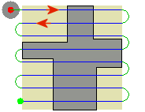 |
Both ways |
 |
 |
Climb |
Conventional |
Note: Depending on the geometry, it is not always possible to maintain climb or conventional milling throughout the entire toolpath.
Use Chip Thinning
Enable and the tool will roll onto the cut, reducing the chip load of the cutting edge.
 |
 |
Disabled |
Enabled |
Both Sides
Enable to machine from both side of the part when multiple depth cuts are taken. The starting stepover is applied from each side of the part for each stepdown pass.
 |
Pass 1 starts on the right |
 |
 |
Pass 1 - Stepover |
Pass 2 - Stepover |
Transition Type
Specifies the type of connection between passes.
Smooth Transition |
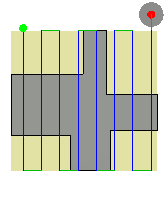 |
Straight Transition |
Short Transition |
No Contact (not shown) - Passes are not connected on the same Z level. The tool retracts between each connecting pass.
Direction
Lets you specify whether the program should climb or conventional mill the thread.
 |
 |
Conventional Milling |
Climb Milling |
Other Considerations.
The cut direction, the type of hole (OD or ID) and the threading hand direction (left or right) have an effect on where the thread milling starts. It's possible to cut from top to bottom or bottom to top, depending on these settings.
Examples:
A right hand thread on an OD (boss), with a climb cut will mill from the top to the bottom.
A right hand thread on an ID (hole), with a climb cut will mill from the bottom to the top.
 |
Use the Climb or Conventional Direction parameter to control Top to Bottom or Bottom to Top cut direction.
Direction
In conjunction with the turning mode, this setting determines the tool direction when cutting.
 |
 |
 |
Front to Back |
Back to Front |
Both Ways |
Front to Back - Select this option to cut from the front side of the stock towards the back side, i.e. towards the main chuck.
Back to Front - Cuts from the back side, toward the front side. Away from the chuck. For tools with special geometry where chip thinning control is important. See the Use Back Cutting option shown on the Passes tab.
Both Ways - This option allows the tool to cut in both directions. The result is a back and forth cutting motion. Ensure that you are using an appropriate tool that can cut in both directions when selecting this option.
Cycle
In conjunction with the Turning Mode, this setting determines the tool cutting direction.
|
 |
|
Horizontal Passes |
Vertical Passes |
Back Cutting |
Horizontal - Cuts from the front side of the stock towards the back side. Towards the main spindle.
Vertical - Cuts from the outside, toward the centerline for OD machining. Cuts from centerline, towards the outside for ID machining.
Back Cuttings - For tools with special geometry where chip thinning control is important. Cuts from the back side, towards the front side of the stock.
Back Cutting
For tools with special geometry where chip thinning control is important. This activates additional controls to set the Entry Radius blend and Exit Distance.
Only available when the Cycle type is set to Back cutting.
 |
C = Cut direction - Away from the Chuck |
Starting the toolpath closest to the chuck side, the Radius blends onto the cut and feeds in the positive direction. At a distance before the end of the cut, the feedrate is reduced to prevent chipping of the part or the tool.
Back Cutting
For tools with special geometry where chip thinning control is important. This activates additional controls to set the Back Cutting Radius blend and Back Cutting Exit Distance. Only available when the cutting mode direction is set from Back to Front.
|
C = Cut direction - Away from the Chuck |
Starting the toolpath closest to the chuck side, the Radius blends onto the cut and feeds in the positive direction. At a distance before the end of the cut, the feedrate is reduced to prevent chipping of the part or the tool.
Back Cutting Radius
This radius is used for the initial blend onto the cut. Consult your tooling supplier for their recommendation on the best blend size. Generally a size equal to, or larger than the Maximum Roughing Stepdown will work as a starting point.
 |
R = Radius for Back Cutting entry |
Back Cutting Exit Distance
Specifies the distance before the end of the cut to slow down the feedrate.
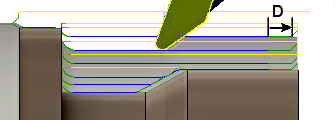 |
D = Distance before the end of the cut |
Reducing the feedrate before the end of the cut helps to prevent chipping of the part or the tool. This uses the Lead-Out Feedrate shown on the Tools Tab. Consult your tooling supplier for their recommendation on the best distance and feedrate to use
Direction
|
 |
 |
Outside to Inside |
Inside to Outside |
Both Ways |
Outside to Inside - Select this option to cut from the outside of the stock, towards the center.
Inside to Outside - Select this option to cut from the center of the stock, towards the outside.
Both Ways - For a face profiling operation, this option allows cutting in both directions.
Direction
Specifies if material is removed using Conventional Milling or Climb Milling, or a combination of both.
|
|
Conventional Milling |
Climb Milling |
Climb vs. Conventional Milling
Milling tools advance through the material so that the cutting flutes engage the material at maximum thickness and then decreases to zero. This is called Climb Milling.
Cutting in the opposite direction causes the tool to scoop up the material, starting at zero thickness and increasing to maximum. This is called Conventional Milling.
Conventional milling is used often on manual machines because backlash in the machine lead screws causes the tool to lurch when climb cutting. This is not a problem on CNC machines because they use ball screws.
Conventional milling causes the tool to rub against the cutting surface, work hardening the material, generating heat, and increasing tool wear. Raking chips across the finished surface also produces a poorer surface finish.
Unless specifically recommended by the tool manufacturer for the material being milled, always use climb milling on a CNC. Climb milling produces far less cutting pressure and heat, leaves a better surface finish, and results in longer tool life.
NOTE: When working with brittle materials, like acrylics, climb milling may be used so material does not "blow out" along edges.
Radial (Wall) Stock To Leave
The radial stock to leave parameter controls the amount of material to leave in the radial (perpendicular to the tool axis) direction, i.e. at the side of the tool.
 |
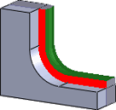 |
Radial stock to leave |
Radial and Axial stock to leave |
Specifying a positive radial stock to leave results in material being left on the vertical walls and steep areas of the part.
For surfaces that are not exactly vertical, the program interpolates between the axial (floor) and radial stock to leave values, so the stock left in the radial direction on these surfaces might be different from the specified value, depending on surface slope and the axial stock to leave value.
Changing the radial stock to leave automatically sets the axial stock to leave to the same amount, unless you manually enter the axial stock to leave.
For finishing operations, the default value is 0 mm/0 in, i.e. no material is left.
For roughing operations, the default is to leave a small amount of material that can then be removed later by one or more finishing operations.
Negative Stock to Leave
When using a negative stock to leave, the machining operation removes more material from your stock than your model shape. This can be used to machine electrodes with a spark gap, where the size of the spark gap is equal to the negative stock to leave.
Both the radial and axial stock to leave can be negative numbers. However, the negative radial stock to leave must be less than the tool radius.
When using a ball or radius cutter with a negative radial stock to leave that is greater than the corner radius, the negative axial stock to leave must be less than or equal to the corner radius.
Axial (Floor) Stock To Leave
The axial stock to leave parameter controls the amount of material to leave in the axial (along the Z-axis) direction, i.e. at the end of the tool.
 |
|
Axial Stock to Leave |
Both Radial and Axial Stock to Leave |
Specifying a positive axial stock to leave results in material being left on the shallow areas of the part.
For surfaces that are not exactly horizontal, the program interpolates between the axial and radial (wall) stock to leave values, so the stock left in the axial direction on these surfaces might be different from the specified value, depending on surface slope and the radial stock to leave value.
Changing the radial stock to leave automatically sets the axial stock to leave to the same amount, unless you manually enter the axial stock to leave.
For finishing operations, the default value is 0 mm/0 in, i.e. no material is left.
For roughing operations, the default is to leave a small amount of material that can then be removed later by one or more finishing operations.
Negative Stock to Leave
When using a negative stock to leave, the machining operation removes more material from your stock than your model shape. This can be used to machine electrodes with a spark gap, where the size of the spark gap is equal to the negative stock to leave.
Both the radial and axial stock to leave can be negative numbers, however when using a ball or radius cutter with a negative radial stock to leave that is greater than the corner radius, the negative axial stock to leave must be less than or equal to the corner radius.
Radial Stock To Leave
Controls the amount of material to leave in the radial direction.
Used for leaving stock on the ID or OD of the part.
 |
 |
Radial Stock 1mm |
Radial Stock 1mm |
 |
Radial Stock 0.0 |
 |
Radial and Axial Stock -1mm |
For surfaces that are not exactly horizontal, the program interpolates between the Axial Stock value (wall) and the Radial Stock values. The stock left in the radial direction on these surfaces might be different from the specified value, depending on surface slope and the axial stock to leave value.
Changing the Radial Stock to Leave value automatically sets the Axial Stock to Leave to the same amount. You can manually enter a different Axial Stock value.
If you plan on roughing and finishing with different tools, set the rough operation to the amount of stock to leave for the next finishing operation.
Negative Stock to Leave You may use a negative value. This will cause the tool to machine material beyond the edge of your model shape.
NOTE: - Maximum negative stock to leave must be less than the tool nose radius.
With an insert nose radius of .032, the largest negative stock would be -.032
You can not compensate past the theoretical tip of the tool.
Axial Stock To Leave
Controls the amount of material to leave on the vertical faces being turned.
 |
 |
Axial Stock 1mm |
Axial Stock 1mm |
|
Axial Stock 0.0 |
|
Radial and Axial Stock -1mm |
For surfaces that are not exactly vertical, the program interpolates between the Axial Stock value (wall) and the Radial Stock values. The stock left in the axial direction on these surfaces might be different from the specified value, depending on surface slope and the radial stock to leave value.
Changing the Radial Stock to Leave value automatically sets the Axial Stock to Leave to the same amount. You can manually enter a different Axial Stock value.
If you plan on roughing and finishing with different tools, set the rough operation to the amount of stock to leave for the next finishing operation.
Negative Stock to Leave You may use a negative value. This will cause the tool to machine material beyond the edge of your model shape.
NOTE: - Maximum negative stock to leave must be less than the tool nose radius.
With an insert nose radius of .032, the largest negative stock would be -.032
You can not compensate past the theoretical tip of the tool.
X Finish Allowance
Controls the amount of material to leave in the radial direction.
Used for leaving stock on the ID or OD of the part.
|
|
X Stock 1mm |
X Stock 1mm |
|
X Stock 0.0 |
|
X and Z Stock -1mm |
For surfaces that are not exactly horizontal, the program interpolates between the Axial Stock value (wall) and the Radial Stock values. The stock left in the radial direction on these surfaces might be different from the specified value, depending on surface slope and the axial stock to leave value.
Changing the X Stock to Leave value automatically sets the Z Stock to Leave to the same amount. You can manually enter a different Axial Stock value.
If you plan on roughing and finishing with different tools, set the rough operation to the amount of stock to leave for the next finishing operation.
Negative Stock to Leave You may use a negative value. This will cause the tool to machine material beyond the edge of your model shape.
NOTE: - Maximum negative stock to leave must be less than the tool nose radius.
With an insert nose radius of .032, the largest negative stock would be -.032
You can not compensate past the theoretical tip of the tool.
Z Finish Allowance
Controls the amount of material to leave in the axial direction.
Used for leaving stock on the vertical faces being turned.
|
|
Z Stock 1mm |
Z Stock 1mm |
|
Z Stock 0.0 |
|
Radial and Axial Stock -1mm |
For surfaces that are not exactly vertical, the program interpolates between the Axial Stock value (wall) and the Radial Stock values. The stock left in the axial direction on these surfaces might be different from the specified value, depending on surface slope and the radial stock to leave value.
Changing the X Stock to Leave value automatically sets the Z Stock to Leave to the same amount. You can manually enter a different Axial Stock value.
If you plan on roughing and finishing with different tools, set the rough operation to the amount of stock to leave for the next finishing operation.
Negative Stock to Leave You may use a negative value. This will cause the tool to machine material beyond the edge of your model shape.
NOTE: - Maximum negative stock to leave must be less than the tool nose radius.
With an insert nose radius of .032, the largest negative stock would be -.032
You can not compensate past the theoretical tip of the tool.
Extend to Stock
When enabled, applies the finish allowance (defined by the Stock to Leave) to the stock in addition to the model. This means that the toolpath does not dip as it comes off the shoulder on a model. Instead, the toolpath continues in a straight line, leaving a finish allowance on the stock as well.
When disabled, the finish allowance is applied only to the model.
 |
 |
Enabled |
Disabled |
Additional Offset
The additional offset is applied to the selected boundary/boundaries and tool containment.
A positive value offsets the boundary outwards unless the tool containment is Inside, in which case a positive value offsets inwards.
 |
 |
 |
Negative offset |
No offset |
Positive offset |
To ensure that the edge of the tool overlaps the boundary, select the Outside tool containment method and specify a small positive value.
To ensure that the edge of the tool is completely clear of the boundary, select the Inside tool containment method and specify a small positive value.
Stock To Leave
 |
 |
 |
Positive |
None |
Negative |
Positive Stock Value - The amount of stock left for subsequent roughing or finishing operations.
No Stock to Leave - Remove all material up to the selected geometry or part model.
'Negative Stock Value - Removes material beyond the selected geometry or part model. This technique is often used in Electrode Machining to allow for a spark gap or to meet tolerance requirements of a part.
Stock To Leave
 |
 |
 |
Positive |
None |
Negative |
Positive Stock Value - The amount of stock left for subsequent roughing or finishing operations.
No Stock to Leave - Remove all material up to the selected geometry or part model. This is the default.
Negative Stock Value - Removes material beyond the selected geometry or part model.
Geometry
Allows you to select the drill positions from points (vertices, sketch points, etc.), sketches containing points, arcs (sketch or solid edges), or cylindrical faces.
Remove Duplicate Holes
Specifies that duplicate holes should be removed.
Order By Depth
Specifies that the passes should be ordered top down.
 |
 |
Disabled |
Enabled |
Order By Depth
When enabled, cuts all of a single curve before cutting the next curve.
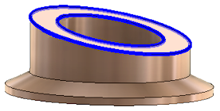 |
2 Edge Curves selected |
 |
Enabled |
 |
Disabled |
Drill Location Selections
You can select drilling locations by Model Face, Hole Edge, Sketch Point, Sketch Circle or a Diameter Size Range.
 |
 |
Face Selection |
Edge Selection |
 |
 |
Sketch Point Selection |
Sketch Circle Selection |
Hole Mode
Determines what you can select for your hole locations.
Selected Faces - Model based selection.
|
 |
Cylinder Face Selection |
Chamfer Face Selection |
Selected Points - Geometry based selection.
|
|
|
Feature Edge Selection |
Sketch Point Selection |
Sketch Circle Selection |
Diameter Range - Size based selection.
The system will evaluate the model based on the Minimum and Maximum Diameter values. Use this range to include or exclude hole sizes.
Example: Select all .250 - .2501 diameter holes for drilling and all .2505 - .2506 diameter holes for reaming.
Using Model based selections insures associativity to any future changes of the feature.
Note: Spot Drilling Options
* If you select the modeled chamfered face of a hole. The Bottom Height (depth) will automatically be determined to the theoretical tip.
* If you select by Diameter Range to include all holes. Set the Bottom Height from Chamfer Width and set the Chamfer Width value.
Hole Faces
Shows the number of Faces selected for drilling.
Selected Faces - Model based selection.
|
|
Cylinder Face Selection |
Chamfer Face Selection |
Note: To select geometry, switch the Hole Mode to Selected Points.
Hole Points
Shows the number of Points, Circles or Edges selected for drilling.
Selected Points - Geometry based selection.
|
|
|
Feature Edge Selection |
Sketch Point Selection |
Sketch Circle Selection |
Note: To select Model Features, switch the Hole Mode to Selected Faces.
Using Model based selections insures associativity to any future changes of the feature.
Minimum Hole Diameter
Sets the range of the smallest diameter to select from the model. Eliminates the need to physically select features from the model.
Handy for Spot or Center Drilling when you need to select a variety of holes.
Tip: To Spot drill and create a chamfer - Select a Range for the holes to include. Set the Bottom Height from Chamfer Width and set the Chamfer Width value.
Maximum Hole Diameter
Sets the range of the largest diameter to select from the model. Eliminates the need to physically select features from the model.
Handy for Spot or Center Drilling when you need to select a variety of holes.
Tip: To Spot drill and create a chamfer - Select a Range for the holes to include. Set the Bottom Height from Chamfer Width and set the Chamfer Width value.
Same Diameter
Check to select all holes with the same diameter as the currently select feature.
Example: If you activate this option, select a single 6mm hole and a single 12mm hole, every 6mm and 12mm hole on the part will automatically be selected.
 |
A single selection can detect matching holes. |
Note: This option is associative to the model. If additional holes with the same diameter are added to the model, regenerating the operation automatically includes the new holes.
Containment Boundary
Use this with Select Same Diameter and Diameter Range to include similar items inside the containment areas. Select any Edge or Sketch boundary to contain the drilling locations. Use multiple boundaries or nested boundaries, to include or exclude groups of holes. The toolpath will be inside the selected boundary unless the boundaries are nested. You can nest several boundaries inside each other.
In the examples below the selected boundaries are shown in blue.
 |
 |
Sketch Boundaries |
Holes inside are included |
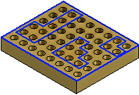 |
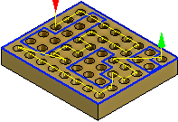 |
Nested Boundaries |
Inside areas are excluded |
 |
 |
Selecting the rim area only |
Excluding the rim area |
Same Depth
Check to select all the holes that share the same top to bottom distance as the currently select feature.
Example: You can use this as a way to distinguish between 6mm tapped holes and 6mm drilled holes of different depths.
Short Depth 6mm Holes Selected
 |
 |
Short Depth ISO View |
Short Depth Front View |
Long Depth 6mm Holes Selected
 |
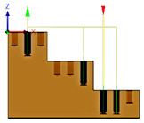 |
Long Depth ISO View |
Long Depth Front View |
Only Same Z Top Height
Check to select all the holes that share the same Z top height as the currently select feature.
Arrow indicates the selected hole feature.
 |
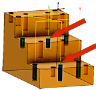 |
All Short Depth Holes |
All Short Depth Holes |
Auto-Merge Hole Segments
Check to merge multiple hole segments. When enable all hole segments are included to determine the starting height for drilling.
Example: If a hole was Spot Drilled or Counter Bored first, you may want to start drilling from a clearance above that machined area. Enabling Auto-Merge will start the drilling from above the highest hole segment.
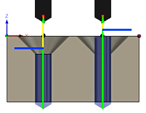 |
Left: Auto-Merge Disabled - Right: Auto-Merge Enabled |
Order By Depth
For holes with multiple Z start heights.
Changes the order from the highest to lowest, or lowest to highest. Unchecked, the order will start with the holes at the highest Z level and progressively move down. Check to reverse the order.
 |
 |
When Unchecked |
When Checked |
Order
Specifies how the holes should be ordered for machining. Optimized hole movements can reduce cycle time.
 |
 |
Order selected |
Optimized order |
 |
Inside to Outside |
 |
 |
Order By X |
Order By Y |
Reverse Order
Enable to change the order of the currently selected toolpath to start at the opposite position.
|
 |
Disabled |
Enabled |
Drill Tip Through Bottom
When Enabled the tool tip will drill past the bottom of the hole. It positions the lip of the drill to the full diameter at the bottom of the hole.
 |
Depth is to the Tip - Depth is to the Lip. |
Note: When drilling through the bottom of the part, be aware of the fixture or material below the part.
Break-Through Depth
Specifies how far the lip of the tool drills past the bottom of the hole, to ensure a clean cut through the part.
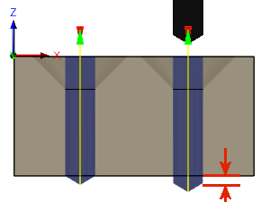 |
Left: Break Through 0.0 - Right: Break Through 0.06 |
Note: When drilling through the bottom of the part, be aware of the fixture or material below the part.
Cycle Type
Selecting the type of drilling cycle changes which parameters can be used for the drilling operation. Shown with the common industry G-Code.
- Drilling: Feed to Depth & Rapid Out - For holes with depths of less than 3x the tool diameter. (G81)
- Counterboring: Feed to Depth, Dwell, Rapid Out - A dwell is used to improve the bottom finish of a hole. (G82)
- Chip breaking: Uses multiple pecks that periodically retracting the tool to break the chips and/or allow coolant to enter the hole. For holes with depths more than three times the tool diameter. (G73)
- Deep drilling: Similar to Chip breaking, but retracts completely out of the hole to clear chips and/or flood the hole with coolant. Also known as Peck drilling. (G83)
- Break through: Allows for reduced feed and speed before breaking through a hole.
- Guided deep drilling: A gun drill has a single cutting edge. Guide pads burnish the hole to produces a straight, deep hole with a precision diameter.
- Tapping: Taps right or left handed threads depending on the selected tool.
- Left tapping: Feed to Depth, Reverse the spindle, Feed Out - Rotates counterclockwise as it enters the hole to cut a thread. (G74)
- Right tapping: Feed to Depth, Reverse the spindle, Feed Out - Rotates clockwise as it enters the hole to cut a thread. (G84)
- Tapping with chip breaking: Feeds in and out multiple times, going deeper each time, until it reaches the final depth.
- Reaming: Feed to Depth and immediately Feed Out upon reaching the final depth. (G85)
- Boring: Feed to Depth, Dwell, Feed Out. (G86)
- Stop boring: Feed to Depth, Stop the spindle, Rapid Out. (G87)
- Fine boring: Feed to Depth, Stop the spindle, Shift from the wall, Rapid Out. (G76)
- Back-boring: Boring from the back of an existing hole. (G77)
- Circular pocket milling: This can be used to call a custom cycle for circular pocketing.
- Bore milling: This can be used to call a custom cycle for helical bore milling.
- Thread milling: This can be used to call a custom cycle for helical thread milling.
- Probe: Used to call a probe tool macro from the machine. Requires a custom post processors. See the advanced Probing function, under the Setup pull down.
Pecking Depth
Sets the depth for the first peck move, which plunges in and out of the material to clear and break chips.
Accumulated Pecking Depth
Specifies the pecking depth which forces a full retract.
Boring Shift
Sets the distance that a boring bar tool moves away from the wall of the toolpath before retracting to prevent gouging. This option only applies to bore bar drill cycles.
Sideways Compensation
This setting determines the side of the toopath from which the tool center is offset. Choose between Left (climb milling) sideways compensation or Right (conventional milling) sideways compensation.
|
|
Climb Milling |
Conventional Milling |
Climb vs. Conventional Milling
Climb milling can be thought of as the cutter rolling along the surface that it is cutting. This generally gives a better finish in most metals, but requires good machine rigidity. Using this method, chips start at maximum thickness and get thinner towards the end of the cut, meaning more heat in the chip and less in the part.
With conventional milling, the cutter is rotating away from the surface it is cutting. This method is more commonly used with manual or less rigid machines. It does have some advantages, and can even give a better finish when machining certain materials including some woods.
Compensation Type
Specifies the compensation type.
- In computer - Tool compensation is calculated automatically by the program, based on the selected tool diameter. The post-processed output contains the compensated path directly, instead of G41/G42 codes.
- In control - Tool compensation is not calculated, but rather G41/G42 codes are output to allow the operator to set the compensation amount and wear on the machine tool control.
- Wear - Works as if In computer was selected, but also outputs the G41/G42 codes. This lets the machine tool operator adjust for tool wear at the machine tool control by entering the difference in tool size as a negative number.
- Inverse wear - Identical to the Wear option, except that the wear adjustment is entered as a positive number.
Note that control compensation (including Wear and Inverse wear) is only done on finishing passes.
Sideways Compensation
Determines how to offset the cut from the selected edge.
 |
Examples of Left, Right and Center cutting offsets. |
- Left - Compensate Left of the selected edge.
- Right - Compensate Right of the selected edge.
- Center - Puts the cutting head directly on the selected edge.
Left will compansate the head away from the edge, based on these rules.
* For an Outside cut, with a Clockwise chain selection.
* For an Inside cut, with a Counter-Clockwise chain selection.
Changing the direction of the cut requires a Right Compensation direction.
NOTE. - Use Center for Etching.
This keeps the head directly on the selected chain.
Compensation Type
Specifies the compensation type.
* In computer - The head position is calculated by the program, based on the Kerf diameter and the Sideways Compensation direction. The post-processed output contains the actual compensated position to cut the part to size.
The Computer compensates for the width of the Kerf.
* In control - The head position is output as the actual coordinates of the selected chain. Compensation is not calculated, but instead, compensation codes are output to allow the operator to set the offset amount at the machine tool control.
The Machine Control compensates for the width of the Kerf.
Compensation Type
Specifies the compensation type.
- In computer - Tool compensation is calculated automatically by the program, based on the selected tool diameter. The post-processed output contains the compensated path directly, instead of G41/G42 codes.
- In control - Tool compensation is not calculated, but rather G41/G42 codes are output to allow the operator to set the compensation amount and wear on the machine tool control.
- Wear - Works as if In computer was selected, but also outputs the G41/G42 codes. This lets the machine tool operator adjust for tool wear at the machine tool control by entering the difference in tool size as a negative number.
- Inverse wear - Identical to the Wear option, except that the wear adjustment is entered as a positive number.
Maximum Stepover
Specifies the maximum stepover for each cut.
 |
Maximum Stepover |
Number of Stepovers
Specifies the maximum number of stepovers.
 |
Number of Stepovers |
Maximum Stepover
Specifies the maximum horizontal stepover between passes.
 |
NOTE: This is NOT the same as optimal load settings with adaptive clearing paths. With legacy 2D roughing, the tool still sees full cutter engagement when transitioning from one pass to the next.
 |
 |
Adaptive Clearing |
Legacy 2D Clearing |
Smoothing Deviation
The maximum amount of smoothing applied to the roughing passes. Use this parameter to avoid sharp corners in the toolpath.
 |
Corner Deviation
The maximum corner deviation. Use this parameter to avoid sharp corners in the toolpath.
Smoothing Deviation
The maximum amount of smoothing applied to the roughing passes. Use this parameter to avoid sharp corners in the toolpath.
|
Finishing Passes
 |
 |
With Finishing Passes |
Without Finishing Passes |
Enable to perform finishing passes using the side of the tool.
NOTE: This option is typically used when roughing and finishing is being done with the same tool.
Finishing Passes
Enable this option to perform the specified number of finishing passes.
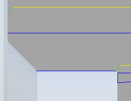 |
 |
Finishing Passes disabled |
Finishing Passes enabled |
Finishing Passes
Enable this option to perform the specified number of finishing passes.
 |
 |
Finishing Passes disabled |
Finishing Passes enabled |
Finishing Passes
This option is only available when Roughing Passes is enabled. The images below also have Roughing Clearing Pass enabled, creating the impression that there are two finishing passes. Tip: Using this technique can remove the requirement of a secondary finishing operation.
 |
 |
Finishing Passes disabled |
0.75mm Finishing Pass |
Stepover
Specifies the maximum stepover for each cut, when taking multiple finishing passes.
|
Finishing Stepover |
Number Of Finishing Passes
Specifies the number of finishing passes.
 |
Shown with three finishing passes |
Leads On All Finishing Passes
Forces a full lead in and out on every finishing pass.
 |
 |
Enabled |
Disabled |
NOTE: Lead parameters are set on the Linking tab of the Operations dialog box.
Repeat Finishing Pass
Enable to perform an additional finishing pass with zero (0.0) stock.
Clears the stock left over from tool deflection.
Also refered to as a Spring Pass.
No Dragging
When selected, moves that apply negative pressure on the insert are eliminated. Removes cuts up vertical walls and faces. Before reaching the end of the cut, the tool retracts and changes position to cut down the wall fom the outside.
 |
 |
No Dragging Disabled |
No Dragging Enabled |
No Drag Limit
Specifies the minimum angle between the part face and the cutting edge of the insert, that triggers the No Drag toolpath actions.
 |
Minimum Angle |
No Drag Clearance
Specifies the distance to stop before reaching the end face. Causes the tool to retract and change the cut direction.
Distance from Drag face |
No Drag Overlap
Specifies the distance to overlap the last cut, before the retract.
 |
Cut Overlap |
Spring Pass
Enable to perform the final finishing pass twice to remove stock left due to tool deflection.
Multiple Depths
Specifies that multiple depths should be taken.
 |
 |
With Multiple Depth cuts |
Without Multiple Depth cuts |
NOTE: Adaptive clearing strategies allow for much more aggressive depth cuts than legacy 2D pockets.
Multiple Depths
Enable to specify the step to create multiple depth cuts.
 |
Disabled |
 |
Enabled |
 |
Enabled |
Maximum Roughing Stepdown
Specifies the maximum stepdown between Z-levels for roughing.
 |
Maximum Roughing Stepdown |
NOTE: Sequential Z-level stepdowns are taken at the Maximum Roughing Stepdown value. The Final Roughing stepdown takes the remaining stock, once the remaining stock is less than the Maximum Roughing Stepdown value.
Maximum Stepdown
Specifies the maximum stepdown between Z-levels for taking multiple depth cuts.
|
.020 in. Maximum Stepdown |
|
.020 in. Maximum Stepdown |
Maximum Roughing Stepdown
Controls the maximum amount to remove for each roughing cut. A larger value removes more material with each roughing pass. A smaller value reduces the amount of stress on the tool.
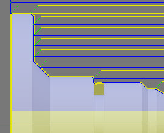 |
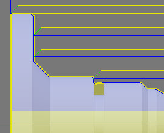 |
Smaller 2mm cut |
Larger 4mm Cut |
Depth of cut
Controls the maximum amount to remove for each roughing cut. A larger value removes more material with each roughing pass. A smaller value reduces the amount of stress on the tool.
Smaller 2mm cut |
Larger 4mm Cut |
Maximum Stepdown
Specifies the maximum stepdown between Z-levels.
Maximum Stepdown
Specifies the maximum stepdown between Z-levels.
Finishing Stepdowns
The number of finishing passes using the bottom of the tool.
 |
Shown with three Finishing Passes |
Finishing Stepdown
The size of each stepdown in the finishing passes.
 |
Finishing Stepdown |
Wall Taper Angle
Specifies the taper angle of the walls.
Defining a slope angle can be used to machine features with a 2D strategy that would have otherwise required a 3D strategy.
NOTE: - The slope angle is NOT driven by model geometry, so it is possible that an error entering the slope angle can affect the finished machined part.
 |
 |
Slope Angle @ 0 deg |
Slope Angle @ 45 deg |
Geometry Selection
 |
 |
Bottom Selection |
Top Selection |
NOTE: When using a slope angle with the Adaptive Clearing strategy, geometry must be selected at the top of the pocket.
Finish Only At Final Depth
Perform finishing passes only at the final depth to avoid leaving marks on the walls.
 |
 |
Disabled |
Enabled |
Minimum Axial Engagement
Specifies the minimum allowed axial engagement for the intermediate steps.
This feature is commonly used to keep at least one flute constantly enganed as it turns and hence can reduce tool wear and chatter.
NOTE: - Skipping intermediate steps will leave extra stock for the following semi-roughing operation.
Tolerance
The machining tolerance is the sum of the tolerances used for toolpath generation and geometry triangulation. Any additional filtering tolerances must be added to this tolerance to get the total tolerance.
 |
 |
Loose Tolerance .100 |
Tight Tolerance .001 |
CNC machine contouring motion is controlled using line G1 and arc G2 G3 commands. To accommodate this, CAM approximates spline and surface toolpaths by linearizing them; creating many short line segments to approximate the desired shape. How accurately the toolpath matches the desired shape depends largely on the number of lines used. More lines result in a toolpath that more closely approximates the nominal shape of the spline or surface.
Data Starving
It is tempting to always use very tight tolerances, but there are trade-offs including longer toolpath calculation times, large G-code files, and very short line moves. The first two are not much of a problem because the program calculates very quickly and most modern controls have at least 1MB of RAM. However, short line moves, coupled with high feedrates, may result in a phenomenon known as data starving.
Data starving occurs when the control becomes so overwhelmed with data that it cannot keep up. CNC controls can only process a finite number of lines of code (blocks) per second. That can be as few as 40 blocks/second on older machines and 1,000 blocks/second or more on a newer machine like the Haas Automation control. Short line moves and high feedrates can force the processing rate beyond what the control can handle. When that happens, the machine must pause after each move and wait for the next servo command from the control.
Tolerance
The machining tolerance is the sum of the tolerances used for toolpath generation and geometry triangulation. Any additional filtering tolerances must be added to this tolerance to get the total tolerance.
|
|
Loose Tolerance .100 |
Tight Tolerance .001 |
CNC machine contouring motion is controlled using line G1 and arc G2 G3 commands. To accommodate this, CAM approximates spline and surface toolpaths by linearizing them; creating many short line segments to approximate the desired shape. How accurately the toolpath matches the desired shape depends largely on the number of lines used. More lines result in a toolpath that more closely approximates the nominal shape of the spline or surface.
Data Starving
It is tempting to always use very tight tolerances, but there are trade-offs including longer toolpath calculation times, large G-code files, and very short line moves. The first two are not much of a problem because the program calculates very quickly and most modern controls have at least 1MB of RAM. However, short line moves, coupled with high feedrates, may result in a phenomenon known as data starving.
Data starving occurs when the control becomes so overwhelmed with data that it cannot keep up. CNC controls can only process a finite number of lines of code (blocks) per second. That can be as few as 40 blocks/second on older machines and 1,000 blocks/second or more on a newer machine like the Haas Automation control. Short line moves and high feedrates can force the processing rate beyond what the control can handle. When that happens, the machine must pause after each move and wait for the next servo command from the control.
Tolerance
The tolerance used when linearizing geometry such as splines and ellipses. The tolerance is taken as the maximum chord distance.
|
|
Loose Tolerance .100 |
Tight Tolerance .001 |
CNC machine contouring motion is controlled using line G1 and arc G2 G3 commands. To accommodate this, CAM approximates spline and surface toolpaths by linearizing them; creating many short line segments to approximate the desired shape. How accurately the toolpath matches the desired shape depends largely on the number of lines used. More lines result in a toolpath that more closely approximates the nominal shape of the spline or surface.
Data Starving
It is tempting to always use very tight tolerances, but there are trade-offs including longer toolpath calculation times, large G-code files, and very short line moves. The first two are not much of a problem because the program calculates very quickly and most modern controls have at least 1MB of RAM. However, short line moves, coupled with high feedrates, may result in a phenomenon known as data starving.
Data starving occurs when the control becomes so overwhelmed with data that it cannot keep up. CNC controls can only process a finite number of lines of code (blocks) per second. That can be as few as 40 blocks/second on older machines and 1,000 blocks/second or more on a newer machine like the Haas Automation control. Short line moves and high feedrates can force the processing rate beyond what the control can handle. When that happens, the machine must pause after each move and wait for the next servo command from the control.
Tolerance
The tolerance used when linearizing geometry such as splines and ellipses. The tolerance is taken as the maximum chord distance.
|
|
Loose Tolerance .100 |
Tight Tolerance .001 |
CNC machine contouring motion is controlled using line G1 and arc G2 G3 commands. To accommodate this, CAM approximates spline and surface toolpaths by linearizing them; creating many short line segments to approximate the desired shape. How accurately the toolpath matches the desired shape depends largely on the number of lines used. More lines result in a toolpath that more closely approximates the nominal shape of the spline or surface.
Data Starving
It is tempting to always use very tight tolerances, but there are trade-offs including longer toolpath calculation times, large G-code files, and very short line moves. The first two are not much of a problem because the program calculates very quickly and most modern controls have at least 1MB of RAM. However, short line moves, coupled with high feedrates, may result in a phenomenon known as data starving.
Data starving occurs when the control becomes so overwhelmed with data that it cannot keep up. CNC controls can only process a finite number of lines of code (blocks) per second. That can be as few as 40 blocks/second on older machines and 1,000 blocks/second or more on a newer machine like the Haas Automation control. Short line moves and high feedrates can force the processing rate beyond what the control can handle. When that happens, the machine must pause after each move and wait for the next servo command from the control.
Confinement
Turning operations attempt to remove all the remaining stock possible with the selected operation type. The toolpath can be contained within a specific region using confinement boundaries.
 |
 |
Confinement enabled |
Confinement disabled |
Illustrated with Turning Profile
Confinement
Confinement regions can be defined with a combination of edges, surfaces, and/or sketch points as show below.
 |
 |
Geometry sections |
Resulting toolpath |
Illustrated with Turning Groove
Multiple Finishing Passes
Enable to perform multiple finishing passes.
Multiple Finishing Passes
Enable to specify more than one finishing pass. If Finishing Passes is enabled, but Multiple Finishing Passes is disabled, then only one finishing pass is performed.
 |
 |
Multiple Finishing Passes ON |
Multiple Finishing Passes OFF |
Finishing Smoothing Deviation
The maximum amount of smoothing applied to the finishing passes. Use this parameter to avoid sharp corners in the toolpath. Setting this parameter leaves more stock than requested at the contour corners.
|
Roughing Passes
Can be used to take multiple cuts around the selected profile. This activates additional parameters for controlling the Stepover and Number of cuts.
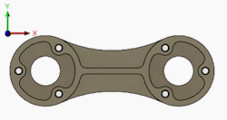 |
 |
Roughing Passes disabled |
Roughing Passes enabled with |
Roughing Passes
Enabling roughing passes provides you with the ability to fine tune your grooving toolpath. Options such as grooving stepover, pecking, and additional finishing controls become available; as well as additional settings within the Roughing Passes group.
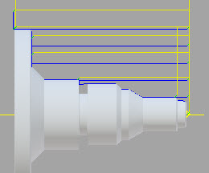 |
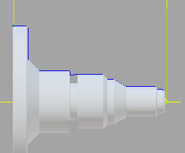 |
Roughing Passes disabled |
Roughing Passes enabled with a |
Note: With Roughing Passes disabled, the stepover for both Full & Partial Stepdown is automatically calculated based on the groove width value of the insert.
Roughing Passes
Enabling roughing passes provides you with the ability to fine tune your grooving toolpath. Options such as grooving stepover, pecking, and additional finishing controls become available; as well as additional settings within the Roughing Passes group.
 |
 |
Roughing Passes disabled |
Roughing Passes enabled with a |
Note: With Roughing Passes disabled, the stepover for both Full & Partial Stepdown is automatically calculated based on the groove width value of the insert.
Roughing Clearing Pass
Specifies that cusps left by the initial roughing passes should be cleared. Enable this setting to avoid the tool loading up with a greater than expected amount of material during the final profile pass. This can become particularly relevant with some geometries when cusps are left on the groove wall.
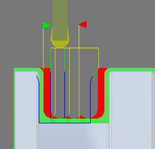 |
|
Roughing Clearing Pass disabled |
Roughing Clearing Pass enabled |
The red shaded area at the left represents the stock that would be removed by Roughing Clearing Pass once enabled.
Note: The clearing pass itself is applied in the Down direction only, irrespective of the Up/Down Direction setting.
Stepover
Specifies the horizontal stepover between passes.
 |
 |
Stepover distance |
Stepover distance |
The default value is 50% of the cutter diameter.
Stepover
Specifies the stepover amount between passes.
 |
The amount per each cut, when Multiple passes is activated. |
Stepover
This distance determines the amount of material initial toolpaths leave for the first finishing pass and for any subsequent finishing stepovers.
 |
Two 0.75mm Stepovers |
Stepover
This distance determines the amount of material initial toolpaths leave for the first finishing pass and for any subsequent finishing stepovers.
 |
 |
0.5mm Stepover |
2mm Stepover |
Stepover
Specifies the horizontal stepover between passes.
|
Horizontal Stepover |
The default value is calculated by tool type.
Flat tools = Diameter x 95%
Bull nose = Flat area x 95%
Ball nose = Diameter x 5%
Stepover
Specifies the horizontal stepover between passes.
|
Stepover distance |
The default value is 10% of the cutter diameter.
Stepover
Specifies the horizontal stepover between passes.
|
Stepover distance |
The default value is calculated by tool type.
Flat tools = Diameter x 80%
Bull nose = Flat area x 80%
Ball nose = Diameter x 5%
Number Of Stepovers
The number of finishing steps.
Number Of Stepovers
The number of cutting steps.
|
Uses Multiple cuts to achieve the full thread milling depth. |
Number Of Stepovers
Controls the number of finishing stepovers to apply. If Roughing Clearing Pass is enabled in the Roughing Passes group, it can appear as though more stepovers have been applied than specified.
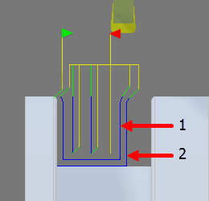 |
 |
Two Stepovers |
Two Stepovers + Roughing Clearing Pass |
Number Of Stepovers
The number of additional steps to each side of the pencil curve.
Geometry for Circular Milling
Select any cylindrical holes, pockets or bosses. Only Face selections are allowed.
 |
Circular Mill Face Selection |
Select any cylindrical face from the model. Diameter, Starting height and Bottom depth is all derived from this selection.
Geometry for Circular Milling
Select any cylindrical holes, pockets or bosses. Only Face selections are allowed. Diameter, Starting height and Bottom depth is all derived from this selection.
|
Circular Mill Face Selection |
Multiple Passes
Enable to enter a value for multiple side cuts when Circular Milling.
 |
Multiple side cuts |
Number Of Stepovers
The number of side cuts to make.
|
Multiple side cuts |
Stepover
Specifies the side cut stepover amount between passes.
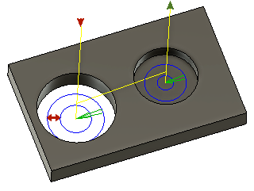 |
Multiple side cuts |
Multiple Depths
Enable to take multiple depth cuts in Z.
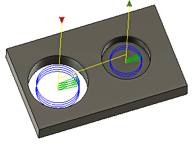 |
Multiple Z Depth cuts |
Maximum Roughing Stepdown
Specifies the maximum stepdown between Z-levels for roughing.
Maximum Roughing Stepdown |
NOTE: All stepdowns are taken at the Maximum Roughing Stepdown value. The Final Roughing stepdown takes any remaining stock. Select Use Even Stepdowns for equal depth cuts.
Geometry
Closed or open boundaries can be machined by selecting Edges or Sketches. The Slot shape can be straight, circular or contain multiple curves. But it must be a continuous width slot shape.
 |
 |
Slot shaped areas |
Slot toolpaths |
Note: The Slot toolpath will only cut a clearance channel thru the center. It is not an area clearance toolpath like 2D Pocket or 2D Adaptive.
Pocket Selections
Select closed or open boundaries with Edges or Sketches. The Slot shape can be straight, circular or contain multiple curves. But it must be a continuous width slot shape.
|
|
Slot shaped areas |
Slot toolpaths |
Note: The Slot toolpath will only cut a clearance channel thru the center. It is not an area clearance toolpath like 2D Pocket or 2D Adaptive.
Backoff Distance
The distance to move away from the last cut, before retracting the tool.
 |
Distance 0.0 in |
 |
Distance .200in |
Repeat Finishing Pass
Enable to perform an additional finishing pass with zero (0.0) stock.
Clears the stock left over from tool deflection.
Also refered to as a Spring Pass.
|
Disabled |
 |
Enabled |
Maximum Ramp Stepdown
Specifies the maximum stepdown per revolution on the ramping profile. Overrides the Angle by limiting the Z depth per pass.
 |
Value of .750in |
 |
Value of .250in |
Note: This is important on long slots. This parameter allows the tool load to be constrained when doing full-width cuts during ramping.
Ramp Type
Specfies how the cutter moves down for each depth cut.
 |
Predrill |
 |
Plunge |
 |
Profile |
Note: Predrill requires a point selection, shown below.
Geometry
Select the profile to be engraved using Edges or Sketches. Contiguous geometry is automatically chained. This toolpath requires a closed boundary.
 |
Select any closed area |
Contour Selections
Select the profile to be engraved using Edges or Sketches. Contiguous geometry is automatically chained. This toolpath requires a closed boundary.
|
Select any closed area |
Sharp Corner Angle
Engrave creates sharp corners in the pocket by moving the cutter along the corner intersection. If the angle between edges is greater than this value, there will not be a corner clean out move.
 |
Part angle is 165 |
 |
Sharp Corner Angle set to 160 |
 |
Sharp Corner Angle set to 168 |
Geometry
Select any 2D or 3D Edges or Sketches to define the machining curve. Select one or more curves for machining. This edge can be used for single line engraving, text or edge cleanup by using the Chamfer options.
 |
 |
Curve Selection
Select any 2D or 3D Edges or Sketches to define the machining curve. Select one or more curves for machining. This edge can be used for single line engraving, text or edge cleanup by using the Chamfer options.
|
|
Chamfer Width
The width of the chamfer.
For edges that are not already chamfered, this is the final width of the chamfer.
For chamfered edges, this is an additional offset; similar to using negative radial stock to leave.
 |
Chamfer Width |
Chamfer Width
The width of the chamfer.
For edges that are not already chamfered, this is the final width of the chamfer.
For chamfered edges, this is an additional offset; similar to using negative radial stock to leave.
|
Chamfer Width |
Chamfer Edge
Select the sharp edges that requires a chamfer.
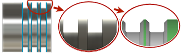 |
Selected Edges to be machined are shown in blue |
Chamfer Width
The axial distance across the chamfer.
The amount to break the selected edge. Shown below in the center illustration.
 |
Chamfer Extension - Chamfer Width - Chamfer Angle |
Chamfer Extension
The distance to extend the tool past the chamfer.
Provides additional clearance past the chamfer edge. Shown below in the left illustration.
|
Chamfer Extension - Chamfer Width - Chamfer Angle |
Chamfer Angle
The angle of the chamfered face.
The angle is referenced from the Z axis. Shown below in the right illustration.
|
Chamfer Extension - Chamfer Width - Chamfer Angle |
Chamfer Tip Offset
This is added to the toolpath depth, while keeping the tool in contact with the selected edge by adjusting the toolpath radial offset.
 |
Chamfer Tip Offset |
NOTE: Allows you to cut past the bottom of the Chamfer edge. Keeps you from cutting with the bottom tool edge.
Chamfer Clearance
This value specifies how far the tool needs to stay away from model geometry that is not being chamfered.
Chamfer Clearance |
NOTE: Allows you to cut the Chamfer to a blended edge, while avoiding collisions with intersecting walls.
Pass Extension
Distance to extend the passes beyond the machining boundary.
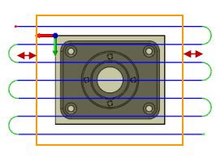 |
Pass Extension |
Pass Direction
Specifies the direction of the milling passes.
 |
 |
Pass Direction @ 0 degrees |
Pass Direction @ 45 degrees |
Pass Direction
Specifies the direction of the turning passes.
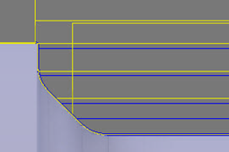 |
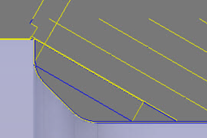 |
Pass Direction @ 0 degrees |
Pass Direction @ 30 degrees |
Bottom
The maximum cutting depth.
Top
Specifies the top of the stock.
Optimal Load
The maximum amount of engagement the Adaptive toolpath should maintain.
This can be considered the stepover amount, but Adaptive High Speed Machining will vary the stepover to reduce overloading the tool.
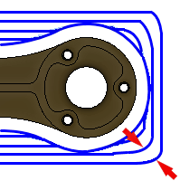 |
High Speed Clearing Toolpath |
Traditional pocket toolpaths can overload the tool. Adaptive Clearing results in 40% faster material removal, allowing you to take longer depth cuts with full confidence. High Speed Machining - HSM, Adaptive eliminates spikes in tool engagement that could break cutters.
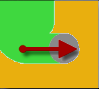 |
 |
No HSM |
HSM Removal |
Load Deviation
The maximum deviation of the optimal tool load. The load is never higher than the optimal load plus the deviation.
Minimum Cutting Radius
Defines the smallest toolpath radius to generate in a sharp corner. Minimum Cutting Radius creates a blend at all inside sharp corners.
Forcing the tool into a sharp corner, or a corner where the radius is equal to the tool radius, can create chatter and distort the surface finish.
 |
 |
Set to Zero |
Set to 0.07 in |
NOTE: Setting this parameter leaves more material in internal corners, requiring subsequent rest machining operations with a smaller tool.
Fine Stepdown
Specifies the fine stepdown for intermediate steps. These steps are upwards in the direction of the tool axis.
Round Walls
Enable to round the extruded walls.
Machine Cavities
If enabled, the strategy ramps into pockets and machines these.
If disabled, the strategy only machines from the outside-in and leaves pockets unmachined.
Manual Stepover
Enable to set the stepover manually.
Minimum Stepover
Specifies the minimum stepover.
Prevent Full-Width Cuts
Specifies that full-width cuts should be avoided.
Maximum Tool Engagement
Specifies the maximum tool engagement for full-width cuts.
Maximum Trochoidal Radius
Specifies the maximum trochoidal radius.
Machine Shallow Areas
Specifies that extra Z-level passes should be taken in shallow areas to remove excessive cusps.
 |
 |
Disabled |
Enabled |
Illustrated with 3D Contour
Minimum Shallow Stepdown
This parameter controls the minimum allowed stepdown between the extra Z-levels. It takes precedence over the Maximum Shallow Stepover.
Maximum Shallow Stepover
This parameter controls the stepover used to detect areas where extra Z-levels should be inserted. If the normal stepdown results in a stepover of more than this value, extra levels are inserted until the stepover or the minimum stepdown is reached.
Flat Area Detection
If enabled, the strategy attempts to detect the heights of flat areas and peaks, and machine at these levels.
If disabled, the strategy machines at exactly the specified stepdowns.
Important: Enabling this feature may increase calculation time considerably.
Minimum Stepdown
Used when detecting flat areas. This is the smallest allowable stepdown to make.
Axial Offset Passes
Enable to do multiple depth cuts.
Axial offset passes are used to create multiple incremental Z passes. They work much like multiple finishing stepdowns in the 2D operations. They are useful for removing a fixed amount of stock using several passes.
 |
 |
4 cuts of .010 in |
Three Axial Offset Passes |
Number Of Stepdowns
Specifies the desired number of stepdowns.
Overthickness
Additional thickness which is applied to the tool to detect passes.
 |
The amount between the actual part radius and the actual tool radius. |
Bitangency Angle
An angle in degrees, that is used to determine the number of passes along a wall or fold.
 |
An angle representing the contact points for the tool. |
Cutter paths are created along all the contact areas where it would make two simultaneous contacts with the part, at more than this angular difference.
Limit Number Of Stepovers
When disabled, the number of steps is unlimited and the result is a collapsed pencil finish of the entire surface.
Calculate Number Of Stepovers
When disabled, you can specify the number of steps and distance per step.
When enabled, the stepover and amount of stock, determines the number of cuts.
Use Reduced Feedrate
Enabled to reduce the feedrate before the final cut position.
 |
 |
Disabled |
Enabled |
Reduced Feed Radius
Sets the radius before the final cut position where the feedrate will change.
Lowering the feedrate before the end of the cut reduces the load on the tool.
|
Feed change radius position |
Reduced Feed
Sets the new feedrate to apply at the Feed Radius position.
Lowering the feedrate before the end of the cut reduces the load on the tool.
|
Feed change position |
Reduced Spindle Speed
Sets the new spindle speed to apply at the Feed Radius position.
Changing the spindle speed before the end of the cut can change the load on the tool.
|
Speed change position |
Reduced Feed
Sets the new feedrate to apply at the Feed Radius position.
Lowering the feedrate before the end of the cut reduces the load on the tool.
|
Feed change position |
Inside/Outside Direction
Specifies if the toolpath moves inside-out or outside-in. The Shortest machining distance option uses a mixture of the ordering to achieve the shortest machining distance.
 |
 |
Outside -> in |
Inside -> out |
Link From Inside To Outside
Enable to specify whether the linking between passes should be done without particular ordering or linking should be done by ordering from inside passes to outside passes.
Angular Step
The angular step in degrees between radial passes.
Angle From
The Radial starting angle in degrees measured from the X axis as viewed from the WCS.
 |
From Angle |
Angle To
The Radial ending angle in degrees measured from the X axis as viewed from the WCS.
 |
To Angle |
Inner Limit
Sets the minimum inner radius.
 |
 |
No inner Radius |
Inner Radius |
Illustrated with 3D Spiral
Outer Limit
Sets the maximum outer radius.
|
 |
No outer Radius |
Outer Radius |
Illustrated with 3D Spiral
Manual Center
The center of the radial passes.
Clockwise
Specifies that the spiral is clockwise.
Wrap Toolpath
Wraps the toolpath around a cylinder.
The resulting toolpath can be output using axis substitution around a rotary axis, or as full multi-axis moves.
NOTE: Wrap Toolpath introduces a skewing that affects the precision of the result. Specifically any wall below the Wrap Radius will be overcut. To finish walls in a true 4-axis fashion, use Swarf with the Limit to 4-axis option enabled.
Wrap Radius Offset
When performing the wrapping, the toolpath can only be accurate at one radius, the Wrap Radius, which defaults to the radius of the selected wrap cylinder. This offset allows you to adjust the wrap radius.
Wrap Radius
When performing the wrapping, the toolpath can only be accurate at one radius. This is the radius at which the wrapping is performed, and the radius at which it will be accurate.
Any wall below this radius will be overcut, and any wall above this radius will be undercut.
Wrap Cylinder
The cylinder that the toolpath will be wrapped around.
For axis substitution this needs to be along the rotary axis on your machine.
For multi-axis this can be any axis as long as the resulting toolpath positions are reachable by the machine.
Tool Orientation
Override the tool orientation defined in the setup.
Works with all 2D and 3D operations to control 3 + 2 Axis programming.
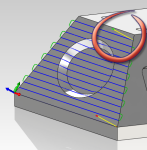 |
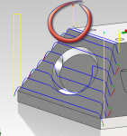 |
Tool Orientation enabled |
Tool Orientation disabled |
Tool Orientation Selection
Specifies how the tool orientation is specified.
- Use WCS is the default, and uses the workpiece coordinate system (WCS) of the current job for the tool orientation.
- Use Point & Plane sets a specific tool orientation for this operation from any selected point and plane as the origin and orientation, respectively.
- Use Coordinate System sets a specific tool orientation for this operation from any coordinate system feature in the model. This uses both the origin and orientation of the coordinate system feature. Use this if your model does not contain a suitable point & plane for your operation.
Origin
Select any point or vertex as the origin of the tool orientation.
Orientation
Select any face, sketch, or plane as the orientation of the tool orientation.
Override Setup WCS
Specifies that the workpiece coordinate system (WCS) should be different from the WCS given for the setup.
Tool Orientation Selection
Specifies how the workpiece coordinate system is specified.
 |
 |
 |
Origin & Orientation |
Coordinate System |
Stock & Orientation |
Use Origin & Orientation - A sketch point or stock vertex is used to define the location of the WCS, and a plane or planar face is used to define the orientation of the WCS.
Use Coordinate System - An existing user coordinate system (UCS) is used to define both the location and orientation of the WCS.
Use Stock & Orientation - A location on the stock (Example: Top Center) is used to define the location of the WCS, and a plane or planar face is used to define the orientation of the WCS.
Model
Enable to override the model geometry (surfaces/bodies) defined in the setup.
Avoid/Touch Surfaces
Specifies surfaces to avoid. When enabled, toolpaths stay away from the selected surfaces by a specified amount.
 |
 |
 |
Disabled |
Enabled |
Touch Surfaces |
NOTE: Touch surfaces inverts the meaning of the Avoid surfaces setting. When enabled, the avoid surfaces are the ones that must be touched within the given clearance while the remaining surfaces are avoided.
Avoid/Touch Surfaces
Select the surfaces to avoid. Toolpaths stay away from the selected surfaces by the Surface Amount.
|
|
|
No Selection |
Domes Selected |
Base Surface Selected |
NOTE: Touch surfaces inverts the meaning of the Avoid Surfaces selection. When enabled, the avoid surfaces are the ones that must be touched within the given clearance while the remaining surfaces are avoided.
Avoid/Touch Surface Clearance
Clearance distance from the selected surfaces.
Up/Down Milling
Use this option to break each pass into segments so that each piece is machined using either downward or upward moves only. This is useful when using insert cutters that are restricted to a specific cutting direction.
 |
 |
Both |
Down Milling |
Machining Boundary
Boundaries mode specifies how the toolpath boundary is defined.
 |
 |
Example 1 |
Example 2 |
Illustrated using a 3D Radial toolpath
Containment modes:
 |
 |
 |
Bounding box |
Silhouette |
Selection |
None - The toolpaths machine all stock without limitation. NOTE: The None option is not available for all machining strategies.
Bounding box - Contains toolpaths within a box defined by the maximum extents of the part as viewed from the WCS.
Silhouette - Contains toolpaths within a boundary defined by the part shadow as viewed from the WCS.
Selection - Contains toolpaths within a region specified by a selected boundary.
Tool Containment
Use tool containment to control the tools' position in relation to the selected boundary or boundaries.
Tool inside boundary
The entire tool stays inside the boundary. As a result, the entire surface contained by the boundary might not be machined.
Tool center on boundary
The boundary limits the center of the tool. This setting ensures that the entire surface inside the boundary is machined. However, areas outside the boundary or boundaries might also be machined.
Tool outside boundary
The toolpath is created inside the boundary, but the tool edge can move on the outside edge of the boundary.
 |
 |
 |
Inside |
Center |
Outside |
To offset the boundary containment, use the Additional Offset parameter.
Contact Point Boundary
When enabled, extends the Machining boundary limits of the cut position to where the tool touches the part, rather than the tools center position. In the illustration below the red line indicates the machining boundary edge selection, as viewed thru the tool plane. The blue line indicates the tool contact point.
 |
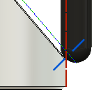 |
Disabled |
Enabled |
Can be used to restrict roll over on the top edge of a cut. The difference is illustrated below on a Parallel toolpath.
 |
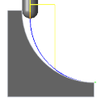 |
Disabled |
Enabled |
Slope
Contains toolpaths based on a range of specified angles.
 |
 |
 |
0 deg - 90 deg |
0 deg - 45 deg |
45 deg - 90 deg |
Slope angle confinement is specified by the From Slope and To Slope Angle parameters on the Geometry tab. Angles are defined from 0 deg (horizontal) to 90 deg (vertical).
Only areas equal to or greater than the values in the From Slope and To Slope areas are machined.
Most 3D finishing strategies supports slope angle confinement. One use of slope confinement is to confine a selected toolpath strategy to angles where it works best. For example, Parallel Finish is better suited to shallow areas while Contour Finish is better suited to steep areas.
From Slope Angle
From Slope angle is defined from the 0 deg (horizontal) plane. Only areas equal to or greater than this value are machined.
 |
Slope Angle From 0 deg |
To Slope Angle
To Slope angle is defined from the 0 deg (horizontal) plane. Only areas equal to or less than this value are machined.
 |
Slope Angle To 90 deg |
Contact Only
Controls whether or not toolpaths are generated where the tool is not in contact with the machining surface. When disabled, toolpaths are extended to the limits of the containment boundary and across openings in the workpiece.
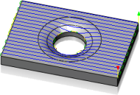 |
 |
Enabled |
Disabled |
Safe Distance
Minimum distance between the tool and the part surfaces during retract moves.
The distance is measured after stock to leave has been applied, so if a negative stock to leave is used, special care should be taken to ensure that safe distance is large enough to prevent any collisions.
Retraction Policy
Controls how the tool moves between cutting passes.
 |
 |
 |
Full Retraction |
Minimum Retraction |
Shortest Path |
Illustrated with Flow
Full retraction - Completely retracts the tool to the Retract Height at the end of the pass before moving above the start of the next pass.
Minimum retraction - Moves straight up to the lowest height where the tool clears the workpiece, plus any specified safe distance.
Shortest path - Moves the tool the shortest possible distance in a straight line between paths.
WARNING: Shortest path should not be used on machines that do not support linearized rapid movements where G0 moves are straight-line (versus G0 moves that drive all axes at maximum speed, sometimes referred to as "dogleg" moves). Failure to obey this rule will result in machine motion that cannot be properly simulated by the software, and may result in tool crashes.
For CNC machines that do not support linearized rapid moves, the post processor can be modified to convert all G0 moves to high-feed G1 moves. Contact technical support for more information or instructions on how to modify post processors as described.
Retraction Policy
Controls whether the tool should retract to the clearance diameter after every cutting pass, or just retract a short distance away from the job. The distance is determined by the Safe Distance value.
 |
 |
Full Retraction |
Minimum Retraction |
Set Minimum Profile Diameter
This allows a minimum profile diameter to be set. If a machining area is smaller than the specified minimum profile diameter, then it is not machined.
Minimum Profile Diameter
Specifies the minimum cavity to be cut.
Direction
Specifies the way the machining is done.
- Climb milling
- Conventional milling
Allow Rapid Retract
When enabled, retracts are done as rapid movements (G0). Disable to force retracts at lead-out feedrate.
Keep Tool Down
When enabled, the strategy avoids retracting when the distance to the next area is below the specified stay-down distance.
Keep Tool Down
These options can be used to avoid retracts and to avoid previously cut areas.
 |
The Head avoids previously cut areas |
NOTE: - When a profile is cut, it's possible for the remaining slug to tilt up. If you force the head to stay down, it's possible for this slug to damage the head of the machine. With the parameters below, you can keep the head down, but set a condition where the rapid motion will avoid any place a contour has already been cut.
Maximum Stay-Down Distance
Many toolpaths will make a cut and reposition for the next cut. If the distance between positions is greater than the Maximum Stay Down value, the tool will retract between cuts. To keep the tool down between cuts, set this value greater than the longest reposition distance.
In the part shown the widest point is 1.8".
 |
 |
1" Maximum stay-down |
2" Maximum stay-down |
Illustrated with 2D Adaptive Clearing
NOTE: Regardless of the stay-down distance, the tool retracts between passes if the rapid motion violates the workpiece.
Maximum Stay-Down Distance
The distance where retracts are no longer required.
|
The distance between cuts is Less than 4." |
 |
The distance between cuts is Greater than 4." |
A smaller distance will cause the head to retract to the Clearance plane. A larger value allows you to stay down at the Top Height.
NOTE: - In the first example, you can see how the rapid movement avoids any prevously cut profiles. Smaller parts can tilt, which might cause a collision with the head. Moving around previously cut profiles eleminates the possiblity of a crash.
Minimum Stay-Down Clearance
Cut part edge clearance for rapid moves.
Rapid edge clearance distance of .040" |
Rapid edge clearance distance of .200" |
When the Head stays down at the Top Height, this clearance avoids profiles that have been cut. It's an XY clearance to the closest edge, when making a rapid move between cuts.
Both Ways
When enabled, passes are done in both directions. Disable to force climb-only machining.
Lead-In (Entry)
Enable to generate a lead-in.
 |
Lead-In |
Lead-In (Entry)
Enables a contour blend.
 |
Lead-In |
The Lead In/Out move allows you to blend onto the part profile.
Without this type of blend you could leave a mark at the starting point.
Lead-In (Entry)
Controls how the tool enters the cutting path. The radius, distance, and angle can be specified.
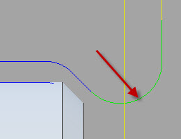 |
Lead-In |
Horizontal Lead-In Radius
Specifies the radius for horizontal lead-in moves.
 |
Horizontal Lead-In Radius |
Horizontal Lead-In/Out Radius
Creates an arc in the XY cutting plane for blending onto the part. The radius for horizontal lead moves.
|
Horizontal Lead Radius |
Lead-In Radius
Specifies the radius for Lead-in moves.
 |
Lead-In Radius |
The radius blend allows for a smooth transition into the cut.
Lead-In Radius
Specifies the radius of the lead-in move at the start of a cutting pass.
 |
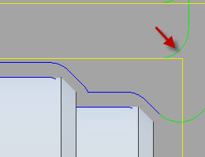 |
Lead-In Radius @ 0mm |
Lead-In Radius @ 3mm |
Lead-In Sweep Angle
Specifies the sweep of the lead-in arc.
 |
 |
Sweep Angle @ 90 degrees |
Sweep Angle @ 45 degrees |
Lead-In Sweep Angle
Specifies the sweep angle of the lead-in arc.
|
 |
Sweep Angle @ 90 degrees |
Sweep Angle @ 45 degrees |
Linear Lead-In Length
Specifies the length of the linear lead-in move for which to activate radius compensation in the controller.
 |
Linear Lead-In Length |
Linear Lead-In Length
Specifies the length of the linear lead-in move.
 |
Linear Lead-In Length |
Required if using machine cutter compensation.
Leads & Transitions
Controls how the tool should blend on to and off of the cut.
 |
Linear and radial Lead-In |
Linear Lead-In Length
Specifies the distance (length) of the lead-in move at the start of a cutting pass.
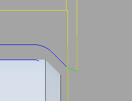 |
|
Linear Lead-In Length set to 0mm |
Linear Lead-In Length set to 2mm |
Perpendicular
Replaces tangential extensions of lead-in/lead-out arcs with a move perpendicular to the arc.
 |
Shown with Perpendicular Entry/Exit |
Example A bore that has lead arcs that are as large as possible (the larger the arc the less chance of dwell mark), and where a tangent linear lead is not possible because it would extend into the side of the bore.
Vertical Lead-In Radius
The radius of the vertical arc smoothing the entry move as it goes from the entry move to the toolpath itself.
 |
Vertical Lead-In Radius |
Vertical Lead-In/Out Radius
Creates an arc in the vertical plane for blending down onto the part. The radius for vertical lead moves.
|
Vertical Lead-In/Out Radius |
Lead-Out (Exit)
Enable to generate a lead-out.
 |
Lead-Out |
Lead-Out (Exit)
Enables a contour blend.
|
Lead-Out |
The Lead In/Out move allows you to blend off of the part profile.
Without this type of blend you could leave a mark at the starting point.
Lead-Out (Exit)
Controls how the tool exits the cutting path. The radius, distance, and angle can be specified.
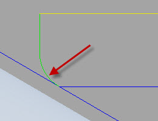 |
Lead-Out |
Same As Lead-In
When enabled, the lead-out values will be identical to the lead-in values.
|
 |
Lead-Out identical to Lead-In |
Lead-Out different than Lead-In |
NOTE: - Uncheck to change the Lead-Out values
Same As Lead-In
When enabled, the lead-out values will be identical to the lead-in values.
Horizontal Lead-Out Radius
Specifies the radius for horizontal lead-out moves.
 |
Horizontal Lead-Out Radius |
Lead-Out Radius
Specifies the radius for Lead-Out moves.
 |
Lead-Out Radius |
The radius blend allows for a smooth transition off of the cut.
Lead-Out Radius
Specifies the radius of the lead-out move at the end of a cutting pass.
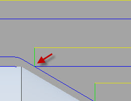 |
 |
Lead-Out Radius @ 0mm |
Lead-Out Radius @ 3mm |
Lead-Out Sweep Angle
Specifies the sweep of the lead-out arc.
|
|
Sweep Angle @ 90 degrees |
Sweep Angle @ 45 degrees |
Lead-Out Sweep Angle
Specifies the sweep angle of the Lead-Out arc.
|
|
Sweep Angle @ 90 degrees |
Sweep Angle @ 45 degrees |
Linear Lead-Out Distance
Specifies the length of the linear Lead-Out move for which to deactivate radius compensation in the controller.
 |
Linear Lead-Out Distance |
Linear Lead-Out Length
Specifies the length of the linear Lead-Out move.
 |
Linear Lead-Out Length |
Required if using machine cutter compensation.
Linear Lead-Out Distance
Specifies the distance (length) of the lead-out move at the end of a cutting pass.
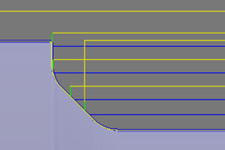 |
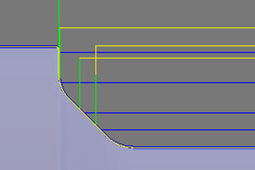 |
Linear Lead-Out Distance set to 1 mm |
Linear Lead-Out Distance set to 5 mm |
Z X Clearance
Controls the Z X clearance distance in reference to the cut profile.
X Distance of .030 in |
Z Distance of .030 in |
X Distance of .090 in |
Z Distance of .090 in |
Z Clearance
The Z clearance distance in reference to the start of the cut.
Z Distance of .030 in |
Z Distance of .090 in |
X Clearance
The X clearance distance in reference to the farthest cut on the profile.
X Distance of .030 in |
X Distance of .090 in |
Retract Distance
Controls the lead out move after each roughing cut. Shown below in green.
 |
 |
2mm Retract Distance |
6mm Retract Distance |
Perpendicular
Replaces tangential extensions of lead-in/lead-out arcs with a move perpendicular to the arc.
|
Shown with Perpendicular entry/exit |
Example A bore that has lead arcs that are as large as possible (the larger the arc the less chance of dwell mark), and where a tangent linear lead is not possible because it would extend into the side of the bore.
Vertical Lead-Out Radius
Specifies the radius of the vertical lead-out.
 |
Vertical Lead-Out Radius |
Transition Type
Specifies the type of connection done between passes.
- No contact - Sidesteps are not connected with each other on the same Z-level, but connected with a retract move.
- Straight line - Simpler, direct connections using straight lines.
- Shortest path - The shortest possible path between machining areas - typically a move in a straight line.
- Smooth - Use smooth tangential movements using true arcs where appropriate.
Ramp
Enable ramps.
 |
Shown with a 15 degree Ramp angle |
Ramp Type
Specfies how the cutter moves down for each depth cut.
 |
Plunge Outside Stock |
 |
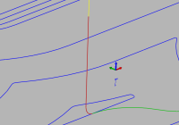 |
Predrill |
Plunge |
To use the Predrill option, Predrill location(s) must be defined.
 |
 |
Zig-Zag |
Profile |
Notice the smooth transitions on the Zig-Zag ramp type.
 |
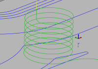 |
Smooth Profile |
Helix |
Use Ramping Angle
Uses the slope angle of a helix instead of Pitch, to control the feed depth.
Pitch uses a distance per revolution depth control.
Angle controls how the tool slopes into the part.
 |
 |
Shown with Pitch distance |
Shown with 2 Deg. Ramp |
Angle
Controls the angle of the helix that leads into the cavity.
|
Shown with 2 Deg. Ramp |
Ramping Angle (deg)
Controls the angle of the helix that leads into the cavity.
|
Shown with 2 Deg. Ramp |
Ramp Taper Angle (deg)
Creates a cone shape entry cavity, to reduce tool load. Specified as an included angle.
Controls the starting and ending diameter of the helix that leads into the cavity.
 |
Shown with 12 Deg. Taper |
Maximum Ramp Stepdown
Specifies the maximum stepdown per revolution on the ramping profile. This parameter allows the tool load to be constrained when doing full-width cuts during ramping.
Ramp Clearance Height
Clearance above the Top Height, where the Helix Ramp will start.
Clearance to start the Helix |
Helical Ramp Diameter
The maximum diameter to use for a helical entry into the cavity.
An optimal value causes the tool to overlap its center, while still creating the maximum helical bore for the entry into the cavity. The goal is for good chip evacuation. If the value is bigger than the diameter of the tool it can leave a boss standing in the center of the helix.
 |
 |
Value of 1.8 x the Dia. |
Value of 0.8 x the Dia. |
The system will determine the best location for the entry helix, unless and Entry Position is selected. (Entry Positions shown below). The complete area will always be cleared, regardless of the diameter. Note: The area width should be Tool Dia + Ramp Dia + Stock, or the helical entry will fail.
Minimum Ramp Diameter
The smallest Helix Ramp Diameter that is acceptable.
This value should always be smaller than the Helix Ramp Diameter, so the system can calculate a range that fits the available pocket or channel. Smaller diameters can reduce the chip evacuation, create jerking machine motion and can cause tool breakage.
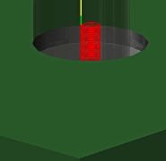 |
Helical Ramp 0.100in - Min. Ramp 0.060in |
Force Profile Ramp
Enable this to force a profile ramp on top of the selected contour(s).
Use this when cutting out holes, for example.
Positions
Specify the tool entry point(s).
Predrill Positions
Select points where holes have been drilled to provide clearance for the cutter to enter the material.
 |
Predrill Location |
|
Predrill Plunge Start |
Entry Positions
Select geometry near the location where you want the tool to enter.
Trim Passes
Enable this to allow the passes to be trimmed back to fit the leads, where otherwise not possible, to allow the CNC machining to maintain a high feed. If disabled, forces the entire pass to be machined. This can result in sharp moves and the minimum corner radius may not be respected.
Manual Ramp Diameter
If checked, the minimum ramp diameter can be set.
Contact Ramp Angle
The maximum angle of contact ramps.
Smooth Contact Ramp
Specifies that the contact ramp should be smooth.
Remove Spikes
Enable to remove spikes in the toolpath.
Maximum Spike Angle
Specifies the angle of the passes which triggers a spike.
Smoothing Filter
Smooths the toolpath by removing excessive points and fitting arcs where possible within the given filtering tolerance.
 |
 |
Smoothing Off |
Smoothing On |
Smoothing is used to reduce code size without sacrificing accuracy. Smoothing works by replacing collinear lines with one line and tangent arcs to replace multiple lines in curved areas.
The effects of smoothing can be dramatic. G-code file size may be reduced by as much as 50% or more. The machine will run faster and more smoothly and surface finish improves. The amount of code reduction depends on how well the toolpath lends itself to smoothing. Toolpaths that lay primarily in a major plane (XY, XZ, YZ), like parallel paths, filter well. Those that do not, such as 3D Scallop, are reduced less.
Smoothing Tolerance
Specifies the smoothing tolerance.
Smoothing works best when the tolerance (the accuracy with which the original linearized path is generated) is equal to or greater than the Smoothing (line arc fitting) tolerance.
NOTE: Total tolerance, or the distance the toolpath can stray from the ideal spline or surface shape, is the sum of the cut Tolerance and Smoothing Tolerance. For example, setting a cut Tolerance of .0004 in. and Smoothing Tolerance of .0004 in. means the toolpath can vary from the original spline or surface by as much as .0008 in. from the ideal path.
High Feedrate Mode
Specifies when rapid movements should be output as true rapids (G0) and when they should be output as high feedrate movements (G1).
- Preserve rapid movement - All rapid movements are preserved.
- Preserve axial and radial rapid movement - Rapid movements moving only horizontally (radial) or vertically (axial) are output as true rapids.
- Preserve axial rapid movement - Only rapid movements moving vertically.
- Preserve radial rapid movement - Only rapid movements moving horizontally.
- Preserve single axis rapid movement - Only rapid movements moving in one axis (X, Y or Z).
- Always use high feed - Outputs rapid movements as (high feed moves) G01 moves instead of rapid movements (G0).
This parameter is usually set to avoid collisions at rapids on machines which perform "dogleg" movements at rapid.
High Feedrate
The feedrate to use for rapids movements output as G1 instead of G0.
Rest Machining
Limits the operation to only remove material that a previous tool or operation could not remove.
Rest stands for REmaining STock.
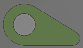 |
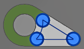 |
Area to machine. |
Previous Operation. |
With a smaller tool you can machine the entire pocket, or use Rest Machining to clear the remaining stock.
 |
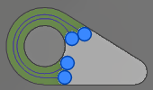 |
Use Rest Machining OFF. |
Use Rest Machining ON. |
Requires additional information about the tool previously used to cut the boundary.
Rest Machining
Specifies that only stock left after previous operations should be machined.
 |
 |
Disabled |
Enabled |
Rest Machining
Limits the operation to only remove material that a previous tool or operation could not remove.
Rest stands for REmaining STock.
Area to machine. |
Previous Operation. |
With a smaller tool you can machine the entire pocket, or use Rest Machining to clear the remaining stock.
|
|
Use Rest Machining OFF. |
Use Rest Machining ON. |
Requires additional information about the tool previously used to cut the boundary.
Rest Material Source
Specifies the source from which the rest machining is to be calculated.
- From previous operation(s)
- From operation(s)
- From tool
- From file
- From solid(s)
- From setup stock
Rest Material Operation
Rest material operation.
Union Of All Dependent Operations
Union of all dependent operations.
Include All Previous Operations
Include all previous operations.
Rest Material Resolution
Specifies the rest material resolution.
Rest Material Tool Diameter
Specify the diameter of the tool previously used to cut the boundary.
Any areas not cut by this tool will be machined.
Rest Material Tool Corner Radius
Specify the corner radius of the tool previously used to cut the boundary.
Any areas not cut by this tool will be machined.
Rest Material Stock To Leave
Specifies the rest material stock to leave.
Rest Material Adjustment
Selects the rest material adjustment for respectively ignoring or ensuring milling of small cusps.
- Use as computed
- Ignore cusps
- Machine cusps
Rest Material Adjustment Offset
This parameter specifies the amount of stock to be ignored, or additionally removed, depending on the Rest Material Adjustment setting.
The parameter is primarily used to avoid machining of minor rest material with the Ignore cusps setting.
Clearance Height
This parameter specifies the clearance plane.
Clearance Height
The Clearance height is the first height the tool rapids to on its way to the start of the tool path.
Clearance Height |
- Retract height: incremental offset from the Retract height.
- Feed height: incremental offset from the Feed height.
- Top height: incremental offset from the Top height.
- Bottom height: incremental offset from the Bottom height.
- Model top: incremental offset from the Model top.
- Model bottom: incremental offset from the Model bottom.
- Stock top: incremental offset from the Stock top.
- Stock bottom: incremental offset from the Stock bottom.
- Selected contour(s): incremental offset from a Contour selected on the model.
- Selection: incremental offset from a Point (vertex), Edge or Face selected on the model.
- Origin (absolute): absolute offset from the Origin that is defined in either the Setup or in Tool Orientation within the specific operation.
Clearance Height
The Clearance height is the first height the tool rapids to on its way to the start of the tool path.
Clearance Height |
- Retract height: incremental offset from the Retract height.
- Feed height: incremental offset from the Feed height.
- Top height: incremental offset from the Top height.
- Bottom height: incremental offset from the Bottom height.
- Model top: incremental offset from the Model top.
- Model bottom: incremental offset from the Model bottom.
- Stock top: incremental offset from the Stock top.
- Stock bottom: incremental offset from the Stock bottom.
- Selected contour(s): incremental offset from a Contour selected on the model.
- Selection: incremental offset from a Point (vertex), Edge or Face selected on the model.
- Origin (absolute): absolute offset from the Origin that is defined in either the Setup or in Tool Orientation within the specific operation.
Clearance Height
The Clearance height is the first height the head rapids to on its way to the start of the tool path.
Clearance Height |
- Retract height: incremental offset from the Retract height.
- Top height: incremental offset from the Top height.
- Model top: incremental offset from the Model top.
- Model bottom: incremental offset from the Model bottom.
- Stock top: incremental offset from the Stock top.
- Stock bottom: incremental offset from the Stock bottom.
- Selected contour(s): incremental offset from a Contour selected on the model.
- Selection: incremental offset from a Point (vertex), Edge or Face selected on the model.
- Origin (absolute): absolute offset from the Origin that is defined in either the Setup or in Tool Orientation within the specific operation.
Clearance height reference
Clearance Height Offset
The Clearance height offset is applied and is relative to the Clearance height selection in the above drop-down list.
Retract Height
This parameter specifies the retract plane.
Retract Height
Retract height sets the height that the tool moves up to before the next cutting pass. Retract height should be set above the Feed height and Top. Retract height is used together with the subsequent offset to establish the height.
 |
Retract Height |
- Clearance height: incremental offset from the Clearance height
- Feed height: incremental offset from the Feed height
- Top height: incremental offset from the Top height.
- Bottom height: incremental offset from the Bottom height.
- Model top: incremental offset from the Model top.
- Model bottom: incremental offset from the Model bottom.
- Stock top: incremental offset from the Stock top.
- Stock bottom: incremental offset from the Stock bottom.
- Selected contour(s): incremental offset from a Contour selected on the model.
- Selection: incremental offset from a Point (vertex), Edge or Face selected on the model.
- Origin (absolute): absolute offset from the Origin that is defined in either the Setup or in Tool Orientation within the specific operation.
Retract Height
Retract height sets the height that the tool moves up to before the next cutting pass. Retract height should be set above the Feed height and Top. Retract height is used together with the subsequent offset to establish the height.
 |
Retract Height |
- Clearance height: incremental offset from the Clearance height
- Top height: incremental offset from the Top height.
- Bottom height: incremental offset from the Bottom height.
- Model top: incremental offset from the Model top.
- Model bottom: incremental offset from the Model bottom.
- Stock top: incremental offset from the Stock top.
- Stock bottom: incremental offset from the Stock bottom.
- Selected contour(s): incremental offset from a Contour selected on the model.
- Selection: incremental offset from a Point (vertex), Edge or Face selected on the model.
- Origin (absolute): absolute offset from the Origin that is defined in either the Setup or in Tool Orientation within the specific operation.
Retract Height
Retract height sets the height that the head moves up to before the next cutting pass. Retract height should be set above the Top. Retract height is used together with the subsequent offset to establish the height.
 |
Retract Height |
- Clearance height: incremental offset from the Clearance height
- Top height: incremental offset from the Top height.
- Model top: incremental offset from the Model top.
- Model bottom: incremental offset from the Model bottom.
- Stock top: incremental offset from the Stock top.
- Stock bottom: incremental offset from the Stock bottom.
- Selected contour(s): incremental offset from a Contour selected on the model.
- Selection: incremental offset from a Point (vertex), Edge or Face selected on the model.
- Origin (absolute): absolute offset from the Origin that is defined in either the Setup or in Tool Orientation within the specific operation.
Retract height reference
Retract Height Offset
Retract height offset is applied and is relative to the Retract height selection in the above drop-down list.
Feed Height
This parameter specifies the feed plane.
Feed Height
Feed height sets the height that the tool rapids to before changing to the feed/plunge rate to enter the part. Feed height should be set above the Top. A drilling operation uses this height as the initial feed height and the retract peck height. Feed height is used together with the subsequent offset to establish the height.
 |
Feed Height |
- Clearance height: incremental offset from the Clearance height
- Retract height: incremental offset from the Retract height.
- Disabled: disabling the Feed height causes the tool to rapid down to the lead-in.
- Top height: incremental offset from the Top height.
- Bottom height: incremental offset from the Bottom height.
- Model top: incremental offset from the Model top.
- Model bottom: incremental offset from the Model bottom.
- Stock top: incremental offset from the Stock top.
- Stock bottom: incremental offset from the Stock bottom.
- Selected contour(s): incremental offset from a Contour selected on the model.
- Selection: incremental offset from a Point (vertex), Edge or Face selected on the model.
- Origin (absolute): absolute offset from the Origin that is defined in either the Setup or in Tool Orientation within the specific operation.
Feed Height Reference
Feed Height Offset
Feed height offset is applied and is relative to the Feed height selection in the above drop-down list.
Top Height
Specifies the top of the stock.
Top Height
Top height sets the height that describes the top of the cut. Top height should be set above the Bottom. Top height is used together with the subsequent offset to establish the height.
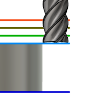 |
Top Height |
- Clearance height: incremental offset from the Clearance height
- Retract height: incremental offset from the Retract height.
- Feed height: incremental offset from the Feed height.
- Bottom height: incremental offset from the Bottom height.
- Model top: incremental offset from the Model top.
- Model bottom: incremental offset from the Model bottom.
- Stock top: incremental offset from the Stock top.
- Stock bottom: incremental offset from the Stock bottom.
- Selected contour(s): incremental offset from a Contour selected on the model.
- Selection: incremental offset from a Point (vertex), Edge or Face selected on the model.
- Origin (absolute): absolute offset from the Origin that is defined in either the Setup or in Tool Orientation within the specific operation.
Top Height
Top height sets the height that describes the top of the cut. Top height should be set above the Bottom. Top height is used together with the subsequent offset to establish the height.
 |
Top Height |
- Clearance height: incremental offset from the Clearance height
- Retract height: incremental offset from the Retract height.
- Feed height: incremental offset from the Feed height.
- Bottom height: incremental offset from the Bottom height.
- Model top: incremental offset from the Model top.
- Model bottom: incremental offset from the Model bottom.
- Stock top: incremental offset from the Stock top.
- Stock bottom: incremental offset from the Stock bottom.
- Selected contour(s): incremental offset from a Contour selected on the model.
- Selection: incremental offset from a Point (vertex), Edge or Face selected on the model.
- Origin (absolute): absolute offset from the Origin that is defined in either the Setup or in Tool Orientation within the specific operation.
Top Height
Top height sets the height that describes the top of the part. Top height is used together with the subsequent offset to establish the height.
 |
Top Height |
- Clearance height: incremental offset from the Clearance height
- Retract height: incremental offset from the Retract height.
- Model top: incremental offset from the Model top.
- Model bottom: incremental offset from the Model bottom.
- Stock top: incremental offset from the Stock top.
- Stock bottom: incremental offset from the Stock bottom.
- Selected contour(s): incremental offset from a Contour selected on the model.
- Selection: incremental offset from a Point (vertex), Edge or Face selected on the model.
- Origin (absolute): absolute offset from the Origin that is defined in either the Setup or in Tool Orientation within the specific operation.
Top Reference
Top Offset
Top offset is applied and is relative to the Top height selection in the above drop-down list.
Bottom
The maximum cutting depth.
Bottom Height
Bottom height determines the final machining height/depth and the lowest depth that the tool descends into the stock. Bottom height needs to be set below the Top. Bottom height is used together with the subsequent offset to establish the height.
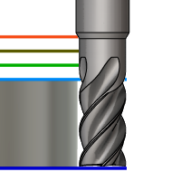 |
Bottom Height |
- Clearance height: incremental offset from the Clearance height
- Retract height: incremental offset from the Retract height.
- Feed height: incremental offset from the Feed height.
- Top height: incremental offset from the Top height.
- Model top: incremental offset from the Model top.
- Model bottom: incremental offset from the Model bottom.
- Stock top: incremental offset from the Stock top.
- Stock bottom: incremental offset from the Stock bottom.
- Selected contour(s): incremental offset from a Contour selected on the model.
- Selection: incremental offset from a Point (vertex), Edge or Face selected on the model.
- Origin (absolute): absolute offset from the Origin that is defined in either the Setup or in Tool Orientation within the specific operation.
- To chamfer width: allows the tool to drill just enough to make the chamfer width match the input parameter. The input parameter should not exceed the tool's chamfer width. The calculated height offset is dependent on the tool's parameters (diameter, tip diameter, and tip angle) and on the diameter of the hole. Acceptable selections include cylindrical faces, circles, or arcs.
- To chamfer diameter: the diameter of the new hole is equal to the input parameter. Therefore, the input parameter should not exceed the tool's diameter. The calculated height offset is dependent on the tool's parameters and independent of the hole selection. Acceptable selections include cylindrical faces, circles, or arcs.
Bottom Height
Bottom height determines the final machining height/depth and the lowest depth that the tool descends into the stock. Bottom height needs to be set below the Top. Bottom height is used together with the subsequent offset to establish the height.
 |
Bottom Height |
- Clearance height: incremental offset from the Clearance height
- Retract height: incremental offset from the Retract height.
- Feed height: incremental offset from the Feed height.
- Top height: incremental offset from the Top height.
- Model top: incremental offset from the Model top.
- Model bottom: incremental offset from the Model bottom.
- Stock top: incremental offset from the Stock top.
- Stock bottom: incremental offset from the Stock bottom.
- Selected contour(s): incremental offset from a Contour selected on the model.
- Selection: incremental offset from a Point (vertex), Edge or Face selected on the model.
- Origin (absolute): absolute offset from the Origin that is defined in either the Setup or in Tool Orientation within the specific operation.
Bottom Reference
Bottom Offset
Bottom offset is applied and is relative to the Bottom height selection in the above drop-down list.
Probe Geometry Selections
Based on the Probe Mode, you can select the Model or the Stock.
Select a single face, perpendicular faces or parallel / opposite faces.
Probe Type options will change based on your selections.
 |
 |
Model Corner |
Stock Corner |
 |
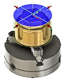 |
Model Boss |
Stock Boss |
Probe Mode
You can select faces from the part Model or the Stock.
Face selection options will change based on your choice.
|
 |
Model Corner |
Stock Center |
|
|
Model Boss |
Stock Boss |
Probe Stock Surface(s)
In the canvas, select one of more faces on the stock. The selected faces determine the available Probe Type options.
Note: To select faces on the model, change the Probe Mode to Model.
Examples of selected faces and Probe Type options:
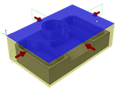 |
 |
XY Rectangular Boss |
XY Outer Corner |
 |
 |
Y Surface |
Angle Along Y Axis |
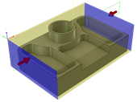 |
 |
X Wall |
XY Circular Boss |
Probe Surface(s)
In the canvas, select one of more faces on the model. The selected faces determine the available Probe Type options.
Note: To select faces on the stock, change the Probe Mode to Stock.
Examples of selected faces and Probe Type options:
 |
 |
Z Surface |
XY Circular Hole |
 |
 |
X Wall |
Y Channel |
 |
 |
XY Outer Corner |
Y Surface |
Probe Type
Select a probing cycle option. The faces selected determine the available options.
Examples of selected faces and Probe Type options:
|
|
Z Surface |
XY Rectangular Boss |
|
|
XY Outer Corner |
Y Surface |
|
|
XY Circular Hole |
XY Circular Boss |
Use Selection Point
When enabled, forces probing at the actual point picked on the selected surface.
Arrow shows probing location |
Spacing
Sets the probe spacing between points on the selected surface.
Spacing of 1.5 in. |
Spacing of 3.0 in. |
Bottom Height
The Bottom height position determines the reference for the final probing depth. This reference and the Offset value establish the true probing depth. This position is to the contact point of the probe.
 |
Probe Bottom Height Reference |
- Clearance height: incremental offset from the Clearance height
- Retract height: incremental offset from the Retract height.
- Model top: incremental offset from the Model top.
- Model bottom: incremental offset from the Model bottom.
- Stock top: incremental offset from the Stock top.
- Stock bottom: incremental offset from the Stock bottom.
- Selection: incremental offset from a Point (vertex), Edge or Face selected on the model.
- Probing surface top: incremental offset from the top of the lowest selected surface.
- Origin (absolute): absolute offset from the Origin that is defined in either the Setup or in Tool Orientation within the specific operation.
Bottom Offset
Bottom height offset is an adjustment to the relative position specified in the above drop-down list. This position represents the tip, not the contact point (side) of the probe.
Height
The height position is the first height the probe rapids to on its way to the start of the probing and the point it returns to after the process is finished.
Probe Clearance Height Reference |
- Retract height: incremental offset from the Retract height.
- Bottom height: incremental offset from the Bottom height.
- Model top: incremental offset from the Model top.
- Model bottom: incremental offset from the Model bottom.
- Stock top: incremental offset from the Stock top.
- Stock bottom: incremental offset from the Stock bottom.
- Selection: incremental offset from a Point (vertex), Edge or Face selected on the model.
- Probing surface top: incremental offset from the top of the lowest selected surface.
- Origin (absolute): absolute offset from the Origin that is defined in either the Setup or in Tool Orientation within the specific operation.
Clearance Height Offset
The Clearance height offset is an adjustment to the relative position specified in the above drop-down list.
Retract Height
Retract height position sets an intermediate height between the Clearance and the Bottom height positions.
 |
Probe Retract Height Reference |
- Clearance height: incremental offset from the Clearance height
- Bottom height: incremental offset from the Bottom height.
- Model top: incremental offset from the Model top.
- Model bottom: incremental offset from the Model bottom.
- Stock top: incremental offset from the Stock top.
- Stock bottom: incremental offset from the Stock bottom.
- Selection: incremental offset from a Point (vertex), Edge or Face selected on the model.
- Probing surface top: incremental offset from the top of the lowest selected surface.
- Origin (absolute): absolute offset from the Origin that is defined in either the Setup or in Tool Orientation within the specific operation.
Method
Specifies which axes are free to be transformed in the Part Alignment. Choose a method that is supported by your machine tool and post processor.
- 3 Axis: Enables translation along one, two, or three linear axes.
- 4 Axis: Enables translation along all linear axes and rotation about one rotary axis.
- 5 Axis: Enables translation along and rotation about all axes.
 |
 |
 |
3 axis example |
4 axis example |
5 axis example |
Allow Translation Along X Axis
Enables translation along the X axis. Deselect if your machine tool or post processor is limited or you want to restrict the translation.
Allow Translation Along Y Axis
Enables translation along the Y axis. Deselect if your machine tool or post processor is limited or you want to restrict the translation.
Allow Translation Along Z Axis
Enables translation along the Z axis. Deselect if your machine tool or post processor is limited or you want to restrict the translation.
Axis of Rotation
Specifies the axis that can be rotated.
Optionally Select Existing Results
If you have already imported inspection results that you want to use for calculating the part alignment, expand this group to select the results.
Otherwise, the part alignment is calculated when you click Get Results > Import Inspection Results and choose a machine-generated results file.
Results for Calculation
The inspection results used to calculate the part alignment.
If you have already imported inspection results and want to use them to calculate the part alignment, manually select the inspection results in the Browser.
 |
Otherwise, the part alignment is calculated when you click Get Results > Import Inspection Results and choose a machine-generated results file.
Retract Height Offset
Retract height offset is an adjustment to the relative position specified in the above drop-down list.
Measure Selection
The geometry you intend to measure with a manual device, such as a caliper or micrometer.
Select a hole or boss, or two walls. The nominal value for the diameter or distance is displayed.
 |
 |
Diameter of hole example |
Distance between two walls example |
When you create the Manual Inspection entry in the Browser, you can select it and click Probing > Inspect > Record Manual Inspection to record the measured value.
Upper Tolerance
The upper limit of the tolerance band for the measurement.
The tolerance band is the acceptable amount of deviation relative to the nominal value. If the recorded measurement is above or below the tolerance band, the measurement is considered out of tolerance.
For example, an upper tolerance of 0.1 mm and a lower tolerance of -0.1 mm for a 15 mm hole means that the diameter must be between 14.9 and 15.1 mm.
Lower Tolerance
The lower limit of the tolerance band for the measurement.
The tolerance band is the acceptable amount of deviation relative to the nominal value. If the recorded measurement is above or below the tolerance band, the measurement is considered out of tolerance.
For example, an upper tolerance of 0.1 mm and a lower tolerance of -0.1 mm for a 15 mm hole means that the diameter must be between 14.9 and 15.1 mm.
Inspection Type
The type of inspection to carry out on the physical part.
- Distance: Select to measure the diameters of holes and bosses or the distances between two parallel surfaces. If Distance is selected, you must click a feature in the canvas.
- Pass/Fail: Select to check against defined criteria.
- Text: Select to check against a custom test.
When recording the manual inspection, the options available in the Record Manual Inspection dialog differ depending on the type of inspection selected. If you selected:
- Distance, you enter a Measured value.
- Pass/Fail, you select the Pass or Fail options.
- Text, you enter the result of the custom test in a Result box.
Tool
Opens the Tool Library dialog box where you can select an existing tool, or create a new one to use.
Tool
Opens the Tool Library, where you can select a nozzle for your work type.
Select the appropriate Tool/Nozzle for your cutting process.
 |
Appropriate Tool/Nozzle Types |
You can also select the |
NOTE: The type of Tool/Nozzle you select will effect some of the toolpath options.
Product Link
Web site product link containing information on the tool.
Lead-In Feedrate
Feed used when leading in to a cutting move.
|
Lead-Out Feedrate
Feed used when leading out from a cutting move.
|
Ramp Feedrate
Feed used when simultaneously moving the spindle down, while moving in the XY plane. For Ramp and Helical cuts.
|
Ramp move shown in green |
Plunge Feedrate
Feed used when plunging vertically into stock.
|
Vertical plunge shown in red |
Feed per revolution
The distance the tool advances into the cut, for each revolution of the spindle.
Description
A textual description of the tool holder.
Note: These descriptions can only be changed by editing the holder.
Vendor
The vendor or supplier of the tool holder.
Note: These descriptions can only be changed by editing the holder.
Product ID
The vendor's identifier or part number for the tool holder.
Note: These descriptions can only be changed by editing the holder.
Product Link
Web site product link, containing information on the holder.
Note: These descriptions can only be changed by editing the holder.
Reverse Z-Axis
Finishing Step
Specifies that a finishing step should be taken
 |
Finishing Step |
From Other Side
Specifies that the toolpath starts on the other side of the part.
 |
 |
Unselected |
Selected |
Lift Height
Specifies the lift distance during repositioning moves.
 |
 |
Lift Height 0 |
Lift Height .1 in |
No-Engagement Feedrate
Specifies the feedrate used for movements where the tool is not in engagement on the material, but is also not retracted.
No-Engagement Feedrate
Specifies the feedrate used for movements where the tool is not in engagement on the material, but is also not retracted.
When the move between cuts is greater than the Maximun Stay-Down Distance, the tool will not retract to the Clearance Height and then feeds between the cut profiles. This parameter controls for the Feedrate for that motion.
 |
Red Arrow Represents The Feed Motion. |
Use Slot Clearing
Enable this setting to start pocket clearing with a slot along its middle, before continuing with a spiral motion towards the pocket wall.
This feature can be used to reduce linking motion at corners for some pockets.
Enabled |
Disabled |
Slot Clearing Width
The width of the initial clearing slot along the middle of the pocket before continuing with a spiral motion towards the pocket wall.
Slot Clearing Width |
Compensation Radius Allowance
This parameter specifies a range of tool diameters that can be safely used, instead of only the tool selected for the operation.
The allowed range of tool radii start from the selected tool radius and goes up to the selected tool radius, plus the given allowance.
Make Sharp Corners
Forces a sharp toolpath intersection on all external corners.
When unchecked the toolpath will roll around all external sharp corners. This creates a toolpath that flows to avoid sudden changes in direction.
 |
Unchecked - Rolled Corner |
 |
Checked - SharpCorner |
Note: Only the toolpath is effected by this parameter. The part will always have a sharp intersection. Using a tool with a smaller nose radius can gouge the part.
Chamfer
Specifies that the contouring operation will be used to create a chamfer.
Geometry Selection Tips:
 |
 |
Sharp Corners |
Chamfered Edges |
Sharp Corners - Select the sharp corner and define the size of the chamfer using the Chamfer Width Setting.
Chamfered Edges - Select the bottom edge of the chamfer. The chamfer width is calculated automatically.
Important: All edges selected must be either the bottom edge of a chamfered face or unchamfered edges. If both edge types are selected, then the edges that already have the chamfers modeled end up with chamfers that are twice the size they should be.
Chamfer Width
Chamfer Depth
Order By Islands
Specifies the order in which depth cuts are taken when there are multiple profiles.
 |
 |
Disabled |
Enabled |
Disabled - Depth cuts are ordered by depth.
Enabled - Depth cuts are ordered by profile.
NOTE: Ordering cuts by island minimizes the number of rapid moves.
Up/Down Shallow Angle
Allow Stepover Cusps
When programming flat faces with a tool that has a radius in the corner, a cusp (or scallop) can be produced between stepovers.
By default, the Maximum Stepover value is overridden to insure that no stepover cusps are produced.
Allow Stepover Cusps Disabled |
Allow Stepover Cusps Enabled |
Above - Pocket machined with a 3/8" bullnose end mill @ .25" Maximum Stepover.
Ramp Radial Clearance
Specifies the minimum distance to the contour for the lead-in helix.
Axial Offset
Can be used to shift the selected curve up or down in the spindle axis.
Merge Hole Segments
Incremental Depth
Pecking Depth Reduction
The amount by which the pecking depth is reduced per peck.
Minimum Pecking Depth
The minimum allowed pecking depth.
Pitch
Chip Break Distance
With a chip breaking operation, the drill withdraws a specified distance after advancing into the hole to prevent the binding of chips.
Back Boring Distance
Diameter
Stepover
Shaft & Holder
Enable to specify how the shaft and/or holder of the tool is used to avoid collisions with the workpiece.
 |
 |
Disabled |
Enabled |
Shaft And Holder Mode
Specifies how the toolpath should handle a collision between the shaft and/or holder and the workpiece.
|
 |
Disabled |
Trimmed |
|
 |
Pull away |
Detect tool length |
Trimmed - Sections of the toolpath that result in safe distances between the shaft and/or holder being violated are trimmed away.
Pull away - The toolpath pulls away from the workpiece to maintain a safe distance between the shaft and/or holder.
Detect tool length - The tool is automatically extended further out of the holder to maintain the specified safe distance between the shaft and/or holder and the workpiece. A message indicating how far the tool is extended out of the holder is logged.
Fail on collision - The toolpath calculation is aborted and an error message logged when the safe distance is violated.
Use Shaft
Specifies that the shaft of the selected tool will be used in the toolpath calculation to avoid collisions.
Shaft Clearance
The tool shaft always stays this distance from the part.
Use Holder
Specifies that the holder of the selected tool will be used in the toolpath calculation to avoid collisions.
Holder Clearance
The tool holder always stays this distance from the part.
Silhouette Aperture
Rest Material File
From Setup Stock
Rest Material Tool Taper Angle
Specify the taper angle of the tool previously used to cut the boundary.
Any areas not cut by this tool will be machined.
Rest Material Tool Shoulder Length
Specify the shoulder length of the tool previously used to cut the boundary.
Any areas not cut by this tool will be machined.
Fillet Radius
Specify a fillet radius.
Minimum Diameter
The smallest cylindrical diameter that can be machined.
This limits depth cuts based on cavity size. When set to zero the tool machines to the limits of where it can safely fit.
 |
|
Set to Zero |
Set to .320 in |
Tip The value becomes effective when set to anything larger than the difference between the cavity dia, minus the tool diameter.
Minimum Fragment Length
Fragment Extension Distance
Smooth Ramps
When enabled, ramps are started and ended tangentially in all three axes.
Ramping is done without discontinuities in the first order derivative so that smooth curves are used instead of the usual kinks in the path.
Cusp Height
Cusp Height is the theoretical surface finish produced by successive toolpaths left by the radius of the cutter. A smaller tool diameter or a larger stepover produces a larger cusp height.
 |
Cusp Height |
Order Bottom-Up
Contour passes are usually ordered from top to bottom. Enable this check box to specify that passes should be ordered bottom-up (bottom to top).
Ordering is done so that the passes with the smallest Z-level tool orientation are done first in one operation for multiple contours. This method is very useful for machining fragile materials like graphite.
Machine Steep Areas
Specifies extra passes will be added where the surface is steep perpendicular to the machining direction. This is important for plastic injection molds where the cutting direction needs to be consistent to avoid marks on the parts.
 |
 |
Disabled |
Enabled |
Minimum Steep Stepover
Defines the minimum stepover that is used when Machine Steep Areas is enabled, regardless of the stepdown amount.
Maximum Steep Stepdown
Defines the maximum steep stepdown value.
Add Perpendicular Passes
This setting adds a set of passes perpendicular to the specified machining direction to reduce machining cusps.
|
 |
Disabled |
Enabled |
Machine Straight On
Avoids machining along the steep areas by automatically choosing the best direction for the parallel passes.
Machine Areas Using Boundaries
When enabled, passes are generated from the confinement boundaries defined by all confinement features (machining boundaries, slope, heights, etc.). When disabled, passes are generated from the machining boundaries resulting in passes normally not following the surface.
Boundary Overlap
When using slope confinement and/or rest machining for a Scallop operation, you can enable the Machine Areas Using Boundaries check box to start offsetting the toolpath from the boundaries created by the slope and/or rest material detection.
You can specify a boundary overlap so that the boundary of the detected slope range or rest area is extended by the specified overlap amount.
Area Smoothing
Spiral Mode
 |
 |
 |
Spiral |
Spiral with circles |
Concentric circles |
Spiral creates a path that spirals out from the center point until it reaches the containment boundary or max radius.
Spiral with circles adds a circular toolpath at the minimum radius and at the maximum radius. The circular toolpath is only added if the minimum radius is larger than 0 and the maximum radius is smaller than the radius of the containment boundary.
Concentric circles produces concentric circle paths that are linked. The resulting paths form a circular pattern rather than a spiral pattern.
Morphed spiral spirals from a shape that is not round.
Number Of Offset Stepovers
Contour Offset
This value is used to offset the center of the tool from the generated toolpath by a specified distance.
Morph Mode
Simple - Linear interpolation between points.
Closest - End-point-to-end-point.
Automatic - Automatic morph between points.
Tilt Mode
Forward Tilt
Specifies the number of degrees the tool should be tilted forward.
Sideways Tilt
Specifies the number of degrees the tool should be tilted sideways.
Maximum Tilt
Specifies the maximum allowed tilt from the selected operation tool axis.
Maximum segment length
Specifies the maximum length of a single segment, for the generated toolpath.
 |
Stepover distance .150 in |
Stepover distance .050 in |
Note - A larger distance can reduce the file size, but make the cut coarse. The calculated toolpath will always be within the specified Tolerance.
Maximum Tool Axis Sweep
Specifies the maximum angular change in a single tool axis sweep, for the generated toolpath.
Angular sweep of 10 degrees |
Angular sweep of 5 degrees |
Note - A larger distance can reduce the file size, but make the cut coarse. The calculated toolpath will always be within the specified Tolerance.
Allow Relinking
Rest Material Overlap
This value specifies how much rest material you can ignore. Use this parameter to avoid undesired passes where there is little rest material.
Stock Offset
Specifies the distance to offset the stock contour outwards.
Stock Offset |
Stock Offset
Specifies the distance the machining boundary extends beyond the stock boundary in both X & Y.
 |
Stock Offset |
Lead End Distance
Specifies the distance the leadout feed rate begins before the end of the selected geometry.
 |
 |
@ 0 in |
@ .5 in |
NOTE: This option is used when you desire to change the feedrate prior to breaking through at the end of the cut.
Preserve Order
When Selected, the chains/features are machined in the order they were selected.
When unselected, the program optimizes the cut order.
Preserve Order
When Selected, the chains/features are machined in the order they were selected.
When unselected, the program optimizes the cut order.
As a default Waterjet toolpaths will always be optimized to machine inside bountaries first (slugs), then machine outside boundaries. This keeps the parts from breaking free and moving during a second or third cut on the same part.
NOTE: - See the Linking - Keep Nozzle Down parameters for more control over the movement between inside cut slugs and outside cut parts.
Maximum Angle (deg)
Specifies the maximum plunge angle for the passes.
Tool Orientation Mode
Include Drilled Holes
Include Bored Holes
Include Through Holes
Include Split Holes
Fillets
Enable to enter a fillet radius.
Minimize Tool Axis Changes
Minimize Tool Changes
Minimize Distance
Use Stepover
Enable to enter a Maximum Stepover value.
Drive Mode
Determines if the toolpath will be driven by the Faces of the model or user selected Contours.
 |
 |
With Faces selected, the actual |
With Contours selected, the selected |
Selection Mode
Allows you to select the machining area by continous Faces, single Faces or Contour Pairs of chains.
|
 |
Drive Mode = Surfaces |
Drive Mode = Surfaces |
|
 |
Drive Mode = Contours |
Drive Mode = Contours |
Machine Other Side
Forces the toolpath to the opposite side of the machining contour.
Most likely will be needed with Flip Top-Bottom parameter change.
Flip Top-Bottom
Changes the direction the tool points by switching the Lower Contour
and the Upper Contour. Only applies when Contours are selected.
 |
 |
Flips the Tool Vector 180 Degrees thru the Spindle Axis.
Synchronization Mode
Cutting Mode
The cutting mode specifies how to machine down the sides.
 |
Single Pass |
 |
|
From Bottom |
Trim from Bottom |
 |
|
From Top |
Trim from Top |
Spiral |
Morph |
Curve Selection
Select the guide curves to be machined.
|
Select one or more curves for machining. |
Curve Selection
Select the guide curves to be machined.
 |
Select two or more curves for machining. |
Cutting Mode
The cutting mode specifies how to machine along a given contact curve.
Cutting Mode
Use this for machines that have internal Quality tables to
set the appropriate cutting feeds for the material being cut.
* Through - Auto
* Through - high quality
* Through - medium quality
* Through - low quality
* Etch
* Vaporize
NOTE: Etch scores the material surface without cutting thru.
Vaporize is used for burning the plastic film off of some materials.
Some of these options are not available for all machine types.
Example: You cannot Etch with a Plasma cutter.
Cutting Mode
The cutting mode specifies how to machine along the ISO parametric directions of selected surfaces.
Trim impossible - Remove impossible tool path moves.
Fail when impossible - Fail when impossible tool path moves are generated.
Turn when impossible - Do a "turn" away from impossible tool path segments.
Manual Stepdowns
Top of Stock
Specifies the overall thickness of the stock.
 |
Stock Height |
Tool Offset
Specifies an extra offset along the tool axis relative to the bottom guide curve.
 |
 |
0.00 Tool Offset Extension |
0.20 Tool Offset Extension |
Minimize Axial Motion
Along Stock
Pass Overlap
Specifies the distance to extend machining for a closed pass.
Maximum Fan Distance
Specifies the maximum distance over which to fan the tool axis.
Tangential Fragment Extension Distance
Extends the cut tangentially at both ends of the pass.
 |
Tangent Extension at both ends of the cut |
Tool Clearance Back
Specifies an angle that is added to the tool angle to provide clearance behind the cutting edge.
Shown with 20 deg Back Clearance and 30 deg Front Clearance |
Sets the amount of relief between the part and the back edge of the cutting tool. Allows for a more gradual entry into the part and exerts less pressure on the tool.
Tool Clearance Front
Specifies an angle that is added to the tool angle to provide clearance in front of the cutting edge.
Shown with 30 deg Front Clearance and 20 deg Back Clearance |
Sets the amount of relief between the part and the front edge of the cutting tool. Allows for a less dragging of the insert against the tools leading edge.
Machine Inside (Boring)
Specifies that the operation should machine the ID of the workpiece.
 |
 |
Disabled |
Enabled |
Illustrated with Turning Profile
NOTE: Typically this also means switching from an OD turning tool to a boring tool.
Use Tailstock
A tailstock is used to apply support to the longitudinal rotary axis of the workpiece being machined. This is particularly useful when the workpiece is relatively long and slender. Failing to use a tailstock can cause the workpiece to bend excessively while being cut and cause "chatter".
For this option to take effect, your machine needs a programmable tailstock and your post processor has to be configured to write the code your machine needs.
Once configured, you would typically see M21 (tailstock forward) at the beginning of the operation and M22 (tailstock backward) at the end with this option enabled.
Go Home
The Home position is a known Z value relative to the WCS and is defined within the Work Coordinate System (WCS) section on the Setup tab of the Setup strategy dialog.
You can force the tool to move to the Home position prior to starting the operation, or once the operation has finished. The tool will always pull out of the stock in the X axis until it reaches the Clearance height, then move to the Home position in the Z.
 |
 |
Don't Go Home |
Go Home At Beginning |
 |
 |
Go Home At End |
Go Home At Beginning And End |
Note: The Home position referred to here is different from the G28 or G53 home position defined in the Post Processor dialog with some posts. Setting both values simultaneously could create unexpected results if you are unfamiliar with your post processor and machine.
Feed & Speed
Expand this group to access settings that allow you to customize the tool feed and speed values from how they are defined in the library.
Use Constant Surface Speed
Automatically adjusts the spindle RPM to maintain a constant surface speed between the tool and the workpiece as the radial distance of the tool tip changes. Constant Surface Speed (CSS) is specified using G96 on most machines.
Use Feed Per Revolution
Automatically adjusts the feed rate based on the RPM of the spindle to maintain a constant chip load.
Cutting Feedrate Per Revolution
Sets the distance the tool cuts into the material for each 360 degree rotation of the spindle once the tool is fully engaged.
Lead-In Feedrate Per Revolution
Sets the distance the tool cuts into the material for each 360 degree rotation of the spindle as the tool approaches and initially enters the material.
Lead-Out Feedrate Per Revolution
Sets the distance the tool cuts into the material for each 360 degree rotation of the spindle as the tool exits the material.
Frontside Stock Offset
Specifies the distance to machine beyond the frontside of the model.
Confinement using offsets
Negative frontside offset |
 |
Positive frontside offset |
NOTE: This offset applies to the frontside of the model or containment region, and can be used at the same time as a backside offset.
Backside Stock Offset
Specifies the distance to machine beyond the backside of the model.
Confinement using offsets
 |
Negative backside offset |
Positive backside offset |
NOTE: This offset applies to the backside of the model or containment region, and can be used at the same time as a frontside offset.
Roughing Overlap
Specifies how far the tool should move past the previous pass, before it begins any lead-out or retract.
The path shown in red represents a full pass.
 |
Overlap set to 0mm |
 |
Overlap set to .5mm |
Use Pecking
Pecking creates multiple steps across the length of the cutting direction. Between Pecking Depths the tool retracts along its path by the specified Pecking retract distance. Use this if your material creates long strings of chips.
 |
 |
Use Pecking disabled. |
18 mm Pecking Depth. |
Tip: To see the points where the tool is pecking and retracting. Go to Simulation and under the Show Toolpath group, enable the Show points icon.
Peck Depth
Specifies the step distance per Peck along the length of the cutting direction. The distance to feed along the cut, between retracts.
 |
Red arrows indicate Peck Depth segment |
Tip: To see the points where the tool is pecking and retracting. Go to Simulation and under the Show Toolpath group, enable the Show points icon.
Peck Retract
Specifies the Retract distance between Pecks along the cutting direction.
 |
Red arrows indicate Peck Retract segment |
Tip: To see the points where the tool is pecking and retracting. Go to Simulation and under the Show Toolpath group, enable the Show points icon.
Use Pecking
Pecking creates multiple steps across the length of the cutting direction. Between Pecking Depths the tool retracts along its path by the specified Pecking retract distance. Use this if your material creates long strings of chips or to improve coolant flow to the tool tip.
 |
 |
Use Pecking disabled. |
8 mm Pecking Depth. |
Tip: To see the points where the tool is pecking and retracting. Go to Simulation and under the Show Toolpath group, enable the Show points icon.
Peck Depth
Specifies the step distance per Peck along the length of the cutting direction. The distance to feed along the cut, between retracts.
 |
Red arrows indicate Peck Depth segment |
Tip: To see the points where the tool is pecking and retracting. Go to Simulation and under the Show Toolpath group, enable the Show points icon.
Peck Retract
Specifies the Retract distance between Pecks along the cutting direction.
 |
Red arrows indicate Peck Retract segment |
Tip: To see the points where the tool is pecking and retracting. Go to Simulation and under the Show Toolpath group, enable the Show points icon.
Allow Grooving
Allows the tool to move towards the center of the stock in narrow areas. If disabled, the tool can only begin cuts on the front open face of the stock. When enabled, the tool can plunge into the stock in narrow areas to create grooves.
 |
 |
Allow Grooving disabled |
Allow Grooving enabled |
Lead Mode
The lead mode settings provide very specific control of the leads. There are five options available.
Fail - Results in a failure if it is not possible to do the lead in/outs without causing a gouge. User intervention is then required to make the leads fit.
Discard passes - Discards any passes that cannot be reached with the given settings. This option leaves rest material for any following operations.
Move lead - Moves the lead position to a different location along the part until there is room, but keeps the lead as specified.
Turn lead - Changes the lead angle until there is room.
Retract lead - Is the most automatic lead mode and also the default setting. It allows linking of all parts and, in some cases, does radial retracts when there is no other alternative. This is the recommended setting.
Linear Lead-In Angle
Specifies the lead-in direction.
Linear Lead-In Angle
Specifies the entry angle of the lead-in move at the start of a cutting pass. The angle is in reference to the first cut.
Lead In shown in green.
 |
 |
 |
Angle @ 0 degrees |
Angle @ 45 degrees |
Angle @ 90 degrees |
Lead-In Extension
Specifies the lead-in extension.
Lead-In Extension
Specifies the lead-in extension value which has the effect of leading in before the point at which the cutting movement starts by the specified distance.
 |
 |
Lead-In Extension set to 0mm |
Lead-In Extension set to 1mm |
Linear Lead-Out Angle
Specifies the lead-out direction.
Linear Lead-Out Angle
Specifies the exit angle of the lead-out move at the end of a cutting pass. The angle is in reference to the last cut.
Lead Out shown in green.
 |
 |
 |
Angle @ 0 degrees |
Angle @ 45 degrees |
Angle @ 90 degrees |
Allow Lead to Cut Stock
Allows the Lead-In and Lead-Out Radius/Length/Angle to move past the containment limits of the cut boundary. This might cause the toolpath to gouge the remaining stock.
When disabled, if the toolpath passes through the remaining stock, the toolpath is not generated.
Lead-Out Extension
Specifies the lead-out extension.
Lead-Out Extension
This setting has the effect of delaying the point at which the cutter begins to lead out by the specified distance.
 |
|
Lead-Out Extension set to 0mm |
Lead-Out Extension set to 1mm |
Maximum Grooving Stepover
Specifies the maximum grooving stepover. The final stepover is less than this value to account for the radius on the tools insert, ensuring that no cusp is left on the surface. In the image below, the Maximum Grooving Stepover value is set to 10mm so the axial distance between passes will always be as close to 10mm as possible.
Maximum Grooving Stepover set at 10mm |
Grooving Pattern
Specifies the strategy used to create the groove toolpath. The geometry you are turning, the material from which your part is made, and the type of grooving insert and holder you want to use determines which option is best to use.
Full Stepdown |
Partial Stepdown |
Sideways With |
Full Stepdown - Removes all the material radially, before moving along the spindle axis to remove the next amount. The amount the tool steps over each time is controlled by the Maximum Grooving Stepover value.
Partial Stepdown - Removes all the material along the spindle axis before starting to remove the material at the next depth specified by the Maximum Groove Stepdown value.
Sideways With Partial Stepdown - In some materials it is better to groove from side to side since it results in smaller chips and increased tool life. For example, if the groove is wider than it is deep, using this option can result in faster overall material removal rate than the Full Stepdown or Partial Stepdown options. Tip: In a case like this, use the Both Ways option in the Direction drop-down menu on the Tool tab, as shown in the above image.
Maximum Groove Stepdown
Specifies the maximum distance the Partial Stepdown or Sideways With Partial Stepdown toolpaths can move in the X axis between each radial pass.
Maximum Groove Stepdown set at 2mm |
Maximum Groove Stepdown set at 3.5mm |
Backoff Distance
Specifies the distance to back off from the stock before retracting.
Use Pecking
Pecking forces the tool to cut into the material by the specified Pecking depth distance, gradually progressing down to the finished depth required. The tool then retracts along its path by the specified Pecking retract distance.
 |
 |
Use Pecking disabled |
3mm Pecking Depth |
Tip: You can easily see the points where the tool is pecking and retracting, by enabling Show points in the Toolpath group while in Simulation.
Pecking Depth
Specifies the maximum distance the tool cuts into the material before retracting to clear or break the chips. The red arrows in the image show where the tool is cutting down in increments equal to, or less than this value.
 |
Pecking Depth |
Pecking Retract
Specifies the distance the tool retracts from its pecking depth to clear or break the chips. The green arrow in the image shows where the tool is pulling out inbetween each peck.
|
Pecking Retract |
Note: The tool retracts using the cutting feedrate.
Use Reduced Feedrate
Enable to reduce the feedrate when grooving along the X axis. Finish passes are still carried out using the original feedrate specified on the Tool tab.
 |
The highlighted blue elements of the toolpath use the |
Multiple Passes
Enable to enter a stepover value.
Multiple Passes
Enable to enter a value for multiple depth cuts when Thread Milling.
|
Multiple Passes |
Geometry for Bore Milling
Select any internal or external circular Face. This can be straight walled or tapered.
 |
Bore Mill Geometry Selection |
Select any cylindrical or conical face from the model. This can be a boss for OD Bore milling or a hole for ID Bore milling. Diameter, Starting height and Bottom depth is all derived from this selection.
Geometry for Bore Milling
Select any internal or external circular Face. This can be straight walled or tapered. The heights and depths are automatically derived from the selected Face.
|
Bore Mill Geometry Selection |
Select any cylindrical or conical face from the model. This can be a boss for OD Bore milling or a hole for ID Bore milling. Diameter, Starting height and Bottom depth is all derived from this selection.
Pitch
The distance to feed down for each 360 deg. revolution. For straight walls this value is generally larger than with tapered walls. A finer Pitch on a Tapered wall creates a smoother surface finish.
|
Depth Per. Revolution |
Multiple Passes
Enable to enter a value for multiple side cuts when Bore Milling.
|
Multiple Passes |
Number Of Stepovers
The number of side cuts to make.
|
This illustration shows 2 Stepovers. |
Stepover
Specifies the side cut stepover amount between passes.
|
The amount per each cut. |
Isometric Direction
Specifies whether to do the flow Along u (similar to the X-axis in the Cartesian coordinate system) or to flow Along v (similar to the Y-axis in the Cartesian coordinate system).
Along u
Along v
Maximum Directional Change
Specifies the maximum
angular change allowed,
before the feedrate
is reduced.
Reduced Feed Distance
Specifies the distance to reduce the feed before a corner.
Reduced Feed
Specifies a slower feedrate to be used when the tool is moving in the X direction while cutting material.
Reduced Feed
Specifies a slower feedrate to be used when the tool is moving in the X direction while cutting material.
Only Inner Corners
Only reduce the feedrate on inner corners.
Rough Final
Enable to apply a rough pass at the final depth when doing multiple depths with one or more finishing stepdowns.
Both Ways
Specifies that the operation uses both Climb and Conventional milling to machine open profiles.
 |
 |
Unselected |
Selected |
NOTE: This option only controls how muliple depth cuts are taken on a single open contour. It does not optimize the cut direction for multiple open contours.
Threading
Maximum Tool Depth
Default Spot Drill Diameter
Chamfer Size
Merge With Spot Drilling
Minimum Predrill Diameter
Increment Predrill Diameter
Stock Per Side Remaining For Finish Tool
Normalization Mode
Normalization Reference
Normalization Offset
Normalization
Threading Hand
Right handed |
Left handed |
Threading Hand
 |
Create a Right or Left handed thread direction. |
Thread Depth
Specifies the thread depth.
 |
Thread Depth = T |
Shown as T in the illustration, it's the difference between the Major D and Minor d diameters, divided by 2.
Thread Pitch
Specifies the thread pitch.
|
Thread Pitch = P |
Shown as P in the illustration, it's the distance traversed for 1 complete thread. 1/Threads Per Inch (TPI) or or the actual pitch for metric threads.
Thread Pitch
The distance between threads.
 |
The distance traversed for 1 complete thread. |
Do Multiple Threads
Used for multi-lead threads. Activate and specify the number of thread leads.
Number Of Threads
Specifies the number of thread leads. Used for multi-lead threads.
Example - Specifing the number 3 will create 3 threads that start 120 degress apart.
Infeed Mode
The infeed is the depth of cut per pass and is critical in threading. Each successive pass engages a larger portion of the cutting edge of the insert. There are three infeed mode options.
Constant infeed - With this option, the cutting force and metal removal rate can increase dramatically from one pass to the next. Example: When producing a 60 degree thread form using a constant 0.010 inch infeed per pass, the second pass removes three times the amount of metal as the first pass. The amount of metal removed continues to grow exponentially with each subsequent pass.
Reduced infeed - This option maintains more realistic cutting forces and reduces the depth of cut with each pass. Because it avoids the increased metal removal rate of constant infeed, it is the recommended setting.
Alternate infeed - Similar to the Reduced infeed, but this method alternates between feeding in from the left and right sides of the thread profile.
 |
 |
Constant Equal Plunges |
Reduced Set To 29.5 Degrees |
 |
 |
Alternating side feed |
Alternating side feed |
Infeed Angle
Specifies the infeed angle of the tool.
Sometimes set to half of the included thread angle
of the insert, minus .5 degrees for clearance.
Example: (60 deg. / 2) -.5 = 29.5
|
|
Infeed Set To 0 Degrees |
Infeed Set To 29.5 Degrees |
Feeding in on the angle reduces the load on the front edge of the tool.
Stock In Chuck
Specifies the amount of stock in the chuck.
 |
Stock In Chuck Shifted Distance |
Eject Stock
Specifies the amount of stock to eject from the current chuck.
Finish Feedrate
Feedrate used for the final finishing pass.
Reduced Feed Radius
Specifies the minimum radius allowed before the feed is reduced.
Geometry
Select any Face, Edge or Sketch to define the machining boundary.
 |
Selecting the Outside |
NOTE: Selecting a Face will detect all inside and outside boundaries.
Contour Selections
Select any Face, Edge or Sketch to define the machining boundary. Selecting a Face creates toolpaths on all the edges. Use Edge selection for areas with holes or pockets on the Face. Selecting the lower Edge will automatically set the reference for the cutting depth.
|
 |
Chain Selection - Outside |
Chain Selection - Inside |
NOTE: Selecting a Face will detect all inside and outside boundaries.
Geometry for Thread Milling
Select any cylindrical or conical face from the model. This can be a boss for OD thread milling or a hole for ID thread milling. Diameter, Taper angle, Starting height, and Bottom depth are all derived from this selection.
|
 |
Select any ID or OD faces |
Thread Mill Toolpath |
Note: For ID thread milling the cylinder should be modeled to the Minor diameter. For OD thread milling the cylinder should be modeled to the Major diameter.
Geometry for Thread Milling
Select any cylindrical or conical face from the model. This can be a boss for OD thread milling or a hole for ID thread milling. Diameter, Taper angle, Starting height, and Bottom depth are all derived from this selection.
|
|
Select any ID or OD faces |
Thread Mill Toolpath |
Note: For ID thread milling the cylinder should be modeled to the Minor diameter. For OD thread milling the cylinder should be modeled to the Major diameter.
Contour Selections
Select the edges or faces of the model to find the chains for machining.
Select Sketches directly from the Browser Tree.
|
|
Chain Selection - Outside |
Chain Selection - Inside |
NOTE: Selecting a Face will detect all inside or outside boundaries based on the Loops option settings.
Select same plane faces
When checked, selecting a face will find all faces on the same plane, from all the parts within the stock boundary.
 |
Select any face on any part for a match. |
NOTE: Used to filter boundaries based on the face depth. Use the Loops filter to detect all inside or outside boundaries.
Contours
Used to filter Open and Closed chains
* All contours - Select All contours from the selected face
* Open contours - Select only Open contours from the selected face
* Closed contours - Select only Closed contours from the selected face
Loops Selection
Used with face selection to filter Inner or Outer chains
 |
||
All Loops Selected |
Outer Loops Selected |
Inner Loops Selected |
NOTE: It may be advantageous to select all Inner boundaries for a single toolpath and another toolpath for Outer boundaries. This will give you more control over the Piercing clearance and Lead In/Out values for each.
Side
Used to offset selected edges or sketches
Use this to offset the contour inside or outside from the original edge or sketch geometry. Can be used to Etch along the edge of a profile. Allows you to shift from the selected Sideways Compensation direction or reverse the compensation offset direction.
* Start Outside
* Start Inside
* Always Outside
* Always Inside
Note - If the Tool - Cutting Mode is set to Etch, Sideways Compensation will default to Center. Changing the Side options will not work unless Sideways Compensation is set to Left or Right.
Pierce Clearance
A distance away from the part edge to start the cut.
Allows the Plasma head, Waterjet nozzle or Laser to plunge the
initial hole into the part, without affecting the part edge.
NOTE: This value is in addition to the Lead In/Out distance.
Tabs
Tabs give you a way to hold the part when cutting profiles from a sheet.
 |
 |
Part shown with 4 Tabs |
Part being held with 4 Tabs |
NOTE: Tabs can be placed at equal spacing along the profile or at specific points selected by the user.
Tabs
Tabs give you a way to hold the part when cutting profiles from a sheet.
 |
 |
Part shown with 4 Tabs |
Part being held with 4 Tabs |
NOTE: Tabs can be placed at equal spacing along the profile or at specific points selected by the user.
Tab Shape
Tabs can be Rectangular or Triangular shaped.
 |
 |
Rectangular Tab |
Triangular Tab |
Tab Width
The width of material to hold the part,
when cutting profiles from a sheet.
 |
Tab Width |
NOTE: Tabs will be placed perpendicular to the geometry being machined.
Tab Width
The width of material to hold the part,
when cutting profiles from a sheet.
 |
Tab Width |
NOTE: Tabs will be placed perpendicular to the geometry being machined.
Tab Height
The height of the tab material to hold the part when cutting profiles from a sheet.
 |
 |
Tab Height |
Cut Tab Height |
NOTE: Tab Height is be measured up from the bottom of the cut. Keeping a thin tab height allows the user to create tabs that are easily snapped off from the sheet. Commonly referred to as Shaker Tabs.
Tab Distance
If Tab Positioning is set to By Distance, Tabs will be placed equally along the selected profile by this value.
Tab Positioning
Select how the Tab is located.
* By Distance - Tabs will be placed at an equal distance around the profile.
* At Points - Tabs will be placed at points selected by the user.
|
4 Tabs at a user selected distance |
NOTE: Tabs will be placed perpendicular to the geometry.
Tab Positioning
Select how the Tab is located.
* By Distance - Tabs will be placed at an equal distance around the profile.
* At Points - Tabs will be placed at points selected by the user.
|
4 Tabs at a user selected distance |
NOTE: Tabs will be placed perpendicular to the geometry.
Tangential Extension Distance
Used on open contours to extend the beginning and end of the selected chain or multiple chains. This creates a tangent linear extension based on the angle of the start and endpoints. This is an extension of the selected geometry.
 |
 |
No Extension |
12mm Extension |
If the extension distance causes an overlap of a single chain, the intersection will be trimmed into a closed boundary.
 |
 |
Shown with Multiple |
Single pass |
Tangential Extension has options for creating a different length on each end of the chain.
Note: You can use the Stock Contours option to force the toolpath past the defined Stock or a selected boundary. Great for irregular shapes. For an additional extenstion to the toolpath, go to the Passes Tab and use the Tangential Fragment Extension Distance.
Separate Tangential End Extension
Select this option to enter a different end extension length value.
 |
16mm Start Extension |
Tangential End Extension Distance
Specifies the distance to extend the end position.
|
16mm Start Extension |
Tangential Fragment Extension Distance
Used on open contours to extend the beginning and end of the calculated toolpath. This creates a tangent linear extension based on the angle of the start and endpoints. This extension can be used in combination with the Geometry - Tangential Extension Distance.
|
|
No Extension |
12mm Extension |
Overlaping extensions of a single chain, will not be trimmed.
 |
 |
Shown with Multiple |
Single pass |
Note: You can use the Stock Contours option to force the toolpath past the defined Stock or a selected boundary. Great for irregular shapes. If you need a different extension for each end of the cut, you can use Geometry Tab - Tangential Extension Distance.
Roll Around Corners
Use Helical Leads
Enable to use helical lead in/out movements instead of circular lead in/out movements.
Linear Lead Length
Specifies the length of the linear leads.
Dwell Before Retract
Enables dwelling before pecking retracts to thin out chips. This can increase tool lift significantly depending on the material being machined.
Use Multiple Steps
Number Of Steps
Specifies the number of radial steps.
Direction
Repeat Pass
Touch Check Surfaces
This setting inverts the meaning for check surfaces. When enabled, the check surfaces are the ones that must be touched within the given clearance while the remaining surfaces are avoided.
 |
|
|
Check Surfaces |
Disabled |
Enabled |
Go To Home
Use Fixed Lead Direction
Sets the lead directions relative to the 0 degree reference of XZ coordinate system. When disabled, the leads are relative to the cutting direction of the individual pass.
 |
 |
Checked XZ Reference |
Unchecked Relative to the cut |
Up/Down Direction
Options that control the direction of the finishing passes.
 |
 |
 |
Up and Down |
Only Down |
Only Up |
Notice how the Only Down and Only Up options result in a discontinuous finish pass; with the tool either exiting or entering the finish pass from the center of the groove.
Pass Overlap
Specifies the overlap distance used for finish passes split due to Only Up and Only Down machining directions.
 |
 |
Pass Overlap at 0mm |
Pass Overlap set at 3mm |
Setup Type
Displays the machining operation type. Example: 2D Contour, Drill, Flow, etc.
Model Unit
Scale
Specifies the scale of the model.
Stock Mode
Specifies the size and shape of the stock.
 |
 |
Fixed Size Box - Creates a rectangular |
Fixed Size Cylinder - Creates a cylindrical |
 |
 |
Fixed Size Tube - Creates a tube stock |
From Solid - Creates a stock by selecting |
From preceding setup
Creates a stock that matches the stock defined in the previous Setup. This matches the size, but not the orientation or WCS.
Note: Relative and Fixed Stock types include options for shifting the stock reference position.
Reverse Direction
Specifies which direction of the extrusion from sketch to be reversed.
Specifies how stock is added to the model.
Stock Offset Mode
 |
 |
 |
No additional stock |
Add stock to sides |
Add stock to all sides |
No additional stock - No offset values are added to the stock size.
Add stock to sides and top-bottom - Symmetrical stock offset for all sides. Unique values for top and bottom offsets.
Add stock to all sides - Unique values for all offset directions.
Stock Side Offset
Specifies the additional stock on the sides.
Stock Top Offset
Specifies the additional stock on the top.
Stock Bottom Offset
Specifies the additional stock on the bottom.
Stock +X Offset
Specifies the offset of the stock.
Stock -X Offset
Specifies the offset of the stock.
Stock +Y Offset
Specifies the offset of the stock.
Stock -Y Offset
Specifies the offset of the stock.
Stock +Z Offset
Specifies the offset of the stock.
Stock -Z Offset
Specifies the offset of the stock.
Use Stock Radius
Specifies the radius of cylindrical stock instead of using an offset value.
This option is helpful when working with bar stock that is ordered at a given diameter or radius.
Stock Radius
Specifies the radius of the stock.
Radial Stock Offset
Specifies the radial offset of the stock.
Continue Machining From Previous Setup
WCS Origin
Specifies the location of the Work Coordinate System (datum) for the job relative to the stock.
 |
WCS Origin Selection |
The orientation of the WCS above is defined with the WCS orientation selection box.
Home Position
Specifies the home position along Z.
Spindle
Work Offset
Displays the number of the current work offset.
Multiple WCS Offsets
Enable to specify that the workpiece is to be duplicated.
Work Duplicates
The total number of part instances to be created for a multi-fixture setup. The total equals the original toolpath, plus the desired number of duplicates.
WCS Offset Increment
Specifies the work offset increment used for workpiece duplication.
Operation Order
Specifies the ordering of the individual operations.
Stock Contours
Specifies the perimeter of the stock that needs to be faced.
 |
 |
Disabled |
Enabled |
Disabled - The perimeter of the stock as defined in the Setup is used.
Enabled - Selected faces or edges are projected to the model top.
Stock Contours
When checked, the toolpath is calculated to consider the boundaries of the defined Stock or a Selected boundary. This provides additional clearance for the Lead in and Lead out moves.
 |
|
Toolpath is calculated |
Toolpath is calculated |
In the above example, a single edge is selected for a Contour and additional Roughing Passes are defined. Stock Contours extends the toolpath to clear the edges of the stock area. It can also limit the number of Roughing passes within that area.
Stock Selections
Select an edge or a sketch boundary. The toolpath will start outside the selected boundary. This allows you to create a toolpath that closely fits the contour of the part.
|
Toolpath is calculated |
In the above example, a single edge is selected for a Contour and additional Roughing Passes are defined. Stock Contours extends the toolpath to clear the edges of the stock area. It can also limit the number of Roughing passes within that area.
Geometry
Closed or open boundaries can be machined by selecting Faces, Edges or Sketches. You can remove stock from the inside of a pocket or the outside of a standing boss.
 |
Closed area Pocket |
 |
Open area Pocket |
 |
Standing Boss |
If you select Faces that have holes or pockets, Adaptive will assume those openings are already cleared and avoid machining them. Use Edge selection for pockets with holes or pockets inside of the pocket. For standing bosses select the outer boundary of the boss and check the Stock Contours option shown below. The toolpath will be calculated between the selected boundary and the outer stock area.
Pocket Selections
Select any Face, Edge or Sketch to define the machining boundary. Use Edge selection for areas with holes or pockets inside of pockets. For standing bosses select the outer boundary of the boss and check the Stock Contours option shown below. The toolpath will be calculated between the selected boundary and the outer stock area.
 |
|
Closed Pocket Face Selection |
Closed Pocket Toolpath |
|
|
Open Pocket Face Selection |
Open Pocket Toolpath |
 |
|
Boss Edge Selection with Stock |
Area Cleared with Boss Standing |
If you select Faces with holes or pockets, Adaptive will assume those openings are already cleared and avoid machining them. Use Edge or Sketch to select the machining area.
Stock Contours
When checked, the toolpath is calculated to consider the boundaries of the defined Stock or a selected boundary. The default boundary is the Stock box specified in the Setup. You can also select Edges from the model or a Sketch boundary. This provides additional clearance for the Lead in and Lead out moves. This can limit or extend the stock machining area. Leave unchecked for closed boundary pockets.
 |
Calculated from the Stock |
 |
A Sketch larger than the Stock |
 |
The selected area can be any size or shape |
NOTE: This is not a containment boundary, since the tool will approach from outside the selected area.
Stock Selections
Select a closed boundary to define the machining area. You can select any Edges from the model or a Sketch boundary. This can limit or extend the stock machining area. No selection is needed to machine the Stock box specified in the Setup. Selectcting a boundary larger than the stock extends the cutting area. This can be useful for irregular stock sizes. The selected machining boundary can be any shape.
|
Calculated from the Stock - No selection required |
|
A Sketch larger than the Stock |
|
The selected area can be any size or shape |
NOTE: This is not a containment boundary, since the tool will approach from outside the selected area.
Geometry
Closed or open boundaries can be machined by selecting Faces, Edges or Sketches. You can remove stock from the inside of a pocket or the outside of a standing boss.
|
Closed area Pocket |
|
Open area Pocket |
|
Standing Boss |
If you select Faces that have holes or pockets, Pocket will assume those openings are already cleared and avoid machining them. Use Edge selection for pockets with holes or pockets inside of the pocket. For standing bosses select the outer boundary of the boss and check the Stock Contours option shown below. The toolpath will be calculated between the selected boundary and the outer stock area.
Pocket Selections
Select any Face, Edge or Sketch to define the machining boundary. Use Edge selection for areas with holes or pockets inside of pockets. For standing bosses select the outer boundary of the boss and check the Stock Contours option shown below. The toolpath will be calculated between the selected boundary and the outer stock area.
|
|
Closed Pocket Face Selection |
Closed Pocket Toolpath |
|
|
Open Pocket Face Selection |
Open Pocket Toolpath |
|
|
Boss Edge Selection with Stock |
Area Cleared with Boss Standing |
If you select Faces with holes or pockets, Pocket will assume those openings are already cleared and avoid machining them. Use Edge or Sketch to select the machining area.
Stock Contours
When checked, the toolpath is calculated to consider the boundaries of the defined Stock or a selected boundary. The default boundary is the Stock box specified in the Setup. You can also select Edges from the model or a Sketch boundary. This provides additional clearance for the Lead in and Lead out moves. This can limit or extend the stock machining area. Leave unchecked for closed boundary pockets.
|
Calculated from the Stock |
|
A Sketch larger than the Stock |
|
The selected area can be any size or shape |
NOTE: This is not a containment boundary, since the tool will approach from outside the selected area.
Stock Selections
Select a closed boundary to define the machining area. You can select any Edges from the model or a Sketch boundary. This can limit or extend the stock machining area. No selection is needed to machine the Stock box specified in the Setup. Selectcting a boundary larger than the stock extends the cutting area. This can be useful for irregular stock sizes. The selected machining boundary can be any shape.
|
Calculated from the Stock - No selection required |
|
A Sketch larger than the Stock |
|
The selected area can be any size or shape |
NOTE: This is not a containment boundary, since the tool will approach from outside the selected area.
Stock Contours
No Selections Is Required For The Face Toolpath. The system automatically faces the Stock defined in the job Setup parameters. If you want to Face a specific area, use the Stock Selections option.
|
 |
Facing the stock boundary |
Facing the stock boundary |
No selection is required to machine the default Stock.
Stock Selections
No Selections Is Required For The Face Toolpath. The system automatically faces the Stock defined in the job Setup parameters.
You can select any size or shape area to Face. This area can be an Edge selection or a Sketch selection. The stock area to machine is shown in Yellow.
|
|
Default stock area |
Edge selection of Facing boundary |
Chaining Tolerance
Used when chaining a boundary or contour. Any gaps closer than the chaining tolerance are automatically merged.
Advanced parameter. Only shown when advanced mode is enabled
Outer Corner Mode
When machining outer corners, it may be necessary to avoid rolling around the corner in order to leave the corner perfectly sharp. The Outer corner mode setting lets you machine outer corners in three different ways.
Roll around corner - Keeps contact with the corner throughout the motion.
Keep sharp corner - Continues the toolpath to a single point corner, losing contact with the material temporarily.
Keep sharp corner with loop - Similar to Keep sharp corner, but also performs a horizontal lead-out and lead-in at the corner.
Pitch Diameter Offset
Creates a positive or negative diameter offset from the selected geometry.
Pitch Diameter Offset
The difference between the Major and Minor thread diameters.
 |
The difference between the Major "D" and the Minor "d" diameters. NOTE: Required if the hole is drawn to the Minor size, |
Comparison Tolerance
Used when comparing if two entities are the same, e.g. if two holes have the same diameter.
Advanced parameter. Only shown when advanced mode is enabled
Spindle Shift Orientation
The spindle orientation to use when shifting during boring. Note that not all CNC controls have full support for controlling the spindle orientation.
Fast 3D Mode
The fastest simulation mode. Simulation is done to a limited resolution controlled by the quality slider. This mode is only available when simulating 3-axis milling operations in the same tool orientation. Undercutting cannot be simulated for this mode.
Solid Mode
This is the most flexible mode. The stock quality is better than for the Fast 3D mode but done to a tolerance controlled by the quality slider. This mode gives the best results for turning and supports multi-core/CPU for fast simulation.
High Quality Mode
The High Quality Mode can, in some cases, provide better visualization of the stock and can also be faster to update than the other modes. However, the stock has to be updated whenever you zoom and rotate in the model viewport.
Fast Mode
The Fast Mode often provides good results for a milling toolpath. It also supports multi-core/CPU for fast simulation and often provides a result faster than possible with Solid Mode. For turning, you should still select the Solid Mode.
Number
The number used to select the tool on the CNC machine.
Length Offset
The index of the tool length offset.
This parameter is normally set when using tools with multiple tips indexed by length.
Diameter Offset
The index of the tool diameter offset.
Compensation Offset
The index of the tool compensation offset used for turning.
Manual Tool Change
Enable to force a manual tool change on machines with an automatic tool changer.
Break Control
When Enabled additional information is output to the final NC code that checks for tool breakage after use.
Note: Requires a postprocessor that supports this function in your machine.
Coolant
The type of coolant used with the tool.
Material
The tool material.
Description
A textual description of the tool.
This description is included in the tool name shown throughout the program.
Comment
A textual comment for the tool.
The comment is typically included in the post-processed output.
Vendor
The vendor of the tool.
Use this to identify the specific tool used.
Product ID
The vendors' identifier (ID) for the tool.
Use this to identify the specific tool used.
Type
The type of the tool.
Kerf Width
Kerf is the width of the material that is removed by the process.
Process types are listed here from most precise to least precise.
Laser, Waterjet, Oxy-Fuel and Plasma.
 |
Kerf Cutting Width |
NOTE: Kerf is the width of the cut. Kerf can be controlled at the machine
by the size of the nozzle, speed of the cut and thickness of the material.
Consult your machine manual for the best Kerf cutting information.
Quality control
This changes how feedrates are determined for cutting.
* Machine uses feeds - feedrates can be selected by the user.
* Machine uses quality - feedrates will be output based on the
Cutting Mode selection and the machines feedrate calculation tables.
NOTE: Some machines use internal tables to determine feedrates
based on the required quality of the finish (Cutting Mode), material
thickness and material type.
Unit
The tool unit.
Diameter
The diameter of the cutter.
Tip Diameter
The tip diameter of the cutter.
Corner Radius
The corner radius of the cutter.
Taper Angle
The taper angle.
Tip Angle
The angle of the tool tip.
This angle is used to calculate the extra depth needed to break the tool through the material.
Flute Length
The tool flute length.
Shoulder Length
The tool shoulder length.
Body Length
The tool body length.
Shaft Diameter
The tool shaft/arbor diameter.
Thread Pitch
The pitch of the tap thread, specified as the vertical distance between the teeth of the tap.
Spindle Speed
The rotational speed of the spindle.
Surface Speed
The spindle speed expressed as the speed of the tool on the surface.
Ramp Spindle Speed
The rotational speed of the spindle when performing ramp movements.
Number of Flutes
The number of cutting flutes on the tool.
Cutting Feedrate
Feed used in cutting moves.
Feed Per Tooth
The cutting feedrate expressed as the feed per tooth.
Retract Feedrate
Feed used when retracting and not using rapid (G0) moves.
Grooving
Use this to allow or restrict undercut toolpath motion. Can be used to keep the tool from dipping into channels along the diameter, face or end of the part.
 |
 |
Don't allow grooving |
Allow Radial grooving |
 |
 |
Allow Axial grooving |
Allow Radial and Axial Grooving |
Note - Tool geometry will determine the effectiveness of clearing an area.
Tool Orientation
Use this option if your lathe turret has a programmable B axis. Your post processor will need to support posting from this value. The toolpath pass direction is automatically rotated to suit this value to avoid tool breakage or deflection.
 |
 |
Tool Orientation @ 0 degrees |
Tool Orientation @ -15 degrees |
Tool Orientation
Use this option if your lathe turret has a programmable B axis. Your post processor will need to support posting from this value. The toolpath pass direction is automatically rotated to suit this value to avoid tool breakage or deflection.
 |
 |
Tool Orientation @ 0 degrees |
Tool Orientation @ 45 degrees |
Chamfer Angle
The angle of the chamfer measured from the Z-axis.
Chamfer Extension
Distance by which to extend the chamfer cutting pass.
Groove Side Alignment
Back - Offsets the tool from the selected groove geometry in the negative Z direction (toward the backside of the stock).
Middle - Centers the tool on the selected groove geometry.
Front - Offsets the tool from the selected groove geometry in the positive Z direction (toward the frontside of the stock).
Groove Tip Alignment
Cut-through - The tool tip extends past the selected radial distance in the negative radial direction for outside grooving, and in the positive radial direction for inside grooving.
IMPORTANT: The choice between inside/outside grooving appears on the Tool tab - not the Geometry tab.
Tip - The tool tip stops at the selected radial distance.
Transfer Stock
Specifies that the stock should be clamped for use on the other spindle.
Apply Back From Front
Makes the stock backside offset apply from the front side.
Fade Thread End
Enable this setting to fade out the thread at the end.
Use Cycle
Enable to output the roughing as a canned cycle for your control.
This can reduce the amount of code generated for the NC program. It will also limit some of the advanced options for the Profile Roughing toolpath, since most canned cycles only create a basic boundary cut.
Note: This may require postprocessor modifications specific to your machine control.
Use Even Stepdowns
Enable to create equal distances between machining passes.
Example: Suppose you are machining a profile with a depth of 23 mm and a maximum stepdown = 10 mm.
With Use even stepdowns enabled - you get three passes with the first value at -7.666 mm, the second at -15.3333 mm, and the third at -23 mm.
With Use even stepdowns disabled - again you get three passes, the first at -10 mm, the second at -20 mm, and the third at -23 mm.
Lead To Center
When enabled the lead in/out movement will start from the center of the hole or pocket.
 |
Lead to Center Enabled |
Allow Plunging Outside Stock
Instead of machining the material inside the contour of a selected area, enabling this parameter allows you to remove the material outside the selected contour by picking an additional stock contour.
Disable this parameter to force ramping in stock.
Minimum Tilt
Specifies the minimum allowed tilt from the selected operation tool axis.
Clamp From inside
Order By Step
When enabled, each roughing and finishing step is machined to the full depth before moving to the next step.
 |
 |
Disabled |
Enabled |
Use Morphed Spiral Machining
Enable to create a constant spiral move toolpath for the pocket. This can provide a smooth run on the machine.
 |
 |
Standard pocket toolpath |
Morphed spiral pocket toolpath |
Flow Mode
Check Against Model
Compensation Type
Description
Displays the machining operation type and number. Example: 2DPocket1, Bore3, Parallel6, etc.
Position
Dwelling Depth
Feedrate
Displays the toolpath feedrate using the current units (mm or in) per minute.
Attached Holder
Holder Comment
Holder Library
Include Obstructed Holes
Clamp From Inside
Chuck Model
Program Comment
Specifies the program comment. This parameter is made available to the post processor.
Continue Rest Machining
When enabled you can perform Rest Machining functions based on operations created in the previous setup.
Fixture
Select the geometry in the model that represents the fixture components.
Home Position
Enter a value to specify the home position along the Z axis.
Model
Expand to select the models/solids that are considered for the toolpath calculation.
Model
Use this to specify the models/solids that are considered for the toolpath calculation.
Model Scale
Model Unit
Multiple WCS Offsets
Enable to specify that the workpiece is to be duplicated.
Program Name/Number
Specifies the program name or number. This parameter is made available to the post processor.
Spindle
Select the spindle to machine the part. Only applies to machines with sub-spindle capabilities.
 |
 |
Primary Spindle |
Secondary Spindle |
Work Coordinate Offset (WCS)
Set the orientation to reflect the machining plane.
On a Mill the Z should point up. On a Lathe the Z should point thru the center line of the part.
 |
|
Mill WCS Reference |
Turn WCS Reference |
Revolution Axis
Z Axis (Rotary Axis)
Select any circular edge or cylindrical face to set the Z axis orientation.
Z should point thru the center line of the part. Normally Z+ should point away from the chuck on the primary spindle
 |
 |
Selection shown in blue |
Selection shown in blue |
X Axis
Specifies the X axis orientation of the part. For simple 2 axis turned parts this may not be needed.
For parts that require live tooling operations, you can use this to set the X reference position.
|
 |
X Axis Orientation |
X Set to the Line |
Select any edge or shetch line pointing thru Z to set the reference.
Stock Bottom Offset
Ground Stock at Model Origin
When enabled this forces the stock to be in relationship to the origin of the Model. In the Browser, expand Models - Origin, to view the Model origin.
 |
 |
Stock Width
The width of the raw stock in the X axis.
 |
Stock Depth
The depth of the raw stock in the Y axis.
 |
Stock Height
The height of the raw stock in the Z axis.
 |
Model Position
Select the X reference for offsetting the stock block.
Model Position
Select the Y reference for offsetting the stock block.
Model Position
Select the Z reference for offsetting the stock block.
Stock Offset
Specifies the X distance to shift the stock from the selected Model Position or the Model Origin. Can be a positive or negative value.
 |
Stock Offset
Specifies the Y distance to shift the stock from the selected Model Position or the Model Origin. Can be a positive or negative value.
 |
Stock Offset
Specifies the Z distance to shift the stock from the selected Model Position or the Model Origin. Can be a positive or negative value.
 |
Stock Height
Stock Offset
Backside Stock Offset
Specifies the distance to machine beyond the backside of the model.
Frontside Stock Offset
Specifies the distance to machine beyond the frontside of the model.
Stock Revolved Sketch
Stock Sketch
Stock Solid
Machine
Selecting the Machine Type defines which strategies will be available.
Press Select to view the available Machine Types. Picking the machining process, filters the list of machines.
Milling - Machines with rotary spindles and 2 - 5 axis of motion.
Turning - 2 axis Lathes and Lathes with mill/turn configurations.
Cutting - Waterjet, Laser or Plasma machines.
Additive - 3D printing using plastics or metal
Machine
The Machine pull down lets you select previously used machines or pick None to remove a select machine. Selecting the machine type defines which strategies will be available.
Press Select to view the available Machine Types. Picking the machining process, filters the list of machines.
Selecting the Machine Type defines which strategies will be available.
Milling - Machines with rotary spindles and 2 - 5 axis of motion.
Turning - 2 axis Lathes and Lathes with mill/turn configurations.
Cutting - Waterjet, Laser or Plasma machines.
Additive - 3D printing using plastics or metal.
Select
View the available Machine Types and select a machine from the list.
Selecting the Machine Type defines which toolpath strategies will be available. Depending on your choice, additional machine dependent parameters may be revealed. Select your machine from the list or a pick a generic machine representation.
Milling - Machines with rotary spindles and 2 - 5 axis of motion.
Turning - 2 axis Lathes and Lathes with mill/turn configurations.
Cutting - Waterjet, Laser or Plasma machines.
Additive - 3D printing using plastics or metal
Stock
Defining the stock area is an important part of creating a toolpath. This section lets you define the size and shape of the raw stock material.
The goal of the system is to remove the stock from around the model. Having an accurate representation of the stock helps to create better toolpaths. Defining the stock can help you estimate the size of the blank needed to machine the part.
|
|
Rectangular Stock Boundaries. |
Cylindrical Stock Boundaries. |
|
|
Cylindrical Tube Boundaries. |
Irregular Shaped Stock |
From preceding setup
Creates a stock that matches the stock defined in the previous Setup.
Setup
Used to specify the manufacturing process.
 |
 |
Milling |
Turning |
 |
 |
Cutting |
Additive |
Operation Type
Used to specify the manufacturing process.
|
|
Milling |
Turning |
|
|
Cutting |
Additive |
Use External Model
Fixture
Expand to specify fixtures, vices, chucks, clamps, etc. that toolpaths need to avoid.
Use Stock Radius
Specifies the radius of cylindrical stock instead of using an offset value.
This option is helpful when working with bar stock that is ordered at a given diameter or radius.
WCS Offset
Identifies the desired workpiece coordinate system (WCS) for the setup. It is the responsibility of the post processor configuration to map this number to the actual WCS on the machine.
WCS Offset Increment
Specifies the work offset increment used for workpiece duplication.
Operation Order
Specifies the ordering of the individual operations.
Preserve order - Specifies that features are machined in the order in which they were selected.
Order by operation - Specifies the ordering of the individual operations.
Order by tool - Specifies the ordering of operations by tool. For example, all operations that use a 3/4" diameter flat mill are machined first. Then the next set of operations that use another identical tool, a 1/4" diameter flat mill for example, are machined next.
Machining Boundary Selection
Machining Distance
Displays the total machining toolpath distance of the simulation.
Machining Time
Displays the total machining time of the simulation. Please note that the machining time is a rough estimate which can be far from the actual machining time after post processing.
Movement
Displays the type of movement (Lead-in, Ramp, Cutting, Transition, etc.) during the toolpath simulation.
Operations
Displays the total number of machining operations for the simulation.
Positioning Feedrate
Positioning Spindle Speed
Width
Defines the width of the machine envelope.
Height
Defines the height of the machine envelope.
Depth
Defines the depth of the machine envelope.
Tool changer
Defines the characteristics of your machines tool changing system.
Automatic tool changer capacities can be set here.
 |
Automatic Tool Changer Magazine. |
Automatic tool changer
Enable if your machine has an automatic tool changer.
Disable for machines with manual tool change capabilities.
|
Automatic Tool Changer Magazine. |
Supports tool preload
Enable if your machine has a staging function for the tool changer.
Disable for machines without staging tool change capabilities.
 |
Line N30 Activates tool change for Tool 1 |
Number of tools
This can represent either the maximum number of tools available in the tool magazine or the maximum number of tools that can be programmed in the control.
|
Tool magazine with 20 pockets |
Maximum tool length
This is the maximum tool length that can be stored in the tool magazine.
 |
Maximum allowable tool length |
Maximum tool weight
This is the maximum tool weight that can be supported by the tool change system or tool magazine.
Maximum tool diameter
This is the maximum tool diameter that can be stored in the tool magazine.
 |
Maximum allowable tool diameter |
Maximum workpiece X
This is the maximum sized workpiece that can fit on the machine in X.
 |
Maximum X part travel |
Maximum workpiece Y
This is the maximum sized workpiece that can fit on the machine in Y.
 |
Maximum Y part travel |
Maximum workpiece Z
This is the maximum sized workpiece that can fit on the machine in Z.
 |
Maximum Z part travel |
Setup
Displays the setup name and number.
Stock
Enable to show the stock during the simulation.
Tool
Toggles the on/off visibility of the tool.
Show Holder
Toggles the on/off visibility of the tool holder.
Show Shaft
Toggles the on/off visibility of the tool shaft.
Show Transparent
Enable to make both the tool shaft and tool holder transparent so that you can see through them.
Toolpath
Available visualization options allow the entire toolpath, all toolpath before or after the current tool position, toolpath for the operation, or toolpath tail until the current tool position to be shown during the simulation.
Show Points
When enabled, points along the toolpath are displayed. As you hover over each point, its XYZ position appears in the Position group.
Spindle Speed
Displays the spindle speed in rpm for each machining operation.
Starting Depth
Stock Mode
Specifies the stock simulation mode for advanced machining operations.
Standard - This mode, the default, supports simulation of any toolpath including 2D, 3-axis, 3-axis indexing (3+2), and multi-axis. It also supports undercutting and collision detection. The Standard mode displays the Stop on collision check box. Enable this check box to stop the stock simulation if a collision occurs between the shaft, holder, and fixture. You can also enable the Show part comparison check box to show stock and part comparison where red indicates a part gouge and blue indicates excess stock.
Fast (3-axis only) - This optional simulation mode offers additional stock colorization options and more control over the display quality when simulating the stock removal results. It is significantly faster than Standard mode when working with large toolpaths, but it does not support 3-axis indexing, multi-axis, undercutting, or collision detection.
Stock Colorization
Allows you to colorize the stock according to several different machining criteria like up/down milling and cutting direction. This allows you to visualize potential machining problems before actually machining the part. Colorization of the stock often gives a quick and good overview of potential machining issues relevant for both part quality and cutting performance.
Stock Material
Visualize the stock with a selected material type. The Use material stock colorization option uses the material selected from this drop-down menu.
Stock Quality
Provides options to improve the visualization quality of the stock.
Resolution
Stock Type
Stop Spindle
Time
Displays the total machining time for each toolpath.
Tool
Displays a tool description of the tool in use during the simulation.
Automatic Name
Automatic Name
Spindle Rotation
Holder Name
Insert Name
Overall Length
Tip Length
Tip Offset
Turret
Coordinate System
Orientation
Specifies how the tool orientation is determined using a combination of triad orientation and origin options.
The Orientation drop-down menu provides the following options to set the orientation of the X, Y, and Z triad axes:
Setup WCS orientation - Uses the workpiece coordinate system (WCS) of the current setup for the tool orientation.
Model orientation - Uses the coordinate system (WCS) of the current part for the tool orientation.
Select Z axis/plane & X axis - Select a face or an edge to define the Z axis and another face or edge to define the X axis. Both the Z and X axes can be flipped 180 degrees.
Select Z axis/plane & Y axis - Select a face or an edge to define the Z axis and another face or edge to define the Y axis. Both the Z and Y axes can be flipped 180 degrees.
Select X & Y axes - Select a face or an edge to define the X axis and another face or edge to define the Y axis. Both the X and Y axes can be flipped 180 degrees.
Select coordinate system - Sets a specific tool orientation for this operation from a defined User Coordinate System (UCS) in the model. This uses both the origin and orientation of the existing coordinate system. Use this option if your model does not contain a suitable point and plane for your operation.
Surface Point
Click anywhere on a surface to set the tool orientation normal to that point on the surface.
 |
 |
Surface selection |
Tool orientation normal to selection |
Bounding Box Point
Origin
The Origin drop-down menu offers the following options for locating the triad origin:
Setup WCS origin - Uses the workpiece coordinate system (WCS) origin of the current setup for the tool origin.
Model origin - Uses the coordinate system (WCS) origin of the current part for the tool origin.
Selected point - Select a vertex or an edge for the triad origin.
Stock box point - Select a point on the stock bounding box for the triad origin.
Model box point - Select a point on the model bounding box for the triad origin.
Stock Point
Select a point on the Stock Box to set the part origin.
Tool Orientation Origin
Select a point to set the part origin.
Model Point
Select a point to set the part origin.
Model Point
Select a point on the Model Box to set the part origin.
WCS X Axis
Set the X Axis for the plane.
 |
 |
X Axis by Face |
X Axis by Edge |
WCS Y Axis
Set the Y Axis for the plane.
 |
 |
Y Axis by Face |
Y Axis by Edge |
WCS Z Axis
Set the Z Axis for the plane.
The Z axis should point away from the machining plane. Note the tool orientation.
 |
 |
Z Axis by Face |
Z Axis by Edge |
NOTE: This action defines the spindle axis for machining.
View X Axis
Set the X Axis for the plane.
|
|
X Axis by Face |
X Axis by Edge |
View Y Axis
Set the Y Axis for the plane.
|
|
Y Axis by Face |
Y Axis by Edge |
View Z Axis
Set the Z Axis for the plane.
The Z axis should point away from the machining plane. Note the tool orientation.
|
|
Z Axis by Face |
Z Axis by Edge |
NOTE: This action defines the spindle axis for machining.
Coordinate System
Flip WCS X Axis
Flips the X axis orientation 180 degrees.
Milling X |
Flip X 180 degrees |
|
 |
Turning X |
Flip X 180 degrees |
Flip WCS Y Axis
Flips the Y axis orientation 180 degrees.
Y Orientation |
Flip Y 180 degrees |
Flip WCS Z Axis
Flips the Z axis orientation 180 degrees.
Milling Z |
Flip Z 180 degrees |
|
 |
Turning Z |
Flip Z 180 degrees |
Flip View X Axis
Flips the X axis 180 degrees.
 |
Flip The Axis Direction 180 degrees |
Flip View Y Axis
Flips the Y axis 180 degrees.
|
Flip The Axis Direction 180 degrees |
Flip View Z Axis
Flips the Z axis 180 degrees.
 |
Flip The Axis Direction 180 degrees |
Orientation
Set the orientation to reflect the machining plane. The Z axis should point away from the machining plane.
 |
Note the orientation of the Z axis |
The Orientation drop-down menu provides the following options to define the orientation of the X, Y machining plane and the Z spindle axes.
Model orientation - Uses the orientation of the current part for the WCS orientation.
Select Z axis/plane & X axis - Select a face or an edge to define the Z axis and another face or edge to define the X axis. Both the Z and X axes can be flipped 180 degrees.
Select Z axis/plane & Y axis - Select a face or an edge to define the Z axis and another face or edge to define the Y axis. Both the Z and Y axes can be flipped 180 degrees.
Select X & Y axes - Select a face or an edge to define the X axis and another face or edge to define the Y axis. Both the X and Y axes can be flipped 180 degrees.
Select coordinate system - sets the WCS orientation for the setup from a defined User Coordinate System (UCS) in the model. This uses both the origin and orientation of the existing coordinate system. Use this option if your model does not contain a suitable point and plane for your operation.
Bounding Box Point
When either the Stock box point or Model box point origin options are selected, you can then use the Bounding box point drop-down menu to specify a point (Example: Top Center) on the bounding box to locate the WCS origin.
Origin
The Origin drop-down menu offers the following options for locating the WCS origin:
Model origin - Uses the coordinate system (WCS) origin of the current part for the WCS origin.
Selected point - Select a vertex or an edge for the WCS origin.
Stock box point - Select a point on the stock bounding box for the WCS origin.
Model box point - Select a point on the model bounding box for the WCS origin.
WCS Origin
Select a point to set the part origin.
WCS Origin
Select a point to set the part origin.
Normally set to the part face or part back, but you can select any circular edge to define the origin position.
Origin
Allows you to select the Work Coordinate Origin for the part Zero.
 |
 |
Stock Front |
Stock Back |
 |
 |
Model Front |
Model Back |
 |
 |
User Selected Point |
Chuck Front |
NOTE: When using Chuck Front, set the Stock In Chuck amount, shown below.
Stock Point
Select a point on the Stock Box to set the part origin.
Safe Z
Set the Z retract position.
The Reference position can be from the WCS Origin or the Stock.
The Safe Z retract will position at the start or end of a toolpath.
 |
 |
WCS Reference |
Stock Back Reference |
Note: Safe Z location may be overridden in each operation, from the Passes tab
Safe Z Reference
Set the Reference position for the Safe Z. The Reference position can be from the WCS Origin, Stock Front or the Stock Back.
The Safe Z retract will position at the start or end of a toolpath.
|
 |
WCS Reference |
WCS Reference |
 |
|
Stock Front Reference |
Stock Back Reference |
Note: Safe Z location may be overridden in each operation, from the Passes tab
Offset
Set the Offset distance in relation to the Reference position defined above. The Reference position can be from the WCS Origin, Stock Front or the Stock Back.
The Safe Z retract will position at the start or end of a toolpath.
|
|
WCS Reference |
WCS Reference |
|
|
Stock Front Reference |
Stock Back Reference |
Note: Safe Z location may be overridden in each operation, from the Passes tab
Approach and Retract
Used to define how the tool should position at the start of the operation and the end of the operation.
The default position is in reference to the Safe Z as defined in the Setup.
Start and End Returning |
Approach Z
Defines how the tool will position in Z before the start of the toolpath.
Safe Z - The Approach position will be the same as the Safe Z position defined in the Setup.
First Toolpath Point - The Approach position will be the same as the first Z position of the toolpath.
Retract Z
Defines how the tool will position in Z after completing the toolpath.
Safe Z - The Retract position will be the same as the Safe Z position defined in the Setup.
Last Toolpath Point - The Retract position will be the same as the Last Z position of the toolpath.
Retract X
Defines how the tool will position in X after completing the toolpath.
Clearance - The Retract position will be the same as the X Clearance position as defined on the Radii tab.
Last Toolpath Point - The Retract position will be the same as the Last X position of the toolpath. Useful if the next procedure is a bar pull operation.
Override Setup Safe Z
Redefine the Reference position for the Safe Z retract.
|
|
WCS Reference |
Stock Back Reference |
Safe Z Reference
Set the Reference position for the Safe Z. The Reference position can be from the WCS Origin, Stock Front or the Stock Back.
|
|
WCS Reference |
WCS Reference |
|
|
Stock Front Reference |
Stock Back Reference |
Offset
Set the Offset distance in relation to the Reference position defined above. The Reference position can be from the WCS Origin, Stock Front or the Stock Back.
|
|
WCS Reference |
WCS Reference |
|
|
Stock Front Reference |
Stock Back Reference |
X Position
Displays the X position of a toolpath point.
Y Position
Displays the Y position of a toolpath point.
Z Position
Displays the Z position of a toolpath point.
Mode & Direction
Expand this group to access settings that let you control how the tool approaches the stock.
Turning Mode
Depending on the turning strategy, this setting determines whether the tool is cutting on the Outside Diameter or the Inside Diameter, as well as the approach/retract direction.
 |
|
Outside |
Inside |
Outside - The tool approaches from/retracts to the outside of the stock and machines axially depending on the Direction setting (below).
Inside - The tool approaches from/retracts to the centerline and machines axially depending on the Direction setting (below).
Turning Mode
This setting determines whether the tool machines axially, radially or from the face, as well as the approach/retract direction.
|
||
Outside |
Face |
Inside |
Outside - The tool approaches from/retracts to the outside of the stock and machines axially depending on the Direction setting (below).
Face - The tool approaches from the front and machines radially depending on the Direction setting (below).
Note: This option can be used for ID and OD machining.
Inside - The tool approaches from/retracts to the centerline and machines axially depending on the Direction setting (below).
Turning Mode
This setting determines whether the tool is cutting on the Outside Diameter or the Inside Diameter, as well as the approach/retract direction.
 |
 |
Outside |
Inside |
Outside - The tool approaches from/retracts to the outside of the stock and machines radially depending on the Direction setting (below).
Inside - The tool approaches from/retracts to the centerline and machines radially depending on the Direction setting (below).
Turning Mode
This setting determines whether the tool is cutting on the Outside Diameter or the Inside Diameter, as well as the approach/retract direction.
 |
 |
Outside |
Inside |
Outside - The tool approaches from/retracts to the outside of the stock and machines radially towards the centerline of the part.
Inside - The tool approaches from/retracts to the centerline and machines radially away from the centerline of the part.
Turning Mode
This setting determines whether the tool is cutting on the Outside Diameter or the Inside Diameter, as well as the approach/retract direction.
Outside (top) and Inside (bottom) |
Outside - The tool approaches from/retracts to the outside of the stock and machines towards the centerline.
Inside - The tool approaches from/retracts to the centerline and machines away from the centerline.
Feed Plane
Select the Chuck Feed Plane.
 |
Chuck Feed Plane Shown in Orange |
The SubSpindle will rapid to this Z axis position, before feeding to the Chucking Plane.
Chuck Plane
Select the Chucking Plane.
|
Chucking Plane Shown in Green |
The Z axis position where the SubSpindle will clamp the part.
Feed Plane
Chuck Return Feed Plane.
Chuck Return Feed Plane |
The SubSpindle will feed to this Z axis position, before retracting home.
Feed Plane Mode
Select the reference point for the Feed Plane Offset.
|
|
Stock Front |
Stock Back |
|
|
Model Front |
Model Back |
|
 |
User Selected Point |
Machine Reference |
NOTE: The Offset value can be positive or negative from this reference point.
Feed Plane Mode
Select the reference point for the Feed Plane Offset.
|
|
Stock Front |
Stock Back |
|
|
Model Front |
Model Back |
|
|
User Selected Point |
Chucking Plane |
NOTE: The Offset value can be positive or negative from this reference point.
Chuck Plane Mode
Select the reference point for the Chuck Plane Offset.
|
|
Stock Front |
Stock Back |
|
|
Model Front |
Model Back |
|
|
User Selected Point |
Machine Reference |
NOTE: The Offset value can be positive or negative from this reference point.
Pattern
Creates a pattern of toolpaths from an existing operation. This can be used to machine multiple components with a single WCS.
Pattern Type
The pattern type to use for the folder.
Linear - Patterns operations/toolpaths in a straight line, or grid.
Circular - Patterns operations/toolpaths around a rotational center.
Mirror - Creates mirror-image operations/toolpaths that are flipped about a mirror plane.
Duplication - Creates a pattern using operations/toolpaths as the source and sketch points as the targets.
Component - Available in assemblies only, this option patterns operations/toolpaths from one component to multiple components in an assembly.
Operation Order
Specifies the ordering of the operations in the pattern.
Preserve order - Machines all operations in each instance of the pattern before moving to the next instance.
Order by operation - Machines all occurrences of each operation in the pattern before changing to the next operation.
Order by tool - Machines all operations in the pattern that use the current tool before changing tools.
Spun Profile
Some turned parts require subsequent milling operations. In these instances a turning profile needs to be generated before the milling begins. This feature allow you to generate a 2D sketch profile through the X axis of the mill/turn part which can then be used for turning.
 |
 |
Spun Profile Off |
Spun Profile On |
Spun Profile Tolerance
Specifies the tolerance for the spun profile generation.
Spun Profile Smoothing
Enable to smooth the profile.
Front Mode
Select the reference point for the Front Confinement Boundary Offset.
|
|
Stock Front |
Stock Back |
|
|
Model Front |
Model Back |
|
|
User Selected Point |
Origin - Absolute |
NOTE: The Offset value can be positive or negative from this reference point.
Back Mode
Select the reference point for the Back Confinement Boundary Offset.
|
|
Stock Front |
Stock Back |
|
|
Model Front |
Model Back |
|
|
User Selected Point |
Origin - Absolute |
NOTE: The Offset value can be positive or negative from this reference point.
Front Confinement
Front is used to limit the toolpath by Confining an area. Shown in Orange, use these parameters to select the Front Confinement area.
 |
Front Toolpath Confinement |
Back Confinement
Back is used to limit the toolpath by Confining an area. Shown in Green, use these parameters to select the Back Confinement area.
 |
Back Toolpath Confinement |
Front Confinement
Front is used to limit the toolpath by Confining an area. Shown in Orange, use these parameters to select the Front Confinement area.
 |
Front Toolpath Confinement |
Back Confinement
Back is used to limit the toolpath by Confining an area. Shown in Green, use these parameters to select the Back Confinement area.
 |
Back Toolpath Confinement |
Offset
The distance to shift the Front Confinement Boundary, from the reference point shown above. Shown in Orange, you can dynamically grab and move the position with your mouse.
 |
Front Offset Shown as .100 (in) from the Model Front |
NOTE: This value can be positive or negative from the reference point.
Tangential Extension
Creates a tangential extension of the geometry from the Front limit.
The orange line represents the Front limit.
 |
Tangent extension of 0.0 |
 |
Tangent extension of .300 |
 |
Tangent extension of .300 |
Radial Extension
When enabled this extends the final cut position radially to the extents of the stock radius.
 |
Disabled |
 |
Enabled |
Offset
The distance to shift the Back Confinement Boundary, from the reference point shown above. Shown in Green, you can dynamically grab and move the position with your mouse.
 |
Back Offset Shown as -.250 (in) from the User Selected Edge. |
NOTE: This value can be positive or negative from the reference point.
Tangential Extension
Creates a tangential extension of the geometry from the Back limit.
The dark green line represents the Back limit.
 |
Tangent extension of 0.0 |
 |
Tangent extension of .300 |
 |
Tangent extension of .300 |
Front Reference
Select the edge, face or vertex to reference.
 |
Edge Selection Shown |
Back Reference
Select the edge, face or vertex to reference.
|
Edge Selection Shown |
Clearance Position
Shown in Orange, this controls the radius where the tool rapids to at the start and end of the toolpath. The tool approaches and retracts from outside the stock along the Z axis to this radial clearance offset.
 |
Containment around all the machinable stock. |
 |
Toolpath for the area shown above. |
 |
Containment restricting an inner area. |
 |
Eliminating outer toolpaths for pre-machined areas. |
NOTE: The Clearance radius must be larger than, or equal to, the Outer radius to generate a valid toolpath.
From - Clearance Reference
Shown in Orange, sets the clearance radius reference position. The reference can be in relation to the Stock, the Model, a specified Radius, Diameter, or any of the other Radial positions. This reference position can be shifted with a positive or negative offset value.
Retract - Sets the Clearance radius in reference to the Retract Position.
Stock OD - Sets the Clearance radius in reference to the outside diameter of the defined Stock.
Model OD - Sets the Clearance radius in reference to the outside diameter of the defined Model .
Outer radius - Sets the Clearance radius in reference to the Outer radius position. The Clearance radius must be larger than the Outer radius. Use the Offset parameter to make adjustments as needed.
Inner radius - Sets the Clearance radius in reference to the Inner radius position. The Clearance radius must be larger than the Inner radius. Use the Offset parameter to make adjustments as needed.
Model ID - Sets the Clearance radius in reference to the inside diameter of the Model, as defined in the Setup. Use the Offset parameter to make adjustments as needed.
Stock ID - Sets the Clearance radius in reference to the inside diameter of the Stock, as defined in the Setup. Use the Offset parameter to make adjustments as needed.
Selection - Select any face, vertex, or point on the model to define the Clearance radius. Use the Offset parameter to make positive or negative adjustments as needed.
Radius - This option allows you to enter a radius value in the Offset field. This value is in reference to the centerline of the part and will not recognize any associative changes to the model.
Diameter - This option allows you to enter a diameter value in the Offset field. This value is in reference to the centerline of the part and will not recognize any associative changes to the model.
NOTE: The Clearance radius must be larger than, or equal to, the Retract, Outer radius and Inner radius, in order to generate a valid toolpath.
Clearance Offset
Use this offset to shift the position, relative to the Reference point selected above. You can make positive or negative adjustments as needed.
 |
In This Example: |
Retract Position
Shown in Dark Green, this controls the position above the surface you plan to machine. This is the radius where the tool retracts to between cuts.
Note: The tool will only retract to this position, if the Linking - Retract Policy is set to Full Retraction.
|
Containment around all the machinable stock. |
|
Toolpath for the area shown above. |
|
Containment restricting an inner area. |
|
Eliminating outer toolpaths for pre-machined areas. |
NOTE: The Retract radius must be larger than, the Outer radius to generate a valid toolpath.
From - Retract Reference
Shown in Dark Green, sets the Retract radius reference position. The reference can be in relation to the Stock, the Model, a specified Radius, Diameter, or any of the other Radial positions. This reference position can be shifted with a positive or negative offset value.
Clearance - Sets the Retract radius in reference to the Clearance Position.
Stock OD - Sets the Retract radius in reference to the outside diameter of the defined Stock.
Model OD - Sets the Retract radius in reference to the outside diameter of the defined Model .
Outer radius - Sets the Retract radius reference to the Outer radius position. The Clearance radius must be larger than the Outer radius. Use the Offset parameter to make adjustments as needed.
Inner radius - Sets the Retract radius in reference to the Inner radius position. The Clearance radius must be larger than the Inner radius. Use the Offset parameter to make adjustments as needed.
Model ID - Sets the Retract radius in reference to the inside diameter of the Model, as defined in the Setup. Use the Offset parameter to make adjustments as needed.
Stock ID - Sets the Retract radius in reference to the inside diameter of the Stock, as defined in the Setup. Use the Offset parameter to make adjustments as needed.
Selection - Select any face, vertex, or point on the model to define the Clearance radius. Use the Offset parameter to make positive or negative adjustments as needed.
Radius - This option allows you to enter a radius value in the Offset field. This value is in reference to the centerline of the part and will not recognize any associative changes to the model.
Diameter - This option allows you to enter a diameter value in the Offset field. This value is in reference to the centerline of the part and will not recognize any associative changes to the model.
NOTE: The Retract radius must be smaller than, or equal to, the Clearance, but larger than the Outer radius and Inner radius, in order to generate a valid toolpath.
Retract Offset
Use this offset to shift the position, relative to the Reference point selected above. You can make positive or negative adjustments as needed.
|
In This Example: |
Outer Position
Shown in Light Blue, this controls the outer most position of the cutting area. For OD machining the toolpath will cut from this outer surface, into the part. For ID machining this is the maximum depth of the internal machining area.
|
Outside Machining. |
|
Outside Machining. |
 |
Inside Machining. |
 |
Inside Machining |
NOTE: The Retract radius must be larger than the Outer radius for OD work and smaller than the Inner radius ID work.
From - Outer Reference
Shown in Light Blue, sets the Outer radius reference position. The reference can be in relation to the Stock, the Model, a specified Radius, Diameter, or any of the other Radial positions. This reference position can be shifted with a positive or negative offset value.
Clearance - Sets the Outer radius in reference to the Clearance Position.
Retract - Sets the Outer radius in reference to the Retract position.
Stock OD - Sets the Outer radius in reference to the outside diameter of the defined Stock.
Model OD - Sets the Outer radius in reference to the outside diameter of the defined Model .
Outer radius - Sets the Outer radius reference to the Outer radius position. The Clearance radius must be larger than the Outer radius. Use the Offset parameter to make adjustments as needed.
Inner radius - Sets the Outer radius in reference to the Inner radius position. The Clearance radius must be larger than the Inner radius. Use the Offset parameter to make adjustments as needed.
Model ID - Sets the Outer radius in reference to the inside diameter of the Model, as defined in the Setup. Use the Offset parameter to make adjustments as needed.
Stock ID - Sets the Outer radius in reference to the inside diameter of the Stock, as defined in the Setup. Use the Offset parameter to make adjustments as needed.
Selection - Select any face, vertex, or point on the model to define the Clearance radius. Use the Offset parameter to make positive or negative adjustments as needed.
Radius - This option allows you to enter a radius value in the Offset field. This value is in reference to the centerline of the part and will not recognize any associative changes to the model.
Diameter - This option allows you to enter a diameter value in the Offset field. This value is in reference to the centerline of the part and will not recognize any associative changes to the model.
NOTE: The Outer radius must be smaller than, or equal to, the Retract, but larger than the Inner radius, in order to generate a valid toolpath.
Outer Offset
Use this offset to shift the position, relative to the Reference point selected above. You can make positive or negative adjustments as needed.
|
In This Example: |
 |
In This Example: |
Inner Position
Shown in Dark Blue, this controls the inner most position of the cutting area. For OD machining the toolpath will cut down to this inner depth. For ID machining this is the starting height of the internal machining area.
|
Outside Machining. |
|
Outside Machining. |
|
Inside Machining. |
|
Inside Machining |
NOTE: The Inner radius must be smaller than the Outer radius for OD and ID work.
From - Inner Reference
Shown in Dark Blue, sets the Inner radius reference position. The reference can be in relation to the Stock, the Model, a specified Radius, Diameter, or any of the other Radial positions. This reference position can be shifted with a positive or negative offset value.
Clearance - Sets the Inner radius in reference to the Clearance Position.
Retract - Sets the Inner radius in reference to the Retract position.
Stock OD - Sets the Inner radius in reference to the outside diameter of the defined Stock.
Model OD - Sets the Inner radius in reference to the outside diameter of the defined Model .
Outer radius - Sets the Inner radius reference to the Inner radius position. The Clearance radius must be larger than the Inner radius. Use the Offset parameter to make adjustments as needed.
Model ID - Sets the Inner radius in reference to the inside diameter of the Model, as defined in the Setup. Use the Offset parameter to make adjustments as needed.
Stock ID - Sets the Inner radius in reference to the inside diameter of the Stock, as defined in the Setup. Use the Offset parameter to make adjustments as needed.
Selection - Select any face, vertex, or point on the model to define the Clearance radius. Use the Offset parameter to make positive or negative adjustments as needed.
Radius - This option allows you to enter a radius value in the Offset field. This value is in reference to the centerline of the part and will not recognize any associative changes to the model.
Diameter - This option allows you to enter a diameter value in the Offset field. This value is in reference to the centerline of the part and will not recognize any associative changes to the model.
NOTE: The Inner radius must be smaller than, or equal to, the Clearance, but larger than the Inner radius and Inner radius, in order to generate a valid toolpath.
Inner Offset
Use this offset to shift the position, relative to the Reference point selected above. You can make positive or negative adjustments as needed.
|
In This Example: |
|
In This Example: |
Clearance Position
Shown in Orange, this controls the radius where the tool rapids to at the start and end of the toolpath. The tool approaches and retracts from outside the stock along the Z axis to this radial clearance offset.
|
Containment around all the machinable stock. |
|
Inner shift to reduce the toolpath area. |
|
Toolpath result from the above settings. |
NOTE: The Clearance radius must be smaller than the Inner radius to generate a valid toolpath.
From - Clearance Reference
Shown in Orange, sets the clearance radius reference position. The reference can be in relation to the Stock, the Model, a specified Radius, Diameter, or any of the other Radial positions. This reference position can be shifted with a positive or negative offset value.
Retract - Sets the Clearance radius in reference to the Retract Position.
Stock OD - Sets the Clearance radius in reference to the outside diameter of the defined Stock.
Model OD - Sets the Clearance radius in reference to the outside diameter of the defined Model .
Outer radius - Sets the Clearance radius in reference to the Outer radius position. The Clearance radius must be larger than the Outer radius. Use the Offset parameter to make adjustments as needed.
Inner radius - Sets the Clearance radius in reference to the Inner radius position. The Clearance radius must be larger than the Inner radius. Use the Offset parameter to make adjustments as needed.
Model ID - Sets the Clearance radius in reference to the inside diameter of the Model, as defined in the Setup. Use the Offset parameter to make adjustments as needed.
Stock ID - Sets the Clearance radius in reference to the inside diameter of the Stock, as defined in the Setup. Use the Offset parameter to make adjustments as needed.
Selection - Select any face, vertex, or point on the model to define the Clearance radius. Use the Offset parameter to make positive or negative adjustments as needed.
Radius - This option allows you to enter a radius value in the Offset field. This value is in reference to the centerline of the part and will not recognize any associative changes to the model.
Diameter - This option allows you to enter a diameter value in the Offset field. This value is in reference to the centerline of the part and will not recognize any associative changes to the model.
NOTE: The Clearance radius must be smaller than the Retract, Outer radius and Inner radius, in order to generate a valid toolpath.
Clearance Offset
Use this offset to shift the position, relative to the Reference point selected above. You can make positive or negative adjustments as needed.
|
In This Example: |
Retract Position
Shown in Dark Green, this controls the position above the surface you plan to machine. This is the radius where the tool retracts to between cuts.
Note: The tool will only retract to this position, if the Linking - Retract Policy is set to Full Retraction.
|
Containment around all the machinable stock. |
|
Inner shift to reduce the toolpath area. |
|
Toolpath result from the above settings. |
NOTE: The Retract radius must be above, the Inner radius to generate a valid toolpath.
From - Retract Reference
Shown in Dark Green, sets the Retract radius reference position. The reference can be in relation to the Stock, the Model, a specified Radius, Diameter, or any of the other Radial positions. This reference position can be shifted with a positive or negative offset value.
Clearance - Sets the Retract radius in reference to the Clearance Position.
Stock OD - Sets the Retract radius in reference to the outside diameter of the defined Stock.
Model OD - Sets the Retract radius in reference to the outside diameter of the defined Model .
Outer radius - Sets the Retract radius reference to the Outer radius position. The Clearance radius must be larger than the Outer radius. Use the Offset parameter to make adjustments as needed.
Inner radius - Sets the Retract radius in reference to the Inner radius position. The Clearance radius must be larger than the Inner radius. Use the Offset parameter to make adjustments as needed.
Model ID - Sets the Retract radius in reference to the inside diameter of the Model, as defined in the Setup. Use the Offset parameter to make adjustments as needed.
Stock ID - Sets the Retract radius in reference to the inside diameter of the Stock, as defined in the Setup. Use the Offset parameter to make adjustments as needed.
Selection - Select any face, vertex, or point on the model to define the Clearance radius. Use the Offset parameter to make positive or negative adjustments as needed.
Radius - This option allows you to enter a radius value in the Offset field. This value is in reference to the centerline of the part and will not recognize any associative changes to the model.
Diameter - This option allows you to enter a diameter value in the Offset field. This value is in reference to the centerline of the part and will not recognize any associative changes to the model.
NOTE: The Retract radius must be smaller than, or equal to, the Clearance, but larger than the Outer radius and Inner radius, in order to generate a valid toolpath.
Retract Offset
Use this offset to shift the position, relative to the Reference point selected above. You can make positive or negative adjustments as needed.
|
In This Example: |
Minimum Cutting Radius
The smallest toolpath radius to generate in a sharp corner. This creates a blend at the sharp corners.
If the intersection is sharp or if the corner radius is equal to the tool radius, this can create chatter and distort the surface finish.
 |
Minimum Radius 0.0mm |
 |
Minimum Radius 1.0mm |
 |
Minimum Radius 3.0mm |
NOTE: Setting this parameter leaves more material in internal corners, requiring subsequent rest machining operations with a smaller tool.
Optimal Load
The maximum amount of engagement the Adaptive toolpath should maintain.
This can be considered the stepover amount, but Adaptive High Speed Machining will vary the stepover to reduce overloading the tool.
Traditional toolpaths can overload the tool in corners. Adaptive Clearing results in faster material removal and eliminates spikes in tool engagement that could break cutters.
 |
Optimal Load 1.5mm |
 |
Optimal Load 3.0mm |
NOTE: This value must be less than the tool radius.
Clearance Position
Shown in Orange, this controls the radius where the tool rapids to at the start and end of the toolpath. The tool approaches and retracts from outside the stock along the Z axis to this radial clearance offset. Tip: Left click the colored bar and drag.
 |
Outer = Stock OD |
 |
Outside Machining Toolpath. |
 |
Outer = Stock OD - 6.5mm |
 |
Outside Machining Toolpath. |
NOTE: The Clearance radius must be larger than, or equal to, the Outer radius to generate a valid toolpath.
Clearance Offset
Use this offset to shift the position, relative to the Reference point selected above. You can make positive or negative adjustments as needed. Tip: Left click the colored bar and drag.
 |
In This Example: |
Outer Position
Shown in Light Blue, this controls the outer most position of the cutting boundary. For OD machining the toolpath will cut from this outer surface, into the part. For ID machining this is the material face of the internal machining boundary. Tip: Left click the colored bar and drag.
For Outside Machining.
|
Outer most machining boundary. |
|
Outside Machining Toolpath. |
For Inside Machining.
 |
Max. depth of the machining boundary. |
 |
Inside Machining Toolpath |
NOTE: The Retract radius must be larger than the Outer radius for OD work and smaller than the Inner radius ID work.
Outer Offset
Use this offset to shift the position, relative to the Reference point selected above. You can make positive or negative adjustments as needed. Tip: Left click the colored bar and drag.
|
In This Example: |
 |
In This Example: |
Inner Position
Shown in Dark Blue, this controls the inner most position of the cutting boundary. For OD machining the toolpath will cut down to this inner depth. For ID machining this is the starting height of the internal machining area. Tip: Left click the colored bar and drag.
For Outside Machining.
|
Inner most machining boundary. |
|
Outside Machining Toolpath. |
For Inside Machining.
|
Starting height of the machining boundary. |
|
Inside Machining Toolpath |
NOTE: The Inner radius must be smaller than the Outer radius for OD and ID work.
Inner Offset
Use this offset to shift the position, relative to the Reference point selected above. You can make positive or negative adjustments as needed. Tip: Left click the colored bar and drag.
|
In This Example: |
|
In This Example: |
Clearance Position
Shown in Orange, this controls the radius where the tool rapids to, at the start and end of the toolpath. The tool approaches and retracts from outside the stock along the Z axis to this radial clearance offset. Tip: Left click the colored bar and drag.
|
Clearance height of the machining boundary. |
|
Inside Machining Toolpath |
NOTE: The Clearance radius must be smaller than the Inner radius to generate a valid toolpath.
Clearance Offset
Use this offset to shift the position, relative to the Reference point selected above. You can make positive or negative adjustments as needed. Tip: Left click the colored bar and drag.
|
In This Example: |
Clearance Position
Shown in Orange, this controls the radius where the tool rapids to at the start and end of the toolpath. The tool approaches and retracts from outside the stock along the Z axis to this radial clearance offset. Tip: Left click the colored bar and drag.
|
Outer = Stock OD |
|
Outside Machining Toolpath. |
|
Outer = Stock OD - 6.5mm |
|
Outside Machining Toolpath. |
NOTE: The Clearance radius must be larger than, or equal to, the Outer radius to generate a valid toolpath.
Clearance Offset
Use this offset to shift the position, relative to the Reference point selected above. You can make positive or negative adjustments as needed. Tip: Left click the colored bar and drag.
|
In This Example: |
Outer Position
Shown in Light Blue, this controls the outer most position of the cutting boundary. For OD machining the toolpath will cut from this outer surface, into the part. For ID machining this is the material face of the internal machining boundary. Tip: Left click the colored bar and drag.
For Outside Machining.
|
Outer most machining boundary. |
|
Outside Machining Toolpath. |
For Inside Machining.
|
Max. depth of the machining boundary. |
|
Inside Machining Toolpath |
NOTE: The Retract radius must be larger than the Outer radius for OD work and smaller than the Inner radius ID work.
Outer Offset
Use this offset to shift the position, relative to the Reference point selected above. You can make positive or negative adjustments as needed. Tip: Left click the colored bar and drag.
|
In This Example: |
|
In This Example: |
Inner Position
Shown in Dark Blue, this controls the inner most position of the cutting boundary. For OD machining the toolpath will cut down to this inner depth. For ID machining this is the starting height of the internal machining area. Tip: Left click the colored bar and drag.
For Outside Machining.
|
Inner most machining boundary. |
|
Outside Machining Toolpath. |
For Inside Machining.
|
Starting height of the machining boundary. |
|
Inside Machining Toolpath |
NOTE: The Inner radius must be smaller than the Outer radius for OD and ID work.
Inner Offset
Use this offset to shift the position, relative to the Reference point selected above. You can make positive or negative adjustments as needed. Tip: Left click the colored bar and drag.
|
In This Example: |
|
In This Example: |
Clearance Position
Shown in Orange, this controls the radius where the tool rapids to, at the start and end of the toolpath. The tool approaches and retracts from outside the stock along the Z axis to this radial clearance offset. Tip: Left click the colored bar and drag.
|
Clearance height of the machining boundary. |
|
Inside Machining Toolpath |
NOTE: The Clearance radius must be smaller than the Inner radius to generate a valid toolpath.
Clearance Offset
Use this offset to shift the position, relative to the Reference point selected above. You can make positive or negative adjustments as needed. Tip: Left click the colored bar and drag.
|
In This Example: |
Clearance Position
Shown in Orange, this controls the radius where the tool rapids to at the start and end of the toolpath. The tool approaches and retracts from outside the stock along the Z axis to this radial clearance offset. Tip: Left click the colored bar and drag.
|
Outer = Stock OD |
|
Outside Machining Toolpath. |
|
Outer = Stock OD - 6.5mm |
|
Outside Machining Toolpath. |
NOTE: The Clearance radius must be larger than, or equal to, the Outer radius to generate a valid toolpath.
Clearance Offset
Use this offset to shift the position, relative to the Reference point selected above. You can make positive or negative adjustments as needed. Tip: Left click the colored bar and drag.
|
In This Example: |
Outer Position
Shown in Light Blue, this controls the outer most position of the cutting boundary. For OD machining the toolpath will cut from this outer surface, into the part. For ID machining this is the material face of the internal machining boundary. Tip: Left click the colored bar and drag.
For Outside Machining.
|
Outer most machining boundary. |
|
Outside Machining Toolpath. |
For Inside Machining.
|
Max. depth of the machining boundary. |
|
Inside Machining Toolpath |
NOTE: The Retract radius must be larger than the Outer radius for OD work and smaller than the Inner radius ID work.
Outer Offset
Use this offset to shift the position, relative to the Reference point selected above. You can make positive or negative adjustments as needed. Tip: Left click the colored bar and drag.
|
In This Example: |
|
In This Example: |
Inner Position
Shown in Dark Blue, this controls the inner most position of the cutting boundary. For OD machining the toolpath will cut down to this inner depth. For ID machining this is the starting height of the internal machining area. Tip: Left click the colored bar and drag.
For Outside Machining.
|
Inner most machining boundary. |
|
Outside Machining Toolpath. |
For Inside Machining.
|
Starting height of the machining boundary. |
|
Inside Machining Toolpath |
NOTE: The Inner radius must be smaller than the Outer radius for OD and ID work.
Inner Offset
Use this offset to shift the position, relative to the Reference point selected above. You can make positive or negative adjustments as needed. Tip: Left click the colored bar and drag.
|
In This Example: |
|
In This Example: |
Clearance Position
Shown in Orange, this controls the radius where the tool rapids to, at the start and end of the toolpath. The tool approaches and retracts from outside the stock along the Z axis to this radial clearance offset. Tip: Left click the colored bar and drag.
|
Clearance height of the machining boundary. |
|
Inside Machining Toolpath |
NOTE: The Clearance radius must be smaller than the Inner radius to generate a valid toolpath.
Clearance Offset
Use this offset to shift the position, relative to the Reference point selected above. You can make positive or negative adjustments as needed. Tip: Left click the colored bar and drag.
|
In This Example: |
Tool Limit
Limits the X axis position in reference to Radii Limits or the Contact point of the tool nose radius.
The dark blue line represents the Inner Radius limit.
Cutting Edge sets a hard limit for the X position of the cut. This limit is determined by the Inner Radius, for OD machining, or the Outer Radius, for ID machining.
 |
Cutting Edge limit |
Contact Point positions the nose radius of the tool to the tangent point of the cut. A larger nose radius will create a greater overlap.
 |
Tangent Contact point limit |
Tool Limit
Limits the Z axis position in reference to Back Mode position limits or the Contact point of the tool nose radius.
The dark green line represents the Back Mode limit.
Cutting Edge sets a hard limit for the Z position of the cut. This limit is determined by the Back Mode position.
 |
Cutting Edge limit |
Contact Point positions the nose radius of the tool to the tangent point of the cut. A larger nose radius will create a greater overlap.
 |
Tangent Contact point |
Edge Break
When selected it activates options to Chamfer or Radius the back edge of the part. The treatment is done before the cut off is complete.
 |
 |
 |
No Edge Break |
Chamfer the corner |
Radius the corner |
Edge Break Type
Select the type of corner treatment. Add a Chamfer or Radius to the back edge of the part. This treatment is done before the cut off is complete.
 |
 |
|
Chamfer the corner |
|
Radius the corner |
Chamfer Width
Specify the distance across the Chamfer.
 |
Axial Chamfer distance |
Chamfer Angle
Specify the Angle of the Chamfer, measured from the horizontal axis.
 |
Chamfer Angle |
Fillet Radius
Specify the Fillet size for the corner.
 |
Fillet Radius |
Distance to Cut Below Inner Radius
This is an adjustment to a Face or Part cut to position the tool nose past the Inner Radius position. Use this to cut past the Centerline of the part.
 |
 |
Cut up to the CenterLine |
Cut past the CenterLine |
Form Mill
Form Mill allows you to create a custom shaped tool by using an imported cad drawing or a sketch. Most tooling manufacturers have CAD drawings available on their web sites.
The boundary should be 2D, flat and closed. Broken lines, like construction lines, are not allowed.
Once created the tool will be saved to the current Document in the Tool Library. You can open the Tool Library to add additional cutting parameters or descriptions. Move the tool to any Local or Cloud library for future use.
 |
 |
2D Tool Profile |
Tool Cutting |
Tool Profile
Select any 2D Profile from an imported CAD file or a Sketch. This profile should be drawn as 1/2 of the tool and be a flat 2D layout. Construction lines are not allowed and the boundary should be a closed profile.
|
 |
|
Sketch Profile |
|
Selected Profile |
Note: You may experience a problem chaining if the boundary is not closed or has entities that overlap. Trim or Extend the intersections to close the boundary.
Tool Axis
Select the line segment that represents the center line of the tool. This is the line the profile gets rotated around.
When selected, a red arrow will appear pointing towards the bottom or Z- direction of the tool. If the red arrow is not pointing negative thru the spindle axis, use the Flip Axis parameter.
 |
||
Tool Axis |
|
Tool Axis |
Note: Hidden or Construction lines are not allowed.
Flip Axis
Check if the red arrow is not pointing negative thru the spindle axis. The arrow indicates the bottom or Z- direction of the tool.
|
Tool Points Negative |
Compensation Point
Select the critical cut position. This is the point used to drive the cut along the selected contour edge.
 |
 |
|
Bottom Center |
|
Corner Edge |
Note: For a uniform visualization, Simulation shows the toolpath being driven from the bottom of the tool, not from the Compensation Point.
Drill Wizard Hole Selection
Select hole features from the current plane or multiple planes. The Wizard will automatically create the approperiate drilling strategy. Includes filters for limiting hole selection.
 |
 |
Tool Plane |
Multi-axis |
The default is to search for holes in the current active plane, where the Z axis represents the hole centerline. Multi-axis selections will create 3+2 positioning for 4th axis rotary or full 5 axis machines.
Allow Multi-Axis
Select to include holes in other planes. The default is to search for holes in the current active plane, where the Z axis represents the hole centerline.
|
|
Disabled. |
Enabled. |
Multi-axis selections will create 3+2 position for 4th axis rotary or full 5 axis machines. Use the Limit Angle to restrict tilting motion.
Limit Angle
Used to set a limiting range for selecting the holes to machine. Angles are set from the vertical spindle axis.
 |
Angles measured from spindle axis |
 |
 |
Minimum 0 |
Minimum 35 |
Multi-axis selections will create 3+2 position for 4th axis rotary or full 5 axis machines. Use the Limit Angle to restrict tilting motion.
Minimum Angle
Used to set a low limiting range for selecting the holes to machine. Angles are set from the vertical spindle axis.
|
Angles measured from spindle axis |
|
|
Minimum 0 |
Minimum 35 |
Multi-axis selections will create 3+2 position for 4th axis rotary or full 5 axis machines.
Maximum Angle
Used to set a high limiting range for selecting the holes to machine. Angles are set from the vertical spindle axis.
|
Angles measured from |
|
|
Minimum 0 |
Minimum 35 |
Multi-axis selections will create 3+2 positions for 4th axis rotary or full 5 axis machines.
Limit Diameter
Used to set a limiting range for selecting holes based on diameter.
Set the Minimum Diameter value and the Maximum Diameter value for the holes to include.
Minimum Diameter
Used to set a low limiting range for selecting holes based on diameter.
Set the smallest diameter value to include in the selection.
Maximum Diameter
Used to set a high limiting range for selecting holes based on diameter.
Set the largest diameter value to include in the selection.
Limit Depth
Used to set a limiting range for selecting holes based on their depth.
Set the Minimum Depth value and the Maximum Depth value for the holes to include.
|
Minimum Depth
Used to set a low limiting range for selecting holes based on their depth.
Set the smallest depth value to include in the selection.
|
|
Minimum 0 to |
Minimum .8 to |
Maximum Depth
Used to set a high limiting range for selecting holes based on depth.
Set the largest depth value to include in the selection.
|
|
Minimum 0 to |
Minimum .8 to |
Tool Libraries
Select which tool libraries to search when matching tools to hole features.
Check Box shows |
Note: Check - Automatically Create Tools - for generic or non-standard tool sizes.
Automatically Create Tools
When selected tools will be created to match non-standard hole features.
If no Tool Libraries are selected, new tools will be created for all hole features.
Geometry
Steep and Shallow will analyze the geometry curvature and blend 2 toolpaths together. Steep is represented by a Contour toolpath and Shallow is represented by a Scallop type toolpath.
Steep Contour Area |
Shallow Area |
Steep and Shallow |
Threshold Angle
The angle measured from the horizontal plane that sets the division between the Shallow areas and the Steep areas of the model.
Steep areas with slopes larger than the angle use a Contour style toolpath. Shallow areas with slopes smaller than the angle use Parallel or Scallop style toolpaths. This is the divider between near flat machining surfaces and side machining surfaces.
30 Deg. Threshold |
60 Deg. Threshold |
To generate only contour passes, enter a Threshold Angle of 0 degrees.
To generate only parallel or scallop passes, enter a Threshold Angle of 90 degrees.
NOTE: This is not a containment boundary, since the tool will approach from outside the selected area.
Overlap Distance
The amount to extend the toolpath past the Threshold Angle. The Overlap distance is used to blend between the Steep and Shallow areas.
Model curvature |
 |
Zero value. Steep and Shallow share the edge |
 |
Overlap distance is shown between the dark lines |
Note: By default, The Overlap Distance value is three times the Stepover value.
Maximum Remaining Stock
An estimated value used to produce a safer order of machining passes between two nearby steep walls when Steep first is selected as Priority.
When uneven stock material remains from a previous operation between two steep walls, cutting to a large depth on just one of the steep walls creates a heavy load on the tool as it interacts with left-over material around it. It is better to cut alternately between the two steep walls to avoid damaging the tool.
Maximum Remaining Stock is used to reorder the toolpath such that two steep walls near each other are machined at the same Z-level before proceeding to the next Z-level.
Estimate a value that is greater than the distance between toolpath segments around both walls. The tool and model geometry affects when and where the reordering takes place.
 |
Maximum Remaining Stock = 2mm |
 |
Maximum Remaining Stock = 4mm |
In this example, changing the Maximum Remaining Stock value from 2 mm to 4 mm reorders the machining passes.
Note: If no Maximum Remaining Stock value is entered, a default minimum value of 10% of the tool's radius is used.
Order by Depth
Machines the Priority selection by Z-level. One Z-level is completely machined before descending to the next.
When deselected, the Priority selection region is machined in its entirety before moving onto the next region.
 |
 |
Priority = Top First |
Priority = Top First |
 |
 |
Priority = Steep First |
Priority = Steep First |
Priority
Selects the cut order of the Steep and Shallow areas.
 |
|
Top First |
Steep First |
Steep Passes
Controls the contour cuts for the Steep and near vertical walls.
|
|
Continuous
Replaces consecutive, closed toolpath contours with a continuous toolpath. This results in a spiral-style toolpath.
This minimizes the number of tool-lifts resulting in cutting passes with no steps between each pass, giving a better surface finish.
 |
 |
Disabled |
Enabled |
Shallow Passes
Controls the Scallop or Parallel cuts for the Shallow top surfaces.
Type
Specifies whether to use Parallel or Scallop passes in shallow areas.
Parallel passes are a pattern of parallel lines, whereas Scallop passes are concentric offset contours.
 |
 |
Parallel passes |
Scallop passes |
Continuous
Replaces consecutive, closed toolpath contours with a continuous toolpath. This results in a spiral-style toolpath.
This minimizes the number of tool-lifts resulting in cutting passes with no steps between each pass, giving a better surface finish.
|
 |
Disabled |
Enabled |
Smooth Offsets
Replaces sharp corners in the toolpath with rounded passes.
Sharp corners can slow down the tool noticeably, which can leave dwell marks on the part. Rounded corners help maintain better load conditions on the tool by letting it glide smoothly over the part.
 |
 |
Disabled |
Enabled |
Remove Cusps at Junctions
Creates a centreline pass over sharp corners in the toolpath to remove any excess material.
Depending on the outer profile geometry of the model, sharp corners can be generated as a Scallop toolpath offsets inwards. Excess material can be left behind between the apexes of the sharp corners, where the distance between the apexes is larger than the programmed Stepover value.
 |
 |
Disabled |
Enabled |
Fixed Direction
Lets you specify an angle for the direction of Parallel passes.
When deselected, the most suitable angle is automatically calculated, based on the shape of the shallow areas.
Wall Clearance
The distance Parallel passes stay clear of adjacent steep walls. This helps avoid dwell marks on the part.
Wall Clearance |
Direction
Specifies if material is removed using climb milling, conventional milling or a combination of both.
 |
|
Climb milling |
Conventional milling |
 |
Both Ways |
- Climb milling pulls the tool into the part.
- Conventional milling pushes the tool away from the part.
- Both Ways alternates cut direction.
Direction
Specifies if material is removed using climb milling or conventional milling or a combination of both.
|
|
Climb milling |
Conventional milling |
- Climb milling pulls the tool into the part.
- Conventional milling pushes the tool away from the part.
- Both Ways alternates cut direction.
Tool Axis Mode
Specifies the operational tool axis for multi-axis machining.
Vertical - Aligns the tool with the specified tool orientation.
Lead and lean - Tilts the tool axis by specifying lead and lean angles. A lead and lean angle of 0 aligns the tool axis so that it is always perpendicular to the surface it contacts. A lead angle tilts the tool in the direction of the cut. A lean angle tilts the tool sideways from the direction of the cut. An example of when you should use lean and/or lead angles is to tilt the tool axis to avoid cutting with the center of a ball-nosed tool.
From Curve - The tip of the tool points away from a sketched curve.
To Curve - The tip of the tool points towards a sketched curve.
From Point - The tip of the tool points away from a sketched point.
To Point - The tip of the tool points towards a sketched point.
 |
 |
Vertical |
Lead and lean = 0 |
Guiding Curve
Select a curve or line, which you can sketch in the Design workspace, to position the tip of the tool towards or away from.
The tip of the tool uses the part of line or curve that is closest to it to guide the position of the tool.
 |
Sketched line or curve for selection |
 |
 |
From curve |
To curve |
Guiding Point
Select a point, which you can sketch in the Design workspace, to position the tip of the tool towards or away from.
 |
 |
From point |
To point |
Lead / Lag Angle
Tilts the tool forwards (lead) or backwards (lag) with reference to the direction of travel.
Specify a non-zero angle to avoid cutting with the center of a ball-nosed tool on flat areas.
1 - Direction of travel |
 |
|
1 - Direction of travel |
1 - Direction of travel |
Lean Angle
Tilts the tool sideways with reference to the direction of travel.
1 - Direction of travel |
You can use a lean angle to tilt the tool axis slightly towards the part to cut with a larger area of the tool. In the example below, cutting with a larger area of the tool lets you use larger stepdown values, resulting in a reduction in machining time.
 |
|
Lead / Lag Angle = 0 |
Lead / Lag Angle = 0 |
Override Tilt Angle
Maintains the tool-axis tilt at a preferred angle wherever possible.
When machining a steep wall, if a tool is constantly changing its tilting angle unnecessarily, it can leave behind undesired marks on the part. Enable Override Tilt Angle and specify a Preferred Angle to help maintain a constant tilt angle to obtain a better surface finish and reduce the risks of collisions.
 |
 |
No Override |
Override Tilt Angle used |
Note: The tool stays at the Preferred Angle and may only change its tilt angle when it is necessary to avoid a collision (if Collision Avoidance is enabled).
Preferred Angle
Specifies a preferred angle to maintain the tool axis at. The Preferred Angle is measured from the specified tool orientation (if you do not specify a tool orientation in the Geometry tab, then the Setup Z axis is where the Preferred Angle is measured from). Where possible, maintaining the tool axis at a constant angle provides a better surface finish and helps maintain the programmed feed rate.
The preferred angle can be thought of as a conical boundary around the specified tool orientation.
 |
Preferred Angle measured from tool orientation Z axis |
To determine where the tool sits on the conical boundary, non-vertical Primary Mode settings provide the tool with an initial tilting direction, as they would if you weren't using the Override Tilt Angle. From the initial tilting direction, the tool axis moves to align with the edge on the boundary that it is closest to.
 |
 |
Initial tilt direction |
Closest conical boundary edge |
Collision Avoidance
Enables the tilting of axes to avoid collisions between the shaft or holder and the part.
Specify Shaft & Holder clearances (the Tool tab of this dialog) and select an option from the Avoidance Mode list to specify the direction in which the tool should tilt when avoiding a collision.
 |
 |
Disabled |
Enabled |
Warning: Collision avoidance checks only for collisions between the shaft or holder and the part. Use toolpath simulation to check for collisions against the stock.
Avoidance Mode
Sets the direction in which the tool should tilt when avoiding a collision.
Automatic: Automatically selects the direction in which to tilt the tool away from the part until the collision is avoided. Useful for parts that contain lots of features, but it may increase the time needed to calculate the toolpath. Available only when Vertical is selected as the Primary Mode for the tool axis.
 |
For simpler parts, the following To and From options can provide smoother tool axis movement and use less time to calculate the toolpath.
When avoiding a collision:
From point: Tilts the tip of the tool in a direction that is away from a point.
To point: Tilts the tip of the tool in a direction that is towards a point.
From curve: Tilts the tip of the tool in a direction that is away from a curve.
To curve: Tilts the tip of the tool in a direction that is towards a curve.
Note: If the tool needs to tilt beyond the Maximum Tilt tool axis limit to avoid a collision, then that portion of the toolpath is removed.
Guiding Point
 |
 |
From Point |
To Point |
Guiding Curve
 |
 |
From Curve |
To Curve |
Smoothing Distance
The distance over which any sudden axis tilting can be smoothed to provide a better surface finish.
The larger the smoothing distance, the more gradual the transition.
 |
Smoothing Distance = 2 mm |
 |
Smoothing Distance = 30 mm |
Note: The axis of the tool is shown in yellow above to display how changing the Smoothing Distance affects the motion of the tool.
Smoothing Angle
Sets the maximum angle that the tool axis can deviate from its Primary Mode Tool Axis to provide smooth transitions while moving along the Smoothing Distance. The Smoothing Angle takes effect when there are changes in the machine's A and C, or B and C axes.
This example shows the effect of Smoothing Angle when using a Primary Mode of lead/lag 5 deg, lean 0 deg:
 |
Smoothing Distance = 60 mm |
 |
Smoothing Distance = 60 mm |
Maximum Tilt
Limits the tilt angle of the tool axis from the specified tool orientation. Specify a safe limit that your machine tool is capable of tilting the tool axis to.
The larger the tilt angle, the more areas the tool can access.
 |
Maximum Tilt |
Tool Axis Limits
Controls angular limitations of the machine tool, which limits the angle you can position a tool, while cutting a multi-axis toolpath.
Specify a maximum tilt angle to keep the tool axis within. You may want to limit the tool axis to not tilt past a certain angle to avoid colliding into, for example, something you have retrofitted inside your machine tool.
Limit Type
Maximum Tilt - Specify a Maximum Tilt angle that the tool axis should not tilt beyond. You can use the limit specified by the machine tool manufacturer. Alternatively, determine a safe limit if you have retrofitted something inside your machine tool.
Areas Beyond Limit
If the tool axis reaches the Maximum Tilt limit, you can choose to:
- Trim toolpath - Select to remove the portion of the toolpath that would tilt the tool axis beyond the maximum tilt limit. Use this option if your tool axis angle is critical for your surface finish and then complete machining the part using another Setup.
- Machine at maximum tilt - Select to keep the tool axis at the tilt limit upon reaching it. Use this option to continue machining with the toolpath in the current Setup if the tool axis angle is not critical for your surface finish.
With Trim toolpath selected, for the 90 degrees Maximum Tilt image, nothing is trimmed as the tool axis always stays within 90 degrees. For the 65 degrees Maximum Tilt image, the portion that tilts the tool axis beyond 65 degrees is removed.
 |
 |
Maximum Tilt = 90 degrees |
Maximum Tilt = 65 degrees |
With Machine at maximum tilt selected, the exceeding toolpath is kept, but the tilt of the tool axis is restricted to machine at 65 degrees.
 |
Maximum Tilt = 65 degrees |
4th Axis Orientation
Specifies the orientation of the rotary axis.
The Orientation drop-down menu provides the following options to set the orientation of your rotary axis:
Setup X Axis - Uses the X axis of the workpiece coordinate system (WCS) of the current setup as the rotary axis. As a result, the tool always points perpendicular to X.
Setup Y Axis - Uses the Y axis of the workpiece coordinate system (WCS) of the current setup as the rotary axis. As a result, the tool points perpendicular to Y.
Setup Z Axis - Uses the Z axis of the workpiece coordinate system (WCS) of the current setup as the rotary axis. As a result, the tool points perpendicular to Z.
Model orientation - Uses the coordinate system (WCS) of the current part as the rotary axis.
Select rotary axis - Select a plane to set the rotary axis perpendicular to. You can also select an edge to set the rotary axis parallel to.
Select coordinate system - Sets a specific rotary axis orientation for this operation from a defined User Coordinate System (UCS) in the model. This uses both the origin and orientation of the existing coordinate system. Use this option if your model does not contain a suitable point and plane for your operation.
Rotary Axis
Select a plane to set the rotary axis perpendicular to. You can also select an edge to set the rotary axis parallel to. Remember that the tool axis is always perpendicular to the rotary axis.
The example below shows selecting a plane to set the rotary axis perpendicular to, and shows the resultant toolpath, which has the tool axis always parallel to the plane. The tool axis cannot tilt into or out of the plane.
 |
 |
Selecting a plane |
Tool axis direction aligns with plane |
Smoothing
Smooths the toolpath to reduce the machining time and improves the surface finish of a part.
Depending on your machine tool, to achieve smoother motion, you can choose to:
- Reduce the number of points on a toolpath by replacing multiple lines in curved areas with arcs; or
- Replace old points with new points, which are evenly spaced along the toolpath wherever possible.
 |
||
Smoothing off |
Fit arcs |
Evenly spaced points |
Note: The smoothing tolerance is half the tolerance specified for the toolpath by default.
Smoothing Mode
Specifies how to smooth the toolpath.
 |
 |
Smoothing turned off |
Fit Arcs applied |
Fit arcs - Replaces multiple lines in curved areas with arcs while keeping within the toolpath tolerance. If the tolerance cannot be met, the arcs are not applied. Fitting arcs will reduce the size of the G-code file, making it useful for older machines with slower CNC controllers that work better with smaller file sizes.
 |
Evenly spaced points |
Evenly spaced points - Appropriate for newer machines with faster CNC controllers that are able to handle a large number of points.
1 - Removes old points and inserts new points along cutting moves and arranges them such that they are equally spaced apart wherever possible. Adding new points may increase calculation time to generate a toolpath, however, the equally spaced points mean significant time reductions can be achieved on the machine tool.
2 - Points may be more closely clustered around corners to keep within the toolpath tolerance.
Maximum Spacing
Specifies the maximum distance between consecutive points on a cutting move.
 |
Maximum Spacing |
Lead-In Radius
Specifies the radius for lead-in moves.
Lead-In Radius |
Vertical Lead-In Radius
The radius of the vertical arc smoothing the entry move as it goes from the entry move to the toolpath itself.
 |
Vertical Lead-In Radius |
Lead-Out Radius
Specifies the radius for lead-out moves.
Lead-Out Radius |
Vertical Lead-Out Radius
Specifies the radius of the vertical lead-out.
 |
Vertical Lead-Out Radius |
Layers per element
Number of layers grouped per element. Larger values result in a coarser mesh.
Value should be between 5 and 25
Coarsening Generations
Number of coarsening levels per activation layer. Larger values result in a coarser mesh.
Value should be between 0 and 6 and less than or equal to Max Adaptivity Level
Max Adaptivity Level
Max allowable value of coarsening levels. Larger values result in a coarser mesh.
Value should be between 0 and 6
Link Feedrate
Speed at which the probe performs connecting moves between contact points.
Lead-In Feedrate
Speed at which the probe moves towards a contact point to be measured.
Measure Feedrate
Speed at which the probe makes contact with the part. This must match the calibration feedrate on the machine tool.
Positions
Click positions on the model to specify contact points to be measured.
Reposition a contact point by clicking and dragging it on the model. Delete a contact point by holding the Shift key and clicking on it.
Surface Offset
The positive or negative distance from the surface of the model, from which contact points are measured.
This compensates for known differences between the thickness of the part and the model. The offset is applied normal to the surface at the contact point, with positive values in the direction of the probe.
Upper Tolerance
The upper limit of the tolerance band.
The tolerance band is the acceptable amount of deviation relative to the nominal value. If a point is above or below the tolerance band, the point is considered out of tolerance.
Lower Tolerance
The lower limit of the tolerance band.
The tolerance band is the acceptable amount of deviation relative to the nominal value. If a point is above or below the tolerance band, the point is considered out of tolerance.
Select Same Diameter
Automatically selects all the holes and bosses that have the same diameter as the currently selected hole or boss.
For example, selecting a single 15 mm diameter hole automatically selects three other holes with the same diameter.
 |
If you multiselect holes or bosses of different diameters, all holes or bosses of those diameters are selected.
If holes or bosses with the same diameter are added later, regenerating the operation automatically includes the added holes or bosses in the probing cycle.
Only Same Depth
Deselects any holes or bosses of the same diameter that do not share the top-to-bottom distance of the currently selected hole or boss. These holes or bosses are not included in the probing cycle.
 |
Only Same Z Top Height
Deselects any holes or bosses of the same diameter that do not share the Z top height of the currently selected hole or boss. These holes or bosses are not included in the probing cycle.
 |
Check for Occlusions
Deselects any holes or bosses of the same diameter that cannot be probed because of the current tool orientation. These holes or bosses are not included in the probing cycle.
For example, if a hole is on the underside of a part and the probe cannot reach it, the hole is not probed.
Containment Boundary
Deselects any holes or bosses of the same diameter that are not within the specified containment boundary.
Click an edge or sketch on the model or stock to specify the containment boundary.
 |
Order by Depth
Specifies that holes or bosses are probed starting with those at the lowest Z height.
Order
Specifies how the selected holes or bosses are ordered for probing. For example:
 |
 |
 |
Order Selected |
Optimize Order |
Order Inside-Out |
 |
 |
Order by X |
Order by Y |
- Order Selected: Probes holes or bosses in the order in which they are selected.
- Optimize Order: Probes holes or bosses in the most efficient order.
- Order Inside-Out: Probes holes or bosses from the center and outwards.
- Order by X: Probes holes or bosses in the X direction.
- Order by Y: Probes holes or bosses in the Y direction.
Bidirectional
Probes holes or bosses bidirectionally, as opposed to unidirectionally, when Order by X or Order by Y has been selected. For example:
|
 |
Order by X |
Order by X and Bidirectional |
Reverse Order
Swaps around the order that selected holes or bosses are probed, so that the hole or boss that is probed first is probed last.
Approach
 |
Approach |
The distance from the contact point at which the probe starts to approach the part for measurement.
Overtravel
Overtravel |
The maximum distance the probe can move beyond the expected contact point and still record a measurement.
If no contact is made within this distance, the probe returns an invalid measurement.
From
The first height the probe moves to on its way to the start of probing and the height it returns to after probing is finished.
Probe Clearance Height Reference |
- Retract height: incremental offset from the Retract height.
- Model top: incremental offset from the Model top.
- Model bottom: incremental offset from the Model bottom.
- Selection: incremental offset from a Point (vertex), Edge or Face selected on the model.
- Origin (absolute): absolute offset from the Origin that is defined in either the Setup or in Tool Orientation within the specific operation.
From
The height the probe moves to between probing contact points.
 |
Probe Retract Height Reference |
- Clearance height: incremental offset from the Clearance height
- Model top: incremental offset from the Model top.
- Model bottom: incremental offset from the Model bottom.
- Selection: incremental offset from a Point (vertex), Edge or Face selected on the model.
- Origin (absolute): absolute offset from the Origin that is defined in either the Setup or in Tool Orientation within the specific operation.
Preset
Select a predefined set of tool feeds and speeds for the operation.
Position
The acceptable value of deviation in position of the geometric feature.
This bilateral tolerance is the amount that the position of the geometric feature can vary from its nominal position and still be considered in tolerance. A geometric feature whose deviation is beyond this value is considered out of tolerance.
For example, when probing the location of a boss feature, the positional tolerance can be thought of as the allowable deviation in the X and Y of the center point of the feature.
 |
|
Probing the position of a boss |
Deviation of the center point |
Size
The acceptable value of deviation in size of the geometric feature.
This bilateral tolerance is the amount that the size of the geometric feature can vary above or below the expected dimension and still be considered in tolerance. A geometric feature whose deviation is beyond this value is considered out of tolerance.
For example, when probing the diameter of a boss feature, the size tolerance can be thought of as a minimum and maximum diameter band around the actual diameter.
 |
 |
Probing the diameter of a boss |
Size tolerance band |
Angle
The acceptable value of deviation in angle of the geometric feature.
This bilateral tolerance is the amount that the angle of the geometric feature can vary and still be considered in tolerance. A geometric feature whose deviation is beyond this value is considered out of tolerance.
For example, when probing a face using Angle along Y-axis, the angle is measured from the face to the plane that is normal to the Y axis.
 |
|
Probing the angle of a face |
Angle tolerance |
Out of Position Action
Enables the specified action when a measured contact point is out of tolerance.
When deselected, no action is taken.
Action
Stop with Message: Instructs the machine tool to stop probing, and displays a message on the controller, when a measured contact point is out of tolerance.
Out of Position Action
Enables the specified action when the geometric feature's position is out of tolerance.
When deselected, no action is taken.
Action
Stop with Message: Instructs the machine tool to stop machining, and displays a message on the controller, when the geometric feature's position is out of tolerance.
Out of Position Action
Enables the specified action when the geometric feature's position is out of tolerance.
When deselected, no action is taken.
Action
Stop with Message: Instructs the machine tool to stop machining, and displays a message on the controller, when the geometric feature's position is out of tolerance.
Wrong Size Action
Enables the specified action when the geometric feature's size is out of tolerance.
When deselected, no action is taken.
Action
Stop with Message: Instructs the machine tool to stop machining, and displays a message on the controller, when the geometric feature's size is out of tolerance.
Wrong Size Action
Enables the specified action when the geometric feature's size is out of tolerance.
When deselected, no action is taken.
Action
Stop with Message: Instructs the machine tool to stop machining, and displays a message on the controller, when the geometric feature's size is out of tolerance.
Askew Action
Enables the specified action when the geometric feature's angle is out of tolerance.
When deselected, no action is taken.
Action
Stop with Message: Instructs the machine tool to stop machining, and displays a message on the controller, when the geometric feature's angle is out of tolerance.
Askew Action
Enables the specified action when the geometric feature's angle is out of tolerance.
When deselected, no action is taken.
Action
Stop with Message: Instructs the machine tool to stop machining, and displays a message on the controller, when the geometric feature's angle is out of tolerance.
Update Tool Wear
Updates the tool wear, stored in the controller of the machine tool.
Operation
Choose the last toolpath operation that machined the geometric feature you are about to probe.
The update to the tool wear is applied to the tool used by the chosen toolpath. If you have chosen a Probe Type other than Z Surface, the chosen toolpath must use a Compensation Type of Control, Wear, or Inverse Wear.
Minimum Update Threshold
The minimum deviation in tool wear, above which an update is applied to the tool.
A value of zero always updates the tool wear.
Error Correction %
The percentage of the measured deviation that is applied to the tool as an update.
WCS
Activates the ability to update the active Work Offset for probing.
This has no direct visual effect in the system, but sends codes to the postprocessor to control changes to the NC output.
Override Driving WCS
When enabled you can select a different Work Offset to use during the probing operation. This is useful for machine probing systems that allow adjustments to the active Work Coordinate System.
This has no direct visual effect in the system, but sends codes to the postprocessor to control changes to the NC output.
WCS Override
The number of the Offset to use when probing. This is a different offset then the one being used for the machining process. Generally these 2 offsets would be from the same reference position. If a deviation is detected by the probing cycle, the difference can be output using the Print Results option, or used to adjust the offset of the machining process.
This has no direct visual effect in the system, but sends codes to the postprocessor to control changes to the NC output.
Print Results
When enabled, probing results can be output to the machine's display, a file on the machine control, or an external device.
This function depends on the ability of the postprocessor, the machine control, and the machine's probing cycle macros. A common use is to save the data to a file on the local system.
Increment Component
When enabled and multiple locations are probed, this separates the results in the report by using an incremented numbering system. It increments the part number in the results while resetting the feature number. This is useful when probing the same geometric feature on multiple parts.
When disabled, the feature number is incremented but not the part number. This is useful when probing multiple geometric features on a single part.
These functions depend on the abilities of the postprocessor and the machines probing cycle macros.
Lead-In Feedrate
Speed at which the probe moves towards a contact point to be measured.
Lead-In Feedrate
Speed at which the probe moves towards a contact point to be measured.
From
The Bottom height position determines the reference for the final probing depth. This reference and the Offset value establish the true probing depth. This position is to the contact point of the probe.
|
Probe Bottom Height Reference |
- Clearance height: incremental offset from the Clearance height.
- Retract height: incremental offset from the Retract height.
- Model top: incremental offset from the Model top.
- Model bottom: incremental offset from the Model bottom.
- Stock top: incremental offset from the Stock top.
- Stock bottom: incremental offset from the Stock bottom.
- Selection: incremental offset from a Point (vertex), Edge or Face selected on the model.
- Probing surface top: incremental offset from the top of the lowest selected surface.
- Origin (absolute): absolute offset from the Origin that is defined in either the Setup or in Tool Orientation within the specific operation.
Offset
Bottom height offset is an adjustment to the relative position specified in the above drop-down list. This position represents the tip, not the contact point (side) of the probe.
From
The height position is the first height the probe rapids to on its way to the start of the probing and the point it returns to after the process is finished.
Probe Clearance Height Reference |
- Retract height: incremental offset from the Retract height.
- Bottom height: incremental offset from the Bottom height.
- Model top: incremental offset from the Model top.
- Model bottom: incremental offset from the Model bottom.
- Stock top: incremental offset from the Stock top.
- Stock bottom: incremental offset from the Stock bottom.
- Selection: incremental offset from a Point (vertex), Edge or Face selected on the model.
- Probing surface top: incremental offset from the top of the lowest selected surface.
- Origin (absolute): absolute offset from the Origin that is defined in either the Setup or in Tool Orientation within the specific operation.
Offset
The Clearance height offset is an adjustment to the relative position specified in the above drop-down list.
From
Retract height position sets an intermediate height between the Clearance and the Bottom height positions.
|
Probe Retract Height Reference |
- Clearance height: incremental offset from the Clearance height.
- Bottom height: incremental offset from the Bottom height.
- Model top: incremental offset from the Model top.
- Model bottom: incremental offset from the Model bottom.
- Stock top: incremental offset from the Stock top.
- Stock bottom: incremental offset from the Stock bottom.
- Selection: incremental offset from a Point (vertex), Edge or Face selected on the model.
- Probing surface top: incremental offset from the top of the lowest selected surface.
- Origin (absolute): absolute offset from the Origin that is defined in either the Setup or in Tool Orientation within the specific operation.
Offset
Retract height offset is an adjustment to the relative position specified in the above drop-down list.
Rotary Axis
Set the Rotary Axis orientation such that it matches your machine's rotary axis setup.
 |
Orientation
Specifies the orientation of the rotary axis.
The Orientation drop-down menu provides the following options to set the orientation of your rotary axis:
Setup X Axis - Uses the X axis of the workpiece coordinate system (WCS) of the current setup as the rotary axis.
Setup Y Axis - Uses the Y axis of the workpiece coordinate system (WCS) of the current setup as the rotary axis.
Setup Z Axis - Uses the Z axis of the workpiece coordinate system (WCS) of the current setup as the rotary axis.
Model orientation - Uses the coordinate system (WCS) of the current part as the rotary axis.
Select rotary axis - Select a flat face to set the rotary axis perpendicular to, or select a circular face to set the center of the face as the point the rotary axis runs through.
Select coordinate system - Sets a specific rotary axis orientation for this operation from a defined User Coordinate System (UCS) in the model. This uses both the origin and orientation of the existing coordinate system. Use this option if your model does not contain a suitable point and plane for your operation.
Origin
The Origin drop-down menu offers the following options for locating the rotary axis:
Setup WCS origin - Uses the workpiece coordinate system (WCS) origin of the current setup for the rotary axis.
Model origin - Uses the coordinate system (WCS) origin of the current part for the rotary axis.
Selected point - lets you select a vertex or an edge for the rotary axis.
Rotary Axis
Select a flat or circular face, or an edge to set the orientation of your rotary axis.
Selecting a flat face sets the rotary axis orientation perpendicular to that face.
 |
 |
Selecting a circular face sets the rotary axis orientation parallel to the axis of the center of that face.
 |
 |
Selecting an edge sets the rotary axis orientation parallel to that edge.
 |
 |
Angular Limits
Controls the angular containment of a toolpath. Angular limits can be applied to circular and line style toolpaths only.
Specify a From Point to set where machining passes begin from and then use the End Point Mode to control where the machining passes should end.
 |
 |
Angular limits |
Line style toolpath with angular limits |
From Point
Click a point on a model to specify where the angular containment of the toolpath should begin from.
 |
From Point |
To Point
Click a point on a model to specify where the angular containment of the toolpath should end.
 |
To Point |
After your selection, a pointer appears to show you where the tool enters the containment boundary to begin cutting.
 |
Tool entry location |
End point mode
Select a mode to specify the end point of the angular containment for the toolpath.
Full 360 - Select to machine the entire part, beginning the first pass from your selected start point.
Select end point - Select to let you click a point on the model to specify the end point for the angular containment.
Specify end angle - Select to let you input an angle, which measured from the From Point.
 |
 |
Full 360 |
Select end point |
 |
Specify end angle |
To Angle
Specifies the end angular position around the rotary axis for machining passes.
 |
 |
 |
To Angle = 90 deg |
To Angle = -90 deg |
To Angle = 120 deg |
Flip Sector
Inverts the current angular containment selection.
 |
 |
Flip Sector deselected |
Flip Sector selected |
Style
Specifies the style of the machining passes for better control.
Spiral - Machines the part in a continuous cut along the length of the part. To ensure a clean finish, a full circle is cut at the two ends.
Line - Moves the tool along the rotary axis in straight lines, with the rotary axis used only at the end of each pass to reposition the part.
Circular - Rotates the part with the tool at a fixed position, effectively machining a circle. The tool then steps over the required amount and machines the next circle.
 |
 |
|
Spiral |
Line |
Circular |
 |
 |
 |
Spiral side view |
Line side view |
Circular side view |
Tool Offset
Avoids using the center of a tool to cut the part.
Offsets the contact point of the tool with the part, which is the center of the tool by default, to a specified value so you can machine with the flutes of a tool instead of its center.
In the example below, the Tool Offset moves the tool from its start position in the direction of the Y axis.
 |
 |
Contact point |
Contact point |
 |
 |
Circular toolpath |
Circular toolpath |
Stepover
Specifies the angular stepover between passes on a line-style toolpath.
 |
Angular Stepover |
Lead-In Extension
Specifies the length for the lead-in extension move.
Lead-In Extension |
Lead-In Radius
Specifies the radius for the lead-in move.
 |
Lead-In Radius |
Lead-Out Radius
Specifies the radius for the lead-out move.
 |
Lead-out Radius |
Lead-Out Extension
Specifies the length for the lead-out extension move.
 |
Lead-Out Extension |
Boundary points
Click positions over an area of a toolpath to place points that create a closed boundary.
Once you create a closed boundary, a preview extrusion appears along the direction of the initial view, to show you which area of the toolpath you have specified to keep or remove.
 |
 |
Points placed over a toolpath |
Preview extrusion of the boundary |
Use the Points Editor to help you place your points.
Points Editor |
1 - Click Accept to complete creating the boundary.
2 - Click Cancel to undo any changes since the last Accept.
3 - Click Delete to remove the active boundary.
4 - Use Insert Point Mode to add more points by clicking near or on an existing line. You can click and hold to drag the additional points to change the shape of your boundary.
5 - Use Delete Point Mode to click on points to delete them.
6 - Click Restore View to return to the initial view you were on when you first started to place points.
Keep
Specifies whether to keep the toolpath that is inside or outside of the boundary.
 |
Closed boundary |
 |
 |
Inside boundary |
Outside boundary |
Selection
Click a pass or segment in the canvas to select it. Use window or crossing selection to select multiple passes or segments.
Tip: Click and drag from left to right to select all passes or segments that are entirely enclosed by the window (window selection). Click and drag from right to left to select all passes or segments that are crossed by the window (crossing selection).
 |
 |
Passes |
Passes |
 |
 |
Segments |
Segments |
Selection
Filters the selection type between passes and segments of a toolpath.
 |
Passes |
 |
Segments |
Tool Display Controls
Enable to activate the tool display and set the display options.
 |
|
Tool
Select the segment of the tool or holder to display.
Flute - Displays the cutting edge of the tool.
Shaft - Displays the cutting edge and upper section of the tool.
Holder - All the above plus the tool holder, if one is defined.
 |
 |
|
Flute |
Shaft |
Holder |
Transparent
Enable to make the tool translucent. Convenient for seeing the part and cut, thru the tool.
|
|
Disabled |
Enabled |
Toolpath Display Controls
Enable to activate the toolpath display and set the display options.
 |
Show Points
Enable to display a point at the end of each cut position. Useful for analyzing toolpaths with multiple small segments.
 |
Disabled - No points |
 |
Enabled - Points shown |
Toolpath Display Mode
Controls which sections of the cutting moves will be displayed and in what order.
All toolpath - Displays all selected toolpaths.
Before position - The toolpath positions before the move is displayed.
After position - The toolpath is displayed before the move. The move erases the path.
Operation - Displays only the current operation.
Tail - Displays a trail from the last position.
 |
 |
All |
Before |
 |
 |
After |
Operation |
 |
|
Tail |
Stock Display Controls
Enable to activate the stock display and set the display options.
 |
 |
Stock Display Mode
This controls the performance of the simulation.
Standard - Displays 2 axis thru 5 axis toolpaths, with support for undercuts and collision detection.
Fast for 3X only - Faster than Standard and offers additional Colorization options. Only for 3 axis toolpath verification. Does not support collision detection.
Stock Colorization
Controls how the stock material is displayed.
Material - The workpiece appearance is selected from the Material drop-down menu.
Operation - Displays a unique color for each toolpath operation.
Tool - Displays a unique color for each cutter path by tool number.
Comparison - Uses colors to indicate if there is excess material, gouged material, or if the stock is in-tolerance.
|
|
Material |
Operation |
 |
 |
Tool |
Comparison |
Note: If Fast Mode is selected see the help content for additional options.
Material
Select a material type to display for the Simulation, to enhance visibility.
Applies when using Colorization - Material.
 |
Shown with Ceramic selected |
Transparent
Enable to make the stock model translucent.
Convenient for seeing the part model thru the stock model.
Transparent Enabled |
Stop on collision
Enable to force the simulation to stop if a collision or gouge is detected.
Not available in Fast mode.
Stock to leave
Specifies how much stock has been left on the model.
Excess material and gouges are measured from this value, above the models actual surface. A value of zero displays deviations directly from the model surface.
Applies when using Colorization - Comparison.
Tolerance
The tolerance above and below the Stock to leave, beyond which material is considered excess or gouged.
Applies when using Colorization - Comparison.
4-axis Limit
Generates a 4-axis toolpath instead of a 5-axis toolpath.
The Flow strategy takes the WCS Z Axis (if no tool orientation is set) or the tool orientation Z axis as the rotary axis. The tool gets locked onto the plane that is perpendicular to the rotary axis.
 |
Manufacturing Model
Select a Manufacturing Model that is to be considered for the toolpath calculation.
An example of using multiple Manufacturing Models is to model the work-holding equipment and stock for the top side of a part, and then to model a slightly different work-holding arrangement for the bottom side of the part.
 |
 |
Setup 1 |
Setup 2 |
Tip: In the Browser, hover over a Setup to see which Manufacturing Model is associated with that Setup.
 |
Turn
Changes the direction in which the Z axis tilts. The Turn manipulator is always perpendicular to the Setup Z axis.
 |
Turn manipulator |
Tilt
Tilts the Z axis in the direction set by the Turn manipulator.
 |
Tilt manipulator |
Align to View
Automatically enters Turn and Tilt values so that the Z axis points towards the current view.
 |
 |
Initial tool orientation |
Align to View |
Position
Positions the part and any fixturing onto the machine's table.
 |
Part Attach Point
Sets the attach point that is used to connect the part to the table's attach point.
Selected point - Select a point on the geometry that is visible in the canvas.
Model box point - Select a point on the model's bounding box.
Fixture box point - Select a point on the fixture's bounding box.
Stock box point - Select a point on the stock's bounding box.
Note: If Fixture box point is selected but no fixtures are defined in the Setup tab, the model's bounding box is used instead.
Selected Point
Select a point on the geometry that is visible in the canvas.
You can also select a straight or circular edge to use the center point of the edge.
 |
Model Point
Select a point on the model's bounding box.
 |
Fixture Point
Select a point on the fixture's bounding box.
The fixture is selected in the Fixture group, found in the Setup tab.
 |
Stock Point
Select a point on the stock's bounding box.
 |
Table Attach Point
Select a point on the table to offset the part attach point from.
 |
X Distance
Offsets the part attach point from the table's attach point in the X direction.
 |
Y Distance
Offsets the part attach point from the table's attach point in the Y direction.
 |
Z Distance
Offsets the part attach point from the table's attach point in the Z direction.
 |
Extension Method
Extends open chain selections to the extent of the stock bounding box to determine a closed contour, which is used to calculate a toolpath for open pockets.
When the extended open chains intersect before reaching the bounding box, a closed contour is not created and consequently toolpath calculation cannot be completed.
Depending on the geometry of the open pocket, choose between three types of extension methods:
Tangent - Extends all chain selections tangentially.
Closest boundary - Extends all chain selections in the direction closest to the bounding box.
Parallel - Extends the intersecting chain selections in a way that they are parallel when they reach the bounding box. The remaining chains are extended tangentially.
 |
 |
Tangent |
Closest boundary |
 |
Parallel |
NOTE: The Extension Method applies to selections for open pockets only and does not affect closed pockets.